Αυτό το βιβλίο εξηγεί το τάβλι σε κάποιον που δεν το ξέρει καθόλου, από το μηδέν και βήμα βήμα. Έχει έξι κεφάλαια: η εισαγωγή στο παιχνίδι, το τάβλι και το στήσιμο, οι κανόνες, πώς να παίζεις καλύτερα, η χρήση του Πούλια και Ζάρια, και το παράρτημα αναφοράς. Αν διαβάσεις τα κεφάλαια με τη σειρά, στο τέλος θα μπορείς να παίξεις το πρώτο σου παιχνίδι σύμφωνα με τους κανόνες· όσοι ξέρουν ήδη τάβλι μπορούν να πάνε κατευθείαν στο Κεφάλαιο 3 ή 4.
Πώς να διαβάζεις τις εικόνες; Οι εικόνες προέρχονται από το ίδιο το Πούλια και Ζάρια και δείχνουν το τάβλι μέσα στο παιχνίδι. Εσύ είσαι κάτω· τα κρεμ πούλια είναι τα δικά σου, τα σκούρα καφέ του αντιπάλου. Το σπίτι σου είναι κάτω δεξιά, και τα πούλια που μαζεύεις πηγαίνουν στην πράσινη θήκη στα δεξιά του ταβλιού. Οι αριθμοί των πορτών, τα βελάκια και τα χρωματιστά πλαίσια προστέθηκαν στις εικόνες εκ των υστέρων· το τάβλι της εφαρμογής δεν έχει αριθμούς. Οι αριθμοί είναι πάντα από τη δική σου σκοπιά: 1 είναι η πιο δεξιά πόρτα του σπιτιού σου, 24 η πιο δεξιά πόρτα του σπιτιού του αντιπάλου. Τα βελάκια δείχνουν πού πηγαίνει το πούλι, και ο μικρός αριθμός πάνω στο βελάκι με ποιο ζάρι παίχτηκε· τα ζάρια πάνω στο τάβλι είναι οι αριθμοί που ήρθαν σε εκείνον τον γύρο.
Δύο σετ κανόνων. Το Πούλια και Ζάρια υποστηρίζει τόσο τους διεθνείς κανόνες (με κύβο διπλασιασμού) όσο και τους διαδεδομένους κανόνες του τουρκικού ταβλιού· και τα δύο σετ είναι παραλλαγές του παιχνιδιού που στην Ελλάδα ξέρουμε ως «πόρτες». Οι βασικοί κανόνες είναι ίδιοι και στα δύο· τα σημεία όπου διαφέρουν σημειώνονται χωριστά στα αντίστοιχα κεφάλαια, και στο Κεφάλαιο 2 δίνεται ένας συγκριτικός πίνακας (Πίνακας 2.1).
Κεφάλαιο 1
Ξεκινώντας
Αυτό το κεφάλαιο είναι για όσους δεν ξέρουν καθόλου τάβλι: μια γρήγορη εκκίνηση σε επτά σημεία, η σύντομη ιστορία του παιχνιδιού και οι συγγενείς του, ο σκοπός του παιχνιδιού και τα υλικά που χρειάζονται.
1.1 Γρήγορη εκκίνηση
Αν θέλεις να καταλάβεις το παιχνίδι αμέσως, χωρίς να μπεις σε λεπτομέρειες, αυτά τα επτά σημεία αρκούν. Το καθένα αναλύεται διεξοδικά στα επόμενα κεφάλαια.
Σκοπός: Φέρε τα 15 πούλια σου γύρω από το τάβλι στο σπίτι σου, κάτω δεξιά, και μετά βγάλ’ τα από το τάβλι. Όποιος τελειώσει πρώτος κερδίζει.
Σειρά: Κάθε φορά που έρχεται η σειρά σου, ρίχνεις δύο ζάρια. Κάθε ζάρι σημαίνει ότι ένα πούλι προχωρά τόσες πόρτες όσες δείχνει. Αν έρθει ο ίδιος αριθμός και στα δύο (διπλές), κάνεις τέσσερις κινήσεις.
Κατεύθυνση: Τα πούλια σου πηγαίνουν πάντα προς τους μικρότερους αριθμούς, προς το σπίτι σου. Πίσω δεν γυρίζουν.
Πού ακουμπάς: Σε άδεια πόρτα, σε πόρτα με δικά σου πούλια ή πάνω σε ένα μοναχικό πούλι του αντιπάλου. Σε πόρτα με δύο ή περισσότερα πούλια του αντιπάλου (κλειστή πόρτα) δεν μπορείς να σταθείς.
Χτύπημα: Αν σταθείς πάνω σε ένα μοναχικό πούλι του αντιπάλου, το χτυπάς, και το πούλι πηγαίνει στην μπάρα, στη μέση. Αν χτυπηθεί δικό σου πούλι, όταν έρθει η σειρά σου η πρώτη σου δουλειά είναι να το ξαναβάλεις στο παιχνίδι από το σπίτι του αντιπάλου· όσο περιμένει πούλι σου στην μπάρα, δεν παίζεται άλλο πούλι.
Υποχρέωση: Το ζάρι που μπορείς να παίξεις πρέπει να το παίξεις· αν δεν παίζονται και τα δύο μαζί, παίζεις το μεγαλύτερο.
Μάζεμα: Όταν όλα τα πούλια σου μπουν στο σπίτι σου, αρχίζεις να βγάζεις πούλια από την πόρτα που δείχνει ο αριθμός του ζαριού. Αν τελειώσεις πριν ο αντίπαλος βγάλει έστω ένα πούλι, κάνεις γκάμον και παίρνεις 2 πόντους.
1.2 Σύντομη ιστορία του ταβλιού
Το τάβλι ανήκει σε μία από τις παλαιότερες οικογένειες παιχνιδιών που παίζονται ακόμη και σήμερα. Παιχνίδια με ζάρια και πούλια, όπου τα πούλια τρέχουν προς το τέλος μιας διαδρομής, είναι γνωστά εδώ και περίπου 5.000 χρόνια· οι σημερινοί κανόνες όμως διαμορφώθηκαν σιγά σιγά μέσα στους αιώνες, σε ένα ταξίδι από τη Μεσοποταμία στη Ρώμη και από την Περσία στα οθωμανικά καφενεία.
Τα πρώτα ίχνη. Τα ίχνη των παιχνιδιών κούρσας με ζάρια φτάνουν ως τους παλαιότερους γνωστούς οικισμούς. Στις ανασκαφές του Σαχρ-ε Σουχτέ, στο νοτιοανατολικό Ιράν, ήρθε στο φως ένα σετ παιχνιδιού περίπου πέντε χιλιάδων ετών: ένα ταμπλό με διαδρομή σχεδιασμένη σαν κουλουριασμένο φίδι, ένα ζευγάρι ζάρια και πούλια σκαλισμένα σε αχάτη και τιρκουάζ, που σύμφωνα με τις αναφορές ήταν εξήντα. Το πώς παιζόταν αυτό το παιχνίδι και ποια σχέση έχει με το τάβλι είναι αμφιλεγόμενα. Στη Μεσοποταμία, στους βασιλικούς τάφους της πόλης Ουρ, βρέθηκε επίσης ένα ταμπλό παιχνιδιού κούρσας παρόμοιας ηλικίας· επειδή οι κανόνες του αποκρυπτογραφήθηκαν εν μέρει από μια σφηνοειδή πινακίδα, το Βασιλικό Παιχνίδι της Ουρ θεωρείται το παλαιότερο επιτραπέζιο παιχνίδι με γνωστούς κανόνες. Αυτά τα παιχνίδια είναι μακρινοί συγγενείς του ταβλιού, όχι άμεσοι πρόγονοί του.
Το περσικό ναρντ. Ο πλησιέστερος γνωστός πρόγονος του σημερινού ταβλιού είναι το ναρντ (nard), που παιζόταν στην Περσία των Σασσανιδών· η εμφάνισή του τοποθετείται ανάμεσα στον 3ο και τον 6ο αιώνα μ.Χ. Σύμφωνα με την ευρέως αποδεκτή ετυμολογία, ακόμη και το όνομά του τιμά έναν ηγεμόνα: η λέξη nard θεωρείται συντομευμένη μορφή του nēw-ardaxšīr, που σημαίνει «γενναίος Αρδασίρ», και αναφέρεται στον Αρδασίρ Α΄, τον ιδρυτή της δυναστείας. Η πιο αγαπητή ιστορία, πάλι, αποδίδει την επινόηση στον Μποζοργκμέχρ, τον σοφό βεζίρη του Χοσρόη Α΄: όταν έφτασε το σκάκι από την Ινδία, ο βεζίρης το έλυσε, ως απάντηση σχεδίασε το ναρντ και το έστειλε στην Ινδία, και οι Ινδοί σοφοί δεν μπόρεσαν να λύσουν το παιχνίδι. Η μεσοπερσική πραγματεία από την οποία προέρχεται η αφήγηση περιγράφει το παιχνίδι σαν μοντέλο του σύμπαντος: το ταμπλό είναι η γη, τα τριάντα πούλια οι νύχτες και οι μέρες του μήνα, τα δύο ζάρια η μέρα και η νύχτα, και οι αντικριστές όψεις των ζαριών, που δίνουν άθροισμα επτά, οι πλανήτες. Την ίδια ιστορία επεξεργάζεται και το Σαχναμέ του Φιρντουσί.
Η tabula στη Ρώμη και στο Βυζάντιο. Οι Ρωμαίοι είχαν ένα παιχνίδι κούρσας που λεγόταν «παιχνίδι των δώδεκα γραμμών» (ludus duodecim scriptorum) και παιζόταν σε τρεις σειρές πορτών. Με τον καιρό η μεσαία σειρά εξαφανίστηκε· απέμεινε ένα ταμπλό με 12 πόρτες σε κάθε πλευρά, 24 συνολικά, και το παιχνίδι ονομάστηκε tabula. Κάθε παίκτης είχε 15 πούλια. Λέγεται ότι ο αυτοκράτορας Κλαύδιος ήταν μανιώδης παίκτης, και μάλιστα ότι έγραψε βιβλίο για το παιχνίδι. Τους κανόνες του τους γνωρίζουμε σήμερα σε μεγάλο βαθμό από ένα ποίημα που περιγράφει μια παρτίδα την οποία έχασε εξαιτίας των ζαριών ο βυζαντινός αυτοκράτορας Ζήνων (476–491). Οι κύριες διαφορές της tabula από το σημερινό τάβλι είναι ότι παιζόταν με τρία ζάρια και ότι δεν είχε μπάρα για να περιμένουν τα χτυπημένα πούλια. Από την ίδια ρίζα προέρχεται και η λέξη «τάβλι»: η λατινική tabula (σανίδα, τραπέζι) έγινε «τάβλη» στα βυζαντινά ελληνικά, και από εκεί πέρασε και στα τουρκικά (tavla).
Το ναρντ στον ισλαμικό κόσμο. Από την Περσία το ναρντ διαδόθηκε με το ίδιο όνομα στον αραβικό κόσμο και για αιώνες ήταν το παιχνίδι των καφενείων και των καραβάν σεράι. Και στα οθωμανικά τουρκικά η λέξη «nerd» χρησιμοποιούνταν για το τάβλι. Το πιο ζωντανό ίχνος αυτού του κοινού παρελθόντος βρίσκεται στα ονόματα των ζαριών: ονόματα από μείξη περσικών και τουρκικών, όπως «düşeş», «şeşbeş» και «hepyek», λέγονται με τον ίδιο τρόπο από τα Βαλκάνια ως τον αραβικό κόσμο· στον Λίβανο και στο Ισραήλ ακόμη και το ίδιο το παιχνίδι λέγεται «şeş beş». Τα τάβλια της Δαμασκού με ένθετο σεντέφι είναι φημισμένα σε όλη την περιοχή από τον 19ο αιώνα.
Η Ευρώπη και το «backgammon». Παιχνίδια της οικογένειας του ταβλιού παίζονταν σε όλη την Ευρώπη καθ’ όλον τον Μεσαίωνα· οι Άγγλοι τα έλεγαν συλλογικά «tables». Το παιχνίδι άλλοτε απαγορευόταν, άλλοτε ήταν αγαπητό στις αυλές· το βιβλίο παιχνιδιών του βασιλιά Αλφόνσου Ι΄ της Καστίλης, του 1283, καταγράφει τους κανόνες αρκετών παραλλαγών μαζί με εικόνες. Το όνομα «backgammon» εμφανίστηκε στην Αγγλία στα μέσα του 17ου αιώνα· η παλαιότερη γνωστή καταγραφή του είναι ένα γράμμα του 1647. Λεπτομέρειες όπως η αναμονή του χτυπημένου πουλιού στην μπάρα και η σημερινή βαθμολόγηση του γκάμον και του μπάκγκαμον είχαν, σύμφωνα με τα βιβλία κανόνων της εποχής, παγιωθεί το αργότερο ως το 1850.
Οι Οθωμανοί και το καφενείο. Το τάβλι ρίζωσε στην καθημερινή ζωή των Τούρκων μαζί με το καφενείο. Τα πρώτα καφενεία της Κωνσταντινούπολης άνοιξαν τη δεκαετία του 1550 στο Ταχτακαλέ και γρήγορα απλώθηκαν σε κάθε γειτονιά. Ο ιστορικός της εποχής Πετσεβί γράφει ότι από όσους μαζεύονταν σε αυτούς τους νέους χώρους άλλοι διάβαζαν βιβλία και άλλοι έπαιζαν τάβλι ή σκάκι· ο Εβλιγιά Τσελεμπί, πάλι, μετρά εκατοντάδες καφενεία στην Κωνσταντινούπολη του 17ου αιώνα. Το τάβλι έγινε αναπόσπαστο μέρος αυτής της κουλτούρας του καφενείου στην ευρύτερη περιοχή όπου κυριάρχησαν οι Οθωμανοί, και έμεινε στη θέση του και όταν η αυτοκρατορία αποχώρησε. Αυτή η κληρονομιά του καφενείου, μαζί με τις παραδόσεις παιχνιδιού του Βυζαντίου, της Περσίας και των Αράβων, είναι ένας σημαντικός λόγος για τον οποίο σε χώρες όπως η Τουρκία, η Ελλάδα, η Κύπρος, η Αίγυπτος και ο Λίβανος το τάβλι θεωρείται σήμερα σχεδόν εθνικό παιχνίδι.
Η σύγχρονη εποχή. Ο κύβος διπλασιασμού, που εμφανίστηκε τη δεκαετία του 1920 στις λέσχες παιχνιδιών της Νέας Υόρκης, ανέβασε το παιχνίδι σε άλλο επίπεδο, προσθέτοντάς του τον υπολογισμό πιθανοτήτων και τη διαχείριση του ρίσκου. Το τάβλι ξανάγινε μόδα τη δεκαετία του 1960· το πρώτο παγκόσμιο πρωτάθλημα διοργανώθηκε το 1967 στο Λας Βέγκας, και από το 1979 το πρωτάθλημα γίνεται στο Μόντε Κάρλο. Οι υπολογιστές μπήκαν νωρίς σε αυτή την ιστορία: το 1979 το πρόγραμμα BKG 9.8 νίκησε σε έναν αγώνα τον τότε παγκόσμιο πρωταθλητή Luigi Villa· ακόμη και ο δημιουργός του προγράμματος παραδέχτηκε ότι τα ζάρια ήταν με το μέρος του προγράμματος. Τη δεκαετία του 1990 το TD-Gammon, που έμαθε παίζοντας με τον εαυτό του, έφτασε στο επίπεδο των κορυφαίων παικτών· σήμερα κάθε στάδιο του παιχνιδιού, από τις κινήσεις ανοίγματος ως τις αποφάσεις για τον κύβο, έχει ξαναγραφτεί με τις αναλύσεις αυτών των προγραμμάτων. Η Παγκόσμια Ομοσπονδία Ταβλιού, που ιδρύθηκε το 2018, είναι ένας από τους κύριους οργανισμούς που προσπαθούν να εναρμονίσουν τους διεθνείς κανόνες των τουρνουά· και στην Τουρκία υπάρχουν σύλλογοι που διοργανώνουν τουρνουά με κύβο διπλασιασμού. Σήμερα το τάβλι φτάνει σε εκατομμύρια παίκτες μέσα από διαδικτυακές πλατφόρμες και εφαρμογές για κινητά.
Πίνακας 1.1 Το χρονολόγιο του ταβλιού
Περίοδος
Γεγονός
~3000 π.Χ.
Ταμπλό παιχνιδιού με δύο ζάρια και 60 πούλια στο Σαχρ-ε Σουχτέ
~2600 π.Χ.
Το Παιχνίδι της Ουρ, Μεσοποταμία
3ος–6ος αι. μ.Χ.
Το ναρντ στην Περσία των Σασσανιδών· ο μύθος του Μποζοργκμέχρ
476–491 μ.Χ.
Εποχή του Ζήνωνα, η tabula στο Βυζάντιο
1283
Παραλλαγές του ταβλιού στο βιβλίο παιχνιδιών του Αλφόνσου Ι΄
Δεκαετία 1550
Τα πρώτα καφενεία στην Κωνσταντινούπολη· το τάβλι γίνεται παιχνίδι του καφενείου
1647
Η πρώτη γνωστή χρήση του ονόματος «backgammon»
Ως το 1850
Ο κανόνας της μπάρας και η σημερινή βαθμολόγηση έχουν παγιωθεί το αργότερο ως τότε
Δεκαετία 1920
Ο κύβος διπλασιασμού στη Νέα Υόρκη
1967
Το πρώτο παγκόσμιο πρωτάθλημα, Λας Βέγκας
1979
Το BKG 9.8 νικά τον παγκόσμιο πρωταθλητή
Δεκαετία 1990
TD-Gammon· η τεχνητή νοημοσύνη φτάνει στο επίπεδο των κορυφαίων παικτών
2018
Ιδρύεται η Παγκόσμια Ομοσπονδία Ταβλιού· αρχίζει να εναρμονίζει τους κανόνες των τουρνουά
Σημείωση: Η ιστορία ότι το παιχνίδι το επινόησε ο Μποζοργκμέχρ και η ερμηνεία ότι το ταμπλό συμβολίζει το σύμπαν προέρχονται από κείμενα της εποχής των Σασσανιδών· οι ιστορικοί τα διαβάζουν ως μύθους. Το βέβαιο είναι ότι το παιχνίδι διαμορφώθηκε στην Περσία αυτή την περίοδο και από εκεί διαδόθηκε.
1.3 Άλλα είδη ταβλιού
Αυτό το βιβλίο περιγράφει το κλασικό τάβλι, που παίζεται σήμερα στον κόσμο περισσότερο από κάθε άλλο. Το ταμπλό του ταβλιού όμως δεν είναι το ταμπλό ενός μόνο παιχνιδιού: από την Τουρκία ως τον Καύκασο και από την Ελλάδα ως τη Συρία, στις ίδιες 24 πόρτες παίζονται δεκάδες διαφορετικά παιχνίδια. Χωρίζονται σε τρεις οικογένειες:
Παιχνίδια με χτύπημα: Το μοναχικό πούλι του αντιπάλου χτυπιέται και στέλνεται στην μπάρα. Το κλασικό τάβλι και οι ελληνικές πόρτες ανήκουν σε αυτή την οικογένεια.
Παιχνίδια με πλάκωμα: Αντί να χτυπάς, κάθεσαι πάνω στο μοναχικό πούλι του αντιπάλου και το κλειδώνεις. Εδώ ανήκουν το mahbusa, το tapa και το πλακωτό.
Κούρσες χωρίς χτύπημα: Δεν υπάρχει ούτε χτύπημα ούτε πλάκωμα· ένα μόνο πούλι κρατά την πόρτα, και οι δύο πλευρές κινούνται συνήθως προς την ίδια κατεύθυνση. Εδώ ανήκουν το gülbahar, το mültezim, η φεύγα και το uzun nard.
Τα κυριότερα που μπορεί να συναντήσεις σε ένα τραπέζι είναι τα εξής:
Mahbusa («τάβλι της φυλακής»): Στα Βαλκάνια είναι γνωστό ως tapa και στην Ελλάδα ως πλακωτό. Αν βάλεις πούλι πάνω στο μοναχικό πούλι του αντιπάλου, το πλακώνεις· το πούλι από κάτω δεν μπορεί να κουνηθεί μέχρι να σηκωθείς από πάνω του. Ένα πούλι που πλακώνει άλλο δεν μπορεί να πλακωθεί το ίδιο. Στη συνηθισμένη διάταξη και τα 15 πούλια κάθε παίκτη ξεκινούν από την πόρτα 1 του αντιπάλου. Το παιχνίδι είναι αργό και θεσιακό: ένα μόνο πούλι που πλακώνεται νωρίς μπορεί να κρίνει ολόκληρο το παιχνίδι. Δεν υπάρχει κύβος διπλασιασμού ούτε μπάκγκαμον.
Gülbahar: Το διεθνές όνομά του είναι gul bara. Ακόμη και ένα μόνο πούλι σε μια πόρτα εμποδίζει τον αντίπαλο να σταθεί εκεί. Τα πούλια των δύο πλευρών ξεκινούν από τις διαγώνια αντικριστές γωνίες του ταμπλό και κινούνται προς την ίδια κατεύθυνση. Ο πιο ενδιαφέρων κανόνας του αφορά τις διπλές: μετά τους τρεις πρώτους γύρους, όποιος φέρει διπλές, αφού παίξει τις διπλές που έφερε, παίζει με τη σειρά και όλες τις επόμενες διπλές μέχρι το 6-6· αν δεν μπορέσει να παίξει πλήρως κάποιες διπλές, το υπόλοιπο της σειράς του χάνεται. Μία και μόνη ζαριά με διπλές μπορεί να ανατρέψει το παιχνίδι στη στιγμή.
Mültezim: Είναι το τουρκικό όνομα της ελληνικής φεύγας. Τα πούλια ξεκινούν από τις διαγώνιες γωνίες και κινούνται προς την ίδια κατεύθυνση· χτύπημα δεν υπάρχει, ένα μόνο πούλι κρατά την πόρτα. Έχει δύο ειδικούς κανόνες: δεν μπορείς να παίξεις άλλο πούλι πριν περάσεις το πρώτο σου πούλι στην περιοχή εκκίνησης του αντιπάλου, και δεν μπορείς να κλείσεις και τις έξι πόρτες της δικής σου περιοχής εκκίνησης μαζί. Απαγορεύεται επίσης να κόψεις εντελώς τον δρόμο του αντιπάλου, έτσι που να μην του μένει κανένα πούλι για να παίξει.
Uzun nard: Το παιχνίδι της Ρωσίας, του Καυκάσου και του Αζερμπαϊτζάν. Και τα 15 πούλια κάθε παίκτη ξεκινούν στοιβαγμένα σε μία πόρτα, το «κεφάλι»· σε κάθε γύρο μόνο ένα πούλι μπορεί να βγει από το κεφάλι· αν στον πρώτο γύρο έρθει 6-6, 4-4 ή 3-3, βγαίνουν δύο πούλια. Χτύπημα δεν υπάρχει, ένα μόνο πούλι κρατά την πόρτα, και απαγορεύεται να χτίσεις φράγμα έξι πορτών μπροστά από όλα τα πούλια του αντιπάλου. Το να τελειώσεις πριν ο αντίπαλος βγάλει έστω ένα πούλι μετρά και εδώ ως γκάμον.
Ελληνικό τάβλι: Δεν είναι ένα παιχνίδι αλλά ένας αγώνας όπου παίζονται με τη σειρά τρία παιχνίδια: πόρτες, πλακωτό και φεύγα, εναλλάξ, μέχρι κάποιος να φτάσει συνήθως τους 5 ή τους 7 πόντους. Οι πόρτες είναι σχεδόν ίδιες με το κλασικό τάβλι· όποιος ξεκινά ξαναρίχνει τα ζάρια, κατά τις περισσότερες συλλογές κανόνων το χτύπα-και-φύγε μέσα στο σπίτι απαγορεύεται, και δεν υπάρχει μπάκγκαμον ούτε κύβος διπλασιασμού. Το πλακωτό είναι η ελληνική μορφή του mahbusa· όλα τα πούλια ξεκινούν από μία πόρτα, και αν πλακωθεί το τελευταίο πούλι που έχει μείνει στην πόρτα εκκίνησης (η «μάνα»), το παιχνίδι τελειώνει και όποιος πλάκωσε κερδίζει γκάμον (οι τοπικοί κανόνες έχουν εξαιρέσεις σε αυτόν τον κανόνα). Η φεύγα, τέλος, είναι το αντίστοιχο του mültezim.
Πίνακας 1.2 Τα κυριότερα είδη ταβλιού
Παιχνίδι
Πού παίζεται
Χτύπημα
Κατεύθυνση κίνησης
Αρχική διάταξη
Κλασικό τάβλι
Τουρκία, δυτικός κόσμος, Μέση Ανατολή
Ναι
Αντίθετη
Διάταξη 2-5-3-5
Mahbusa
Τουρκία, Συρία, Λίβανος, Βαλκάνια
Πλάκωμα
Αντίθετη
15 πούλια στην πόρτα 1 του αντιπάλου
Gülbahar
Τουρκία, Βουλγαρία, Αζερμπαϊτζάν
Όχι
Ίδια
Διαγώνιες γωνίες
Mültezim / Φεύγα
Τουρκία, Ελλάδα
Όχι
Ίδια
Διαγώνιες γωνίες
Uzun nard
Ρωσία, Καύκασος
Όχι
Ίδια
Διαγώνιες γωνίες
Οι λεπτομερείς κανόνες αυτών των παιχνιδιών αλλάζουν από τόπο σε τόπο, και οι στρατηγικές τους διαφέρουν αρκετά μεταξύ τους. Κοινά είναι το διάβασμα των ζαριών, η μέτρηση των πορτών και ο σκοπός να φέρεις τα πούλια στο σπίτι και να τα βγάλεις· λεπτομέρειες όπως οι υποχρεώσεις στο μάζεμα μπορεί να διαφέρουν από παιχνίδι σε παιχνίδι. Αφού μάθεις καλά το κλασικό τάβλι, το πέρασμα σε αυτά είναι πάντως εύκολο.
1.4 Ο σκοπός του παιχνιδιού
Το τάβλι είναι παιχνίδι κούρσας για δύο παίκτες. Κάθε παίκτης έχει 15 πούλια, και ο σκοπός σου είναι να φέρεις και τα 15 γύρω από το τάβλι στο σπίτι σου και μετά να τα μαζέψεις ένα ένα από το τάβλι. Όποιος το τελειώσει πριν από τον αντίπαλο κερδίζει.
Μπορείς να το σκεφτείς σαν αγώνα δρόμου: δύο ομάδες τρέχουν στην ίδια πίστα σε αντίθετες κατευθύνσεις, και ο αγώνας τελειώνει όταν ο τελευταίος δρομέας μιας ομάδας περάσει τη γραμμή του τερματισμού. Στη διαδρομή μπορείς να κόψεις τον δρόμο του αντιπάλου (κλείνοντας πόρτες) και να στείλεις πίσω στην αφετηρία τον δρομέα του που έμεινε μόνος (χτυπώντας τον). Επειδή οι παίκτες παίζουν εναλλάξ, κάποιος τελειώνει οπωσδήποτε πρώτος· γι’ αυτό το τάβλι δεν τελειώνει ποτέ ισόπαλο.
Στο παιχνίδι υπάρχει και τύχη και ικανότητα. Τα ζάρια ορίζουν πόσο θα προχωρήσεις σε κάθε γύρο· το με ποια πούλια όμως θα παίξεις αυτούς τους αριθμούς το αποφασίζεις εσύ. Τα κακά ζάρια μπορούν να κάνουν έναν καλό παίκτη να χάσει ένα παιχνίδι· στο τέλος δεκάδων παιχνιδιών όμως τη διαφορά την κάνουν οι επιλογές πολύ περισσότερο από τα ζάρια.
1.5 Τα υλικά
Τάβλι: Ένα κουτί που διπλώνει στα δύο με μεντεσέ, με 24 μακρόστενα τρίγωνα σχεδιασμένα στην εσωτερική του επιφάνεια. Λεπτομέρειες στην ενότητα 2.1.
Πούλια: Στρογγυλά πιόνια σαν της ντάμας. Είναι 30 συνολικά· κάθε παίκτης παίρνει 15, και ξεχωρίζουν από το χρώμα τους.
Ζάρια: Συνηθισμένα ζάρια παιχνιδιού με κουκκίδες από το 1 ως το 6. Στο σπίτι αρκεί ένα ζευγάρι· στους επίσημους αγώνες κάθε παίκτης χρησιμοποιεί το δικό του ζευγάρι.
Ποτήρι ζαριών: Ένα μικρό ποτήρι για να ανακατεύεις και να ρίχνεις τα ζάρια. Δεν είναι απαραίτητο, αλλά κάνει τη ζαριά δίκαιη, γιατί δεν αφήνει περιθώριο να κατευθυνθούν τα ζάρια με το χέρι.
Κύβος διπλασιασμού: Ένας ειδικός κύβος με αριθμούς που διπλασιάζονται από το 2 ως το 64. Στέκεται στο τραπέζι και θυμίζει πόσους πόντους αξίζει το παιχνίδι. Λεπτομέρειες στην ενότητα 3.8.
Τα παραδοσιακά ονόματα των ζαριών
Στα τραπέζια του ταβλιού στην Τουρκία τα ζάρια συχνά δεν διαβάζονται με αριθμούς αλλά με τα παλιά τους ονόματα. Η ρίζα αυτών των ονομάτων είναι οι περσικοί και οι τουρκικοί αριθμοί. Δεν χρειάζεται να τα μάθεις απ’ έξω· τα πιο συνηθισμένα δίνονται παρακάτω, για να τα συνηθίσει το αυτί σου.
Πίνακας 1.3 Τα παραδοσιακά ονόματα των ζαριών
Ζαριά
Όνομα
Ζαριά
Όνομα
1-1
Hep Yek
6-6
Düşeş
2-2
Dubara
6-5
Şeş Beş
3-3
Dü Se
5-4
Cihar ü Penc
4-4
Dört Cihar
4-3
Cihar ü Se
5-5
Dü Beş
2-1
Yek-i Dü
Οι αριθμοί: το yek είναι το 1, το dü το 2, το se το 3, το cihar το 4, το penc το 5 και το şeş το 6. Οι περισσότερες διπλές (όπως Hep Yek, Dubara και Düşeş) έχουν δικό τους όνομα. Η προφορά αλλάζει από τόπο σε τόπο· κάποιες ζαριές, όπως το 5-4, στα περισσότερα τραπέζια διαβάζονται απλώς με τους τουρκικούς αριθμούς, «beş dört».
Κεφάλαιο 2
Το τάβλι, το στήσιμο και η οθόνη παιχνιδιού
Σε αυτό το κεφάλαιο βλέπεις τις περιοχές του ταβλιού, την αρχική διάταξη των πουλιών, πώς ανοίγει το παιχνίδι και τις διαφορές των δύο σετ κανόνων· το κεφάλαιο κλείνει με την οθόνη παιχνιδιού του Πούλια και Ζάρια.
2.1 Το ταμπλό του ταβλιού
Όταν ανοίγεις το τάβλι, βλέπεις συνολικά 24 στενά τρίγωνα παραταγμένα κατά μήκος των δύο μακριών πλευρών· καθένα το λέμε πόρτα. Το ότι τα τρίγωνα είναι βαμμένα εναλλάξ σε δύο χρώματα είναι μόνο για να τα ξεχωρίζει εύκολα το μάτι· στους κανόνες δεν έχει καμία σημασία.
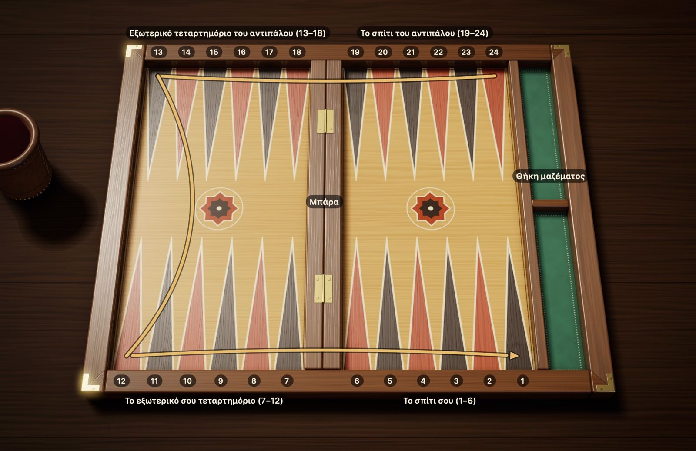
Σχήμα 2.1Το ταμπλό του ταβλιού: 24 πόρτες, τέσσερις περιοχές και η μπάρα. Εσύ είσαι κάτω. Το χρυσό βελάκι δείχνει τη διαδρομή των πουλιών σου από την πόρτα 24 ως την πόρτα 1· ο αντίπαλος διανύει την ίδια διαδρομή αντίστροφα.
Οι περιοχές. Σκέψου το τάβλι σαν ένα γήπεδο χωρισμένο σε τέσσερα τεταρτημόρια· κάθε τεταρτημόριο έχει έξι πόρτες. Τα δύο τεταρτημόρια μπροστά σου είναι η δική σου πλευρά, τα δύο απέναντι η πλευρά του αντιπάλου:
Το σπίτι σου (1–6): Εκεί τελειώνει το ταξίδι. Όταν τα πούλια φτάσουν εδώ, βγαίνουν από το τάβλι. Στο Σχήμα 2.1, κάτω δεξιά.
Το εξωτερικό σου τεταρτημόριο (7–12): Ο τελευταίος σταθμός πριν από το σπίτι. Κάτω αριστερά.
Το εξωτερικό τεταρτημόριο του αντιπάλου (13–18): Η μέση της διαδρομής. Πάνω αριστερά.
Το σπίτι του αντιπάλου (19–24): Εκεί αρχίζει το ταξίδι. Πάνω δεξιά.
Η μπάρα. Το υπερυψωμένο χώρισμα στη μέση του ταβλιού λέγεται μπάρα. Έχει δύο δουλειές: χωρίζει το αριστερό από το δεξί μισό του ταβλιού, και είναι ο χώρος αναμονής των χτυπημένων πουλιών. Στη μέτρηση των πορτών δεν παίζει ρόλο· ένα πούλι που περνά από την 7 στην 6 κάνει ένα μόνο βήμα, κι ας μεσολαβεί η μπάρα.
Η λογική των αριθμών. Οι αριθμοί ξεκινούν από το σπίτι του καθενός. Γι’ αυτό κάθε τρίγωνο έχει δύο ονόματα: την πόρτα που εσύ λες 1, ο αντίπαλος τη λέει 24. Για να μη γίνεται σύγχυση, όλοι οι αριθμοί σε αυτό το βιβλίο είναι γραμμένοι από τη δική σου σκοπιά. Το Πούλια και Ζάρια μπορεί να γράψει αυτούς τους αριθμούς και στις ράγες του ταβλιού: άνοιξε την επιλογή «Αριθμοί πορτών» στην ενότητα Εμφάνιση των Ρυθμίσεων.
Η κατεύθυνση. Τα πούλια σου κινούνται πάντα προς τους μικρότερους αριθμούς. Ένα πούλι που ξεκινά από την 24, πάνω δεξιά, πηγαίνει πρώτα αριστερά κατά μήκος της πάνω πλευράς, στρίβει κάτω στην αριστερή πλευρά και μετά προχωρά δεξιά κατά μήκος της κάτω πλευράς, ώσπου να φτάσει στο σπίτι σου. Τα πούλια του αντιπάλου διανύουν την ίδια διαδρομή αντίστροφα· γι’ αυτό οι δύο πλευρές συναντιούνται στον δρόμο.
Το καθρεφτισμένο τάβλι. Μερικοί παίκτες προτιμούν να στήνουν το σπίτι στα αριστερά. Τότε όλο το τάβλι καθρεφτίζεται και τα πούλια κινούνται δεξιόστροφα. Από την άποψη των κανόνων, ανάμεσα στα δύο στησίματα δεν υπάρχει καμία διαφορά.
2.2 Η αρχική διάταξη
Κάθε παιχνίδι ανοίγει από την ίδια αρχική θέση. Τοποθέτησε τα 15 πούλια σου σε τέσσερα σημεία, από το πιο μακρινό προς το πιο κοντινό, ως εξής:
Πόρτα 24, 2 πούλια. Η γωνία του σπιτιού του αντιπάλου. Αυτά τα δύο είναι τα πούλια σου που απέχουν περισσότερο από το σπίτι.
Πόρτα 13, 5 πούλια. Η πάνω αριστερή γωνία· η ακριβής μέση της διαδρομής.
Πόρτα 8, 3 πούλια. Στο εξωτερικό σου τεταρτημόριο, δύο βήματα πριν από το σπίτι.
Πόρτα 6, 5 πούλια. Η πρώτη πόρτα του σπιτιού σου, αυτή που βλέπει στην μπάρα.
Με 2 + 5 + 3 + 5 φτάνεις στα 15. Επειδή ο αντίπαλος στήνει την ίδια διάταξη από τη δική του πλευρά, τα πούλια του πέφτουν στις δικές σου πόρτες 1, 12, 17 και 19. Αν δίπλωνες το τάβλι στη μέση, οι δύο πλευρές θα έπεφταν ακριβώς η μία πάνω στην άλλη.
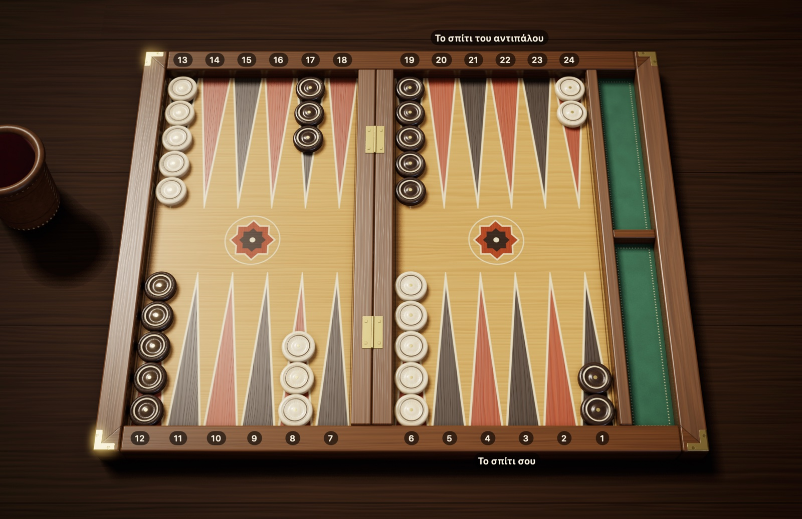
Σχήμα 2.2Η αρχική διάταξη: 15 πούλια για κάθε παίκτη. Τα πούλια σου είναι κρεμ και το σπίτι σου κάτω δεξιά· τα πούλια του αντιπάλου σκούρα καφέ και το σπίτι του πάνω δεξιά. Έχεις 2 πούλια στην 24, 5 στη 13, 3 στην 8 και 5 στην 6.
Εύκολος τρόπος να το θυμάσαι: Μάθε απ’ έξω το «2-5-3-5» και τοποθέτησε τα πούλια ξεκινώντας από την πιο πίσω πόρτα. Το ένα τρίτο των πουλιών σου (5 πούλια) είναι ήδη στο σπίτι σου, τα άλλα σε διάφορα σημεία της διαδρομής. Το μεγαλύτερο μέρος του παιχνιδιού το περνάς φέρνοντας με ασφάλεια στο σπίτι τα πούλια που έχουν μείνει πίσω.
2.3 Η έναρξη του παιχνιδιού
Το ποιος θα κάνει την πρώτη κίνηση το ορίζουν τα ζάρια. Κάθε παίκτης ρίχνει ένα ζάρι, και ξεκινά όποιος φέρει τον μεγαλύτερο αριθμό. Αν οι αριθμοί είναι ίσοι, το αποτέλεσμα δεν μετρά· οι δύο πλευρές ξαναρίχνουν μέχρι να έρθουν διαφορετικοί αριθμοί.
Για την πρώτη κίνηση του νικητή υπάρχουν δύο διαφορετικές παραδόσεις:
Διεθνής κανόνας: Κανείς δεν ξαναρίχνει. Τα δύο ζάρια στο τραπέζι, δηλαδή το δικό σου και του αντιπάλου, γίνονται μαζί η πρώτη σου κίνηση. Αν εσύ έφερες 5 και ο αντίπαλος 3, παίζεις 5-3. Επειδή τα αρχικά ζάρια δεν μπορεί να είναι ίσα, αυτή η πρώτη κίνηση δεν παίζεται ποτέ με διπλές.
Διαδεδομένος τουρκικός κανόνας: Ο νικητής παίρνει και τα δύο ζάρια στο χέρι και ρίχνει από την αρχή. Αυτή η ζαριά μπορεί να είναι οτιδήποτε, ακόμη και διπλές.
Από εκεί και πέρα οι παίκτες παίζουν εναλλάξ, ρίχνοντας κάθε φορά δύο ζάρια.
Νέο παιχνίδι. Στους διεθνείς κανόνες κάθε παιχνίδι ανοίγει από το μηδέν, με την αρχική ζαριά. Στο τουρκικό τάβλι, πάλι, το άνοιγμα το κάνει συνήθως ο νικητής του προηγούμενου παιχνιδιού.
Οι καλοί τρόποι στη ζαριά. Όταν παίζεις σε τραπέζι, υπάρχουν μερικές καθιερωμένες συνήθειες. Τα ζάρια συνήθως ανακατεύονται στο ποτήρι και ρίχνονται στο δεξί μισό του ταβλιού. Ζάρι που πέφτει στραβά, που μένει πάνω σε πούλι ή που φεύγει έξω από το τάβλι δεν παίζεται· η ζαριά επαναλαμβάνεται και με τα δύο ζάρια. Η σειρά περνά σε σένα τη στιγμή που ο αντίπαλος σηκώνει τα ζάρια του· ζαριά που ρίχνεις πριν από αυτό δεν μετρά. Αυτά που περιγράφονται εδώ είναι η παραδοσιακή εθιμοτυπία του τραπεζιού· οι κανονισμοί των τουρνουά μπορεί να διαφέρουν σε αυτές τις λεπτομέρειες, ανάλογα με τη χρήση χρονομέτρου, ποτηριού ή τεσσάρων ζαριών.
2.4 Τουρκικοί και διεθνείς κανόνες
Και στα δύο σετ η μέτρηση των πορτών, οι κανόνες των ζαριών και η λογική των κλειστών πορτών είναι ίδια. Οι διαφορές συγκεντρώνονται στην έναρξη, στη βαθμολογία και σε δύο λεπτομέρειες μέσα στο παιχνίδι: στο διαδεδομένο τουρκικό τάβλι, το χτύπα-και-φύγε μέσα στο δικό σου σπίτι και το να ξοδεύεις pip στο μάζεμα ενώ μπορείς να βγάλεις πούλι θεωρούνται απαγορευμένα. Ο παρακάτω πίνακας ακολουθεί τους διαδεδομένους κανόνες· από τραπέζι σε τραπέζι μπορεί να υπάρχουν μικρές διαφορές.
Στο Πούλια και Ζάρια μπορείς να παίξεις και με τα δύο σετ κανόνων. Σε αυτό το βιβλίο, όπου τα δύο σετ διαφέρουν, σημειώνονται χωριστά και οι δύο κανόνες· αρκεί να διαλέξεις με ποιο θα παίξεις πριν αρχίσει το παιχνίδι.
Πίνακας 2.1 Τουρκικό τάβλι και διεθνείς κανόνες
Θέμα
Διεθνείς (με κύβο)
Διαδεδομένο τουρκικό τάβλι
Πρώτη κίνηση
Παίζεται με τα αρχικά ζάρια, ποτέ με διπλές
Όποιος φέρει μεγαλύτερο ξαναρίχνει τα δύο ζάρια, μπορεί να έρθουν διπλές
Ποιος ξεκινά το επόμενο παιχνίδι
Σε κάθε παιχνίδι ρίχνεται αρχική ζαριά
Ξεκινά ο νικητής του προηγούμενου παιχνιδιού
Χτύπα-και-φύγε στο δικό σου σπίτι
Επιτρέπεται
Θεωρείται απαγορευμένο (στο Πούλια και Ζάρια επιλέγεται στο πάνελ νέου αγώνα· από προεπιλογή επιτρέπεται)
Να προχωράς πούλι στο μάζεμα ενώ μπορείς να βγάλεις (sallamak)
Επιτρέπεται
Θεωρείται απαγορευμένο (στο Πούλια και Ζάρια επιλέγεται στο πάνελ νέου αγώνα· από προεπιλογή επιτρέπεται)
Μπάκγκαμον
Υπάρχει (× 3)
Δεν υπάρχει, μετρά ως γκάμον (× 2)
Κύβος διπλασιασμού
Στάνταρ, υποχρεωτικός στα τουρνουά
Δεν υπάρχει καθόλου
Κανόνας Crawford
Στάνταρ στους αγώνες
Δεν υπάρχει
2.5 Η οθόνη παιχνιδιού στο Πούλια και Ζάρια
Όταν αρχίζει ο αγώνας, γύρω από το τάβλι εμφανίζονται περιοχές που δείχνουν την κατάσταση του παιχνιδιού. Το Σχήμα 2.3 δείχνει την οθόνη όταν είναι η σειρά σου να παίξεις· η επεξήγηση των αριθμών ακολουθεί.
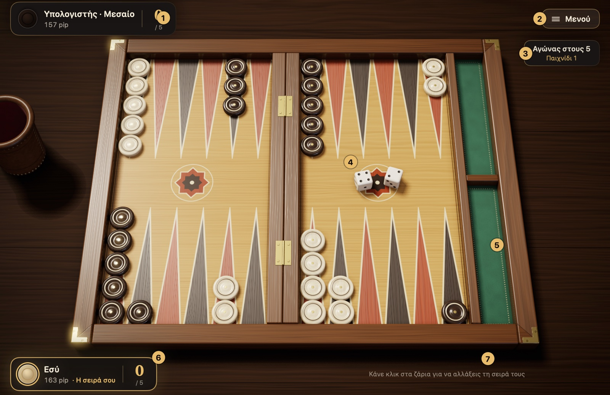
Σχήμα 2.3Η οθόνη παιχνιδιού του Πούλια και Ζάρια. Η επεξήγηση των αριθμημένων στοιχείων στην παρακάτω λίστα.
Πλακέτα αντιπάλου: Δείχνει τον αντίπαλό σου (όπως «Υπολογιστής · Μεσαίο», με το επίπεδο δυσκολίας), τη μέτρηση pip του και τους πόντους του στον αγώνα. Όσο ο υπολογιστής σκέφτεται, γράφει «Σκέφτεται…».
Μενού: Κάνει παύση στο παιχνίδι. Στην κάρτα που ανοίγει υπάρχουν η συνέχιση, οι ρυθμίσεις, η κάρτα «Πώς παίζεται», το ιστορικό κινήσεων, οι αγώνες, η παραίτηση και η έξοδος από τον αγώνα. Το ίδιο κάνει και το πλήκτρο Esc.
Πληροφορίες αγώνα: Δείχνει μέχρι πόσους πόντους παίζεται ο αγώνας (στη συνεδρία γράφει «Συνεδρία») και σε ποιο παιχνίδι βρίσκεσαι. Στους διεθνείς κανόνες από κάτω στέκεται η ένδειξη του κύβου.
Ζάρια: Τα δικά σου ζάρια πέφτουν στο δεξί μισό του ταβλιού, του υπολογιστή στο αριστερό.
Θήκη μαζέματος: Η πράσινη θήκη στα δεξιά του ταβλιού. Τα πούλια που έβγαλες εσύ στοιβάζονται στο κάτω μισό της, του αντιπάλου στο πάνω.
Η πλακέτα σου: Δείχνει τη μέτρηση pip σου, τους πόντους σου στον αγώνα και, όταν είναι η σειρά σου, την ένδειξη «Η σειρά σου».
Γραμμή υπόδειξης: Σου λέει με λίγα λόγια τι μπορείς να κάνεις εκείνη τη στιγμή. Όταν δοκιμάσεις μια μη επιτρεπτή κίνηση, εδώ διαβάζεις και τον λόγο, για παράδειγμα «Αυτό το πούλι δεν κινείται με αυτά τα ζάρια».
Προαιρετικά κουμπιά. Αν τα ενεργοποιήσεις στις Ρυθμίσεις, κάτω δεξιά εμφανίζονται τρία ακόμη κουμπιά: η «Υπόδειξη» σημειώνει στο τάβλι την κίνηση που προτείνει η μηχανή Μάστερ (⌘I)· η «Αναίρεση» παίρνει πίσω τα βήματα που έπαιξες σε αυτόν τον γύρο (⌘Z)· και το «Τέλος», όταν η αυτόματη επιβεβαίωση είναι κλειστή, τελειώνει τον γύρο σου και δίνει τη σειρά στον αντίπαλο (Return). Λεπτομέρειες στην ενότητα 5.3.
Πριν αρχίσεις το παιχνίδι. Στο πάνελ νέου αγώνα διαλέγεις το επίπεδο δυσκολίας, το σετ κανόνων (τουρκικό τάβλι ή διεθνές), το μήκος του αγώνα ή, στους διεθνείς κανόνες, τη συνεδρία, και το χρώμα των πουλιών σου. Αυτές οι επιλογές ισχύουν για όλον τον αγώνα· λεπτομέρειες στην ενότητα 5.1.
Πώς παίζεται ένας γύρος; Όταν έρθει η σειρά σου, τα ζάρια ρίχνονται μόνα τους και χύνονται από το δερμάτινο ποτήρι στο τάβλι· στους διεθνείς κανόνες, στον γύρο που μπορείς να διπλασιάσεις, η εφαρμογή περιμένει και ρίχνεις εσύ τα ζάρια, με το κουμπί «Ρίξε ζάρια» ή με το πλήκτρο Κενό. Παίζεις σέρνοντας και αφήνοντας το πούλι σου, ή κάνοντας κλικ πρώτα στο πούλι και μετά στην πόρτα όπου θα πάει· τα πούλια που μπορούν να παιχτούν φωτίζονται, και οι πόρτες όπου μπορούν να πάνε δείχνονται με κύκλο. Μόλις παίξεις το τελευταίο βήμα, ο γύρος σου τελειώνει και η σειρά περνά στον αντίπαλο. Αν θέλεις να ρίχνεις εσύ τα ζάρια σε κάθε γύρο, να επιβεβαιώνεις τον γύρο με το «Τέλος» ή να παίρνεις πίσω βήματα, τα διαλέγεις στις Ρυθμίσεις· λεπτομέρειες στην ενότητα 5.3. Αντικανονική κίνηση η εφαρμογή δεν τη δέχεται έτσι κι αλλιώς.
Τι λέει η μέτρηση pip; Το pip στις πλακέτες είναι πόσες πόρτες πρέπει ακόμη να διανύσει ο κάθε παίκτης για να φέρει όλα τα πούλια του στο σπίτι και να τα βγάλει. Όποιος έχει τον μικρότερο αριθμό προηγείται στην κούρσα. Λεπτομέρειες στην ενότητα 4.2.
Κεφάλαιο 3
Οι κανόνες του παιχνιδιού
Αυτό το κεφάλαιο εξηγεί με τη σειρά όλους τους κανόνες του παιχνιδιού: την κίνηση των πουλιών, τις διπλές, την αναγκαστική κίνηση, το χτύπημα και την επανείσοδο του χτυπημένου πουλιού, το μάζεμα, τη βαθμολογία και τον κύβο διπλασιασμού.
3.1 Η κίνηση των πουλιών
Ο παίκτης που έχει σειρά ρίχνει δύο ζάρια και προχωρά πούλια όσο δείχνουν οι αριθμοί των ζαριών. Αυτή η ενότητα εξηγεί βήμα βήμα πώς παίζεις ένα ζάρι.
Διαβάζοντας το ζάρι
Τα ζάρια λένε πόσες πόρτες θα προχωρήσουν τα πούλια. Ζάρι που δείχνει 4 σημαίνει ότι ένα πούλι προχωρά 4 πόρτες. Στο μέτρημα δεν μετράς την πόρτα όπου στέκεται το πούλι· ξεκινάς από την επόμενη. Το πούλι της πόρτας 13 με το 4 πηγαίνει στην πόρτα 9, μετρώντας 12, 11, 10, 9.
Στο τάβλι δεν υπάρχει όπισθεν: ένα πούλι μπορεί να κινηθεί μόνο προς πόρτες με μικρότερο αριθμό, δηλαδή πλησιάζοντας το σπίτι του.
Δύο ζάρια, δύο ξεχωριστές κινήσεις
Σκέψου τα δύο ζάρια που έχεις σαν δύο ξεχωριστά δικαιώματα. Όταν έρθει 5-3, τα χρησιμοποιείς όπως θέλεις:
Μπορείς να παίξεις το 5 με ένα πούλι και το 3 με άλλο.
Μπορείς να τα δώσεις και τα δύο στο ίδιο πούλι και να το μεταφέρεις συνολικά 8 πόρτες· μπορείς να παίξεις πρώτα το 3, μπορείς και πρώτα το 5.
Όταν παίζεις τα δύο ζάρια με ένα πούλι, το πούλι στην πραγματικότητα κάνει δύο ξεχωριστά άλματα και πατά για μια στιγμή στην πόρτα όπου τελειώνει το πρώτο άλμα. Και εκείνη η ενδιάμεση πόρτα πρέπει να είναι μέρος όπου μπορεί να πατήσει το πούλι. Δεν γίνεται να μετρήσεις μονομιάς το άθροισμα των δύο ζαριών και να προσπεράσεις την ενδιάμεση πόρτα.
Σχήμα 3.1Οι δύο τρόποι να παίξεις το 5-3. Πράσινα βελάκια, τρόπος 1: 8→3 (5) και 6→3 (3)· δύο ξεχωριστά πούλια κλείνουν την πόρτα 3. Μπλε βελάκια, τρόπος 2: 24→21 (3) και μετά 21→16 (5)· το ίδιο πούλι πηγαίνει συνολικά 8 πόρτες. Το ίδιο πούλι δεν μπορεί να παίξει πρώτα το 5: η πόρτα 19 με το κόκκινο πλαίσιο είναι κλειστή πόρτα του αντιπάλου και δεν μπορεί να γίνει ενδιάμεσος σταθμός.
Ισχύει και το αντίστροφο: δεν μπορείς να χωρίσεις ένα ζάρι σε κομμάτια. Δεν επιτρέπεται να μοιράσεις ένα 5 σε δύο διαφορετικά πούλια, ως 3 και 2· κάθε ζάρι ανήκει ολόκληρο σε ένα μόνο πούλι.
Πού μπορεί να σταθεί το πούλι;
Όταν προχωράς ένα πούλι, έχει σημασία η κατάσταση της πόρτας προορισμού. Υπάρχουν τέσσερις περιπτώσεις:
Πίνακας 3.1 Πότε μπορεί να σταθεί το πούλι στην πόρτα προορισμού;
Τι υπάρχει στην πόρτα προορισμού;
Μπορεί να σταθεί το πούλι;
Κανένα πούλι (άδεια πόρτα)
Ναι
Ένα ή περισσότερα δικά σου πούλια
Ναι, χωρίς όριο αριθμού
Ένα μόνο πούλι του αντιπάλου (ανοιχτό)
Ναι, το πούλι του αντιπάλου χτυπιέται
Δύο ή περισσότερα πούλια του αντιπάλου (κλειστή πόρτα)
Όχι
Σχήμα 3.2Ανοιχτή πόρτα και κλειστή πόρτα. Για το πούλι της 11: η πόρτα 10 είναι άδεια, μπορείς να σταθείς. Στην 8 έχεις δικά σου πούλια, μπορείς να βάλεις από πάνω όσα θέλεις. Στην 7 υπάρχει ένα μόνο πούλι του αντιπάλου (ανοιχτό)· μπορείς να σταθείς και εκείνο το πούλι χτυπιέται. Στην 9 με το κόκκινο πλαίσιο υπάρχουν δύο πούλια του αντιπάλου (κλειστή πόρτα): το διακεκομμένο κόκκινο βελάκι δείχνει ότι εκεί δεν μπορείς να σταθείς.
Την πόρτα όπου στέκονται μαζί δύο ή περισσότερα πούλια τη λέμε κλειστή πόρτα. Σκέψου την κλειστή πόρτα σαν οδόφραγμα: ο αντίπαλος δεν μπορεί ούτε να σταθεί σε εκείνη την πόρτα ούτε να την πατήσει ως ενδιάμεσο σταθμό σε μια κίνηση με δύο ζάρια. Το να κλείνεις έξυπνα τις δικές σου πόρτες είναι ο πιο αποτελεσματικός τρόπος να στενώσεις τον δρόμο του αντιπάλου.
3.2 Διπλές
Όταν τα δύο ζάρια δείχνουν τον ίδιο αριθμό (από 1-1 ως 6-6), σου πέφτει λαχείο: τον αριθμό αυτόν τον χρησιμοποιείς όχι δύο, αλλά τέσσερις ολόκληρες φορές. Όποιος φέρει 5-5 κάνει τέσσερις ξεχωριστές κινήσεις του 5 και προχωρά συνολικά 20 πόρτες. Αυτές οι ζαριές λέγονται διπλές.
Τις τέσσερις κινήσεις τις μοιράζεις όπως θέλεις: από μία σε τέσσερα διαφορετικά πούλια, από δύο σε δύο πούλια ή και τις τέσσερις σε ένα μόνο πούλι. Αν κάνεις περισσότερα από ένα βήματα με ένα πούλι, κάθε ενδιάμεσος σταθμός από όπου περνά πρέπει να είναι ανοιχτός.
Σχήμα 3.3Διπλές: τέσσερις κινήσεις με 4-4. Μετάφερε τα δύο πούλια της 24 στην 20 (4 + 4) και κατέβασε δύο πούλια από τη 13 στην 9 (4 + 4). Καθεμιά από τις τέσσερις κινήσεις είναι 4 πόρτες· μπορείς να τις μοιράσεις στα πούλια που θέλεις.
3.3 Αναγκαστική κίνηση
Αφού ρίξεις τα ζάρια, δεν έχεις το δικαίωμα να πεις «πάσο σε αυτόν τον γύρο». Αν τα ζάρια επιτρέπουν κάποια κίνηση, είσαι υποχρεωμένος να την κάνεις. Ποιο ζάρι και πόσο θα χρησιμοποιήσεις το βρίσκεις με τις εξής ερωτήσεις:
Υπάρχει κίνηση που χρησιμοποιεί και τα δύο ζάρια; Αν υπάρχει, πρέπει να την κάνεις. Αν η πρώτη κίνηση που σου έρχεται στο μυαλό αφήνει ένα ζάρι αχρησιμοποίητο, ψάξε άλλον τρόπο να παιχτούν και τα δύο ζάρια.
Παίζεται μόνο το ένα ζάρι; Τότε χρησιμοποιείς το ζάρι που παίζεται, και το άλλο χάνεται.
Τα ζάρια παίζονται το καθένα μόνο του, αλλά όχι και τα δύο μαζί; Σε αυτή την περίπτωση η επιλογή δεν είναι δική σου· χρησιμοποιείς το ζάρι με τον μεγαλύτερο αριθμό. Το Σχήμα 3.4 το δείχνει.
Δεν παίζεται κανένα ζάρι; Ο γύρος σου πάει χαμένος, και η σειρά της ζαριάς περνά στον αντίπαλο.
Ήρθαν διπλές; Αν δεν μπορούν να παιχτούν και οι τέσσερις κινήσεις, είσαι υποχρεωμένος να κάνεις τον μεγαλύτερο δυνατό αριθμό επιτρεπτών κινήσεων· αν η σειρά των κινήσεων επηρεάζει αυτόν τον αριθμό, πρέπει να διαλέξεις τη σειρά που επιτρέπει τις περισσότερες κινήσεις. Οι υπόλοιπες χάνονται.
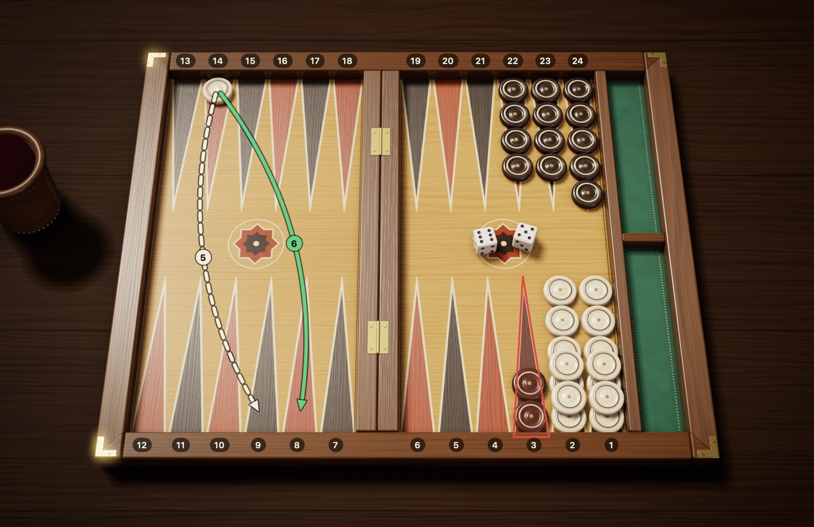
Σχήμα 3.4Ο κανόνας του μεγαλύτερου ζαριού: 6-5. Το πούλι της 14 μπορεί να πάει με το 6 στην 8 (πράσινο βελάκι) ή με το 5 στην 9 (διακεκομμένο βελάκι), αλλά δεν μπορεί να παίξει και τα δύο: το δεύτερο βήμα και των δύο διαδρομών καταλήγει στην πόρτα 3 (κόκκινο πλαίσιο), που είναι κλειστή πόρτα του αντιπάλου. Τα άλλα πούλια σου, στο βάθος του σπιτιού, δεν μπορούν να παίξουν κανένα ζάρι. Όταν τα ζάρια παίζονται χωριστά αλλά όχι μαζί, παίζεται το μεγαλύτερο: 14→8.
Ως αποτέλεσμα αυτών των κανόνων, κάποιες φορές σού μένει μία και μόνη κίνηση που μπορείς να παίξεις· αυτή λέγεται αναγκαστική κίνηση. Στο ψηφιακό τάβλι αυτούς τους κανόνες τους ελέγχει η ίδια η εφαρμογή και δεν επιτρέπει αντικανονική κίνηση· στο πραγματικό τάβλι η προσοχή είναι δική σου ευθύνη.
3.4 Ανοιχτό πούλι και χτύπημα
Αυτό που κάνει το τάβλι συναρπαστικό είναι το χτύπημα. Πρώτα πρέπει να ξεχωρίσουμε δύο καταστάσεις:
Ανοιχτό πούλι: Πούλι που έχει μείνει μόνο του σε μια πόρτα. Είναι απροστάτευτο· αν έρθει πάνω του ο αντίπαλος, χάνει τη θέση του.
Κλειστή πόρτα: Πόρτα που μοιράζονται τουλάχιστον δύο πούλια του ίδιου χρώματος. Τα πούλια που στέκονται εδώ δεν μπορεί να τα αγγίξει κανείς.
Όταν κατεβάζεις το πούλι σου στην πόρτα όπου στέκεται ανοιχτό πούλι του αντιπάλου, έχεις χτυπήσει εκείνο το πούλι. Το χτυπημένο πούλι σηκώνεται από το τάβλι και τοποθετείται στην μπάρα, στη μέση. Για τον αντίπαλο αυτό είναι σοβαρό πισωγύρισμα: το πούλι πρέπει να ξεκινήσει το ταξίδι από την αρχή, και μέχρι να επιστρέψει στο τάβλι τα χέρια του αντιπάλου είναι δεμένα.
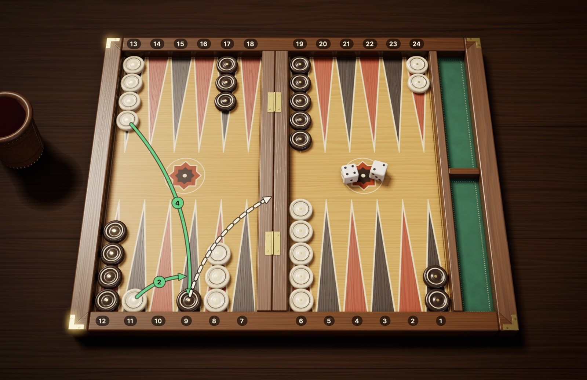
Σχήμα 3.5Χτύπημα: με 13→9 χτυπιέται ανοιχτό πούλι. Με το 4, 13→9: στέκεσαι πάνω στο μοναχικό πούλι του αντιπάλου και το χτυπάς· το χτυπημένο πούλι πηγαίνει στην μπάρα (διακεκομμένο βελάκι). Με το 2, 11→9: φέρνεις και δεύτερο πούλι και κλείνεις την πόρτα 9· τώρα πια δεν μπορείς να χτυπηθείς.
Όσα πρέπει να ξέρεις:
Το χτύπημα δεν είναι υποχρεωτικό. Ακόμη κι όταν μπορείς να χτυπήσεις ένα ανοιχτό πούλι, έχεις την επιλογή να κάνεις άλλη κίνηση.
Αφού χτυπήσεις, μπορείς να συνεχίσεις τον δρόμο σου με το ίδιο πούλι. Για παράδειγμα, με 4-2 μπορείς να πας ένα πούλι 4 πόρτες και να χτυπήσεις, και μετά να προχωρήσεις το ίδιο πούλι άλλες 2 πόρτες. Αυτό λέγεται «χτύπα και φύγε» (vur kaç). Στους διεθνείς κανόνες επιτρέπεται σε κάθε σημείο του ταβλιού· στο διαδεδομένο τουρκικό τάβλι και στις ελληνικές πόρτες, πάλι, απαγορεύεται να φύγεις με το ίδιο πούλι αφού χτυπήσεις μέσα στο δικό σου σπίτι. Στο Πούλια και Ζάρια, όταν παίζεις με τουρκικούς κανόνες, μπορείς να ενεργοποιήσεις αυτή την απαγόρευση με την επιλογή «Απαγόρευση χτύπα-και-φύγε» στο πάνελ νέου αγώνα· από προεπιλογή είναι κλειστή.
Στην ίδια κίνηση μπορείς να χτυπήσεις περισσότερα από ένα ανοιχτά πούλια· για παράδειγμα, ένα πούλι μπορεί να χτυπήσει ένα ανοιχτό πούλι στον ενδιάμεσο σταθμό των δύο ζαριών και άλλο ένα στον προορισμό.
Οι ίδιοι κανόνες ισχύουν και για σένα. Το πούλι που αφήνεις ανοιχτό χτυπιέται αν το πετύχει το ζάρι του αντιπάλου. Γι’ αυτό, όποτε μπορείς, προσπάθησε να κρατάς τα πούλια σου σε ζευγάρια.
3.5 Η επανείσοδος του χτυπημένου πουλιού
Όταν χτυπηθεί δικό σου πούλι, στη σειρά σου έχεις ένα μόνο θέμα στην ημερήσια διάταξη: να κατεβάσεις εκείνο το πούλι πίσω στο τάβλι. Όσο έχεις πούλι που περιμένει στην μπάρα, τα άλλα πούλια σου θεωρούνται παγωμένα.
Από πού μπαίνει; Το χτυπημένο πούλι ξεκινά το ταξίδι από την αρχή, δηλαδή από το σπίτι του αντιπάλου. Την πόρτα όπου μπαίνει την ορίζει το ζάρι. Μέτρησε το σπίτι του αντιπάλου από την άκρη προς την μπάρα, από το 1 ως το 6: αν φέρεις 1, μπαίνεις στην πόρτα στη γωνία του ταβλιού, αν φέρεις 6, στην πόρτα δίπλα στην μπάρα. Με τη δική σου αρίθμηση:
Πίνακας 3.2 Η πόρτα όπου μπαίνει το χτυπημένο πούλι, ανάλογα με το ζάρι
Ζάρι
Πόρτα εισόδου
1
24
2
23
3
22
4
21
5
20
6
19
Στην πόρτα που δείχνει το ζάρι μπορεί να μην υπάρχει κανένα πούλι, μπορεί να υπάρχουν δικά σου πούλια ή μπορεί να στέκεται ένα μόνο πούλι του αντιπάλου. Και στις τρεις περιπτώσεις μπαίνεις· στην τελευταία, μπαίνοντας χτυπάς εκείνο το πούλι. Κλειστή για σένα είναι μόνο η πόρτα που έχει κλείσει ο αντίπαλος.
Σχήμα 3.6Η επανείσοδος του χτυπημένου πουλιού: 5-2. Το πούλι σου από την μπάρα μπαίνει στο σπίτι του αντιπάλου: με το 1 στην 24, με το 2 στην 23 … με το 6 στη 19. Με το 5 δεν μπορείς να μπεις: η πόρτα 20 είναι κλειστή πόρτα του αντιπάλου (κόκκινο πλαίσιο). Με το 2 μπαίνεις στην άδεια πόρτα 23 (πράσινο πλαίσιο). Αφού μπεις, παίζεις το 5 με άλλο πούλι ή με το πούλι που μπήκε.
Η είσοδος βήμα βήμα:
Ρίξε τα ζάρια και δες σε ποια πόρτα του σπιτιού του αντιπάλου αντιστοιχεί το καθένα.
Αν τουλάχιστον μία από τις πόρτες που αντιστοιχούν είναι ανοιχτή για σένα, βάλε το πούλι σου εκεί.
Η είσοδος χρησιμοποιεί ένα ζάρι. Το άλλο ζάρι μένει ελεύθερο· το παίζεις με όποιο πούλι θέλεις, ακόμη και με το πούλι που μόλις μπήκε.
Αν έχεις δύο πούλια στην μπάρα, και τα δύο ζάρια πηγαίνουν σε εισόδους. Αν μπορεί να μπει μόνο το ένα, κατεβάζεις αυτό· επειδή το δεύτερο πούλι περιμένει στην μπάρα, σε εκείνον τον γύρο δεν μπορείς να κάνεις άλλη κίνηση.
Η είσοδος γίνεται με ένα ζάρι. Ας πούμε ότι έφερες 5-2· η 20 και η 23 είναι κλειστές πόρτες του αντιπάλου, η πόρτα 18 όμως είναι άδεια. Δεν μπορείς να ενώσεις τα δύο ζάρια, να μετρήσεις 7 πόρτες και να κατέβεις απευθείας στη 18. Το πούλι πρέπει πρώτα να μπει με ένα μόνο ζάρι σε ανοιχτή πόρτα του σπιτιού του αντιπάλου· επειδή εδώ είναι κλειστές και οι δύο, είσοδος δεν υπάρχει.
Μένεις έξω (gele)
Αν οι πόρτες που δείχνουν τα ζάρια είναι και οι δύο κλειστές πόρτες του αντιπάλου, το πούλι σου στην μπάρα μένει έξω για εκείνον τον γύρο. Αυτή η άτυχη ζαριά λέγεται στα τουρκικά gele. Επειδή με πούλι στην μπάρα δεν παίζεται άλλο πούλι, ο γύρος σου πάει χαμένος· στην επόμενη σειρά σου ξαναδοκιμάζεις την τύχη σου.
Αποκλεισμός
Η χειρότερη περίπτωση είναι να είναι κλειστές και οι έξι πόρτες του σπιτιού του αντιπάλου. Τότε, ό,τι κι αν δείξουν τα ζάρια, πόρτα εισόδου δεν υπάρχει· αυτό λέγεται αποκλεισμός. Μέχρι ο αντίπαλος να ανοίξει μία από τις κλειστές πόρτες του, η σειρά σου περνά κάθε φορά χωρίς κίνηση· στο τραπέζι δεν χρειάζεται ούτε να ρίξεις ζάρια, η σειρά περνά κατευθείαν στον αντίπαλο. Έτσι γίνεται και στο Πούλια και Ζάρια: ζάρια δεν ρίχνονται, στην οθόνη γράφει «Αποκλεισμός» και η σειρά περνά κατευθείαν στον αντίπαλο.
Σχήμα 3.7Αποκλεισμός: το σπίτι του αντιπάλου εντελώς κλειστό. Το πούλι σου στην μπάρα θα μπορούσε να μπει σε μια ανοιχτή πόρτα ανάμεσα στις 19–24, αλλά και οι έξι πόρτες είναι κλειστές (κόκκινα πλαίσια). Αυτό λέγεται αποκλεισμός: μέχρι ο αντίπαλος να ανοίξει μια πόρτα, η σειρά σου περνά χωρίς να ριχτούν ζάρια.
3.6 Το μάζεμα
Η τελική ευθεία της κούρσας είναι να βγάλεις τα πούλια από το τάβλι· αυτό λέγεται μάζεμα. Έχει μία προϋπόθεση: όλα τα πούλια σου που βρίσκονται στο τάβλι πρέπει να είναι στο σπίτι σου, δηλαδή στις πόρτες 1–6. Αν έστω ένα πούλι σου είναι έξω από το σπίτι ή περιμένει στην μπάρα, δεν μπορείς να αρχίσεις το μάζεμα.
Ο βασικός κανόνας
Ο κανόνας είναι απλός: ο αριθμός του ζαριού δείχνει την πόρτα από την οποία θα πάρεις πούλι. Αν έρθει 6, σηκώνεις ένα πούλι από την πόρτα 6, αν έρθει 2, από την πόρτα 2, και το βάζεις στον χώρο στην άκρη του ταβλιού. Το πούλι που βγήκε έχει αποχωρήσει οριστικά από το παιχνίδι.
Σχήμα 3.8Μάζεμα: δύο πούλια με 6-4. Με το 6 παίρνεις ένα πούλι από την πόρτα 6 και με το 4 ένα από την πόρτα 4, και τα βάζεις στη θήκη μαζέματος στα δεξιά. Το μάζεμα αρχίζει μόνο όταν και τα 15 πούλια είναι στο σπίτι σου.
Αν δεν υπάρχει πούλι στην πόρτα του ζαριού
Κάποιες φορές η πόρτα που δείχνει το ζάρι είναι άδεια. Τότε κάνε με τη σειρά τις εξής δύο ερωτήσεις:
Έχω πούλι σε πόρτα με μεγαλύτερο αριθμό; Αν έχεις, με εκείνο το ζάρι δεν μπορείς να μαζέψεις πούλι από χαμηλότερη πόρτα· παίζεις το ζάρι προχωρώντας, συνήθως, ένα πούλι από εκείνη την ψηλότερη πόρτα.
Δεν έχω κανένα πούλι πιο ψηλά; Τότε μαζεύεις ένα πούλι από την ψηλότερη πόρτα όπου έχεις πούλι. Για παράδειγμα, αν το πιο μακρινό σου πούλι είναι στην 4, και το 6 και το 5 μαζεύουν εκείνο το πούλι.
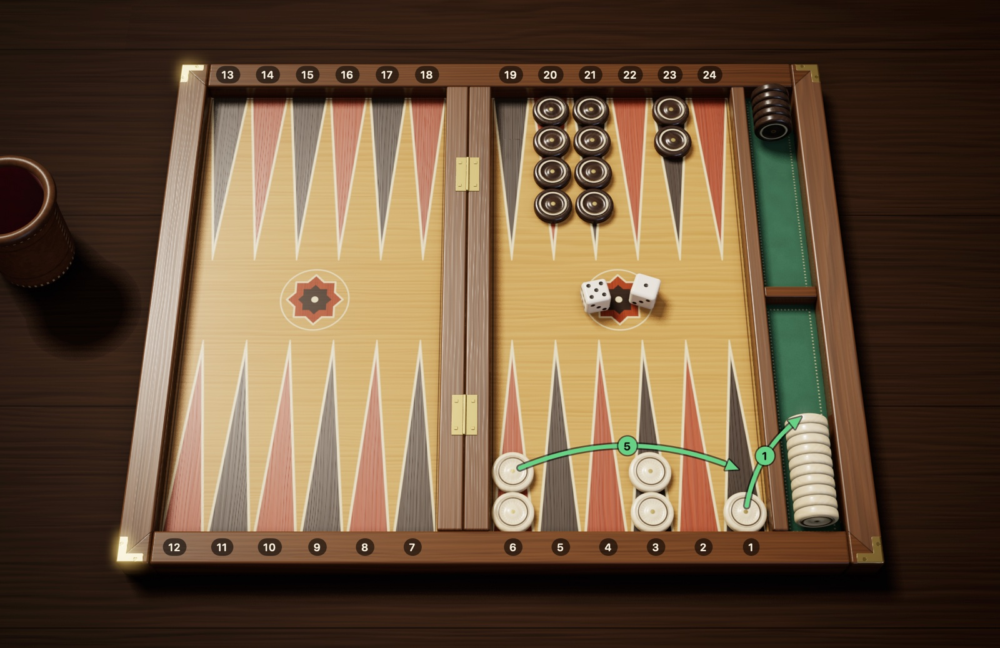
Σχήμα 3.9Μάζεμα: αν υπάρχει πούλι πιο ψηλά, προχωρά. Για το 5: η πόρτα 5 είναι άδεια, αλλά στην ψηλότερη πόρτα 6 υπάρχει πούλι· με το 5 δεν μπορείς να μαζέψεις από την 3 ή από την 1. Το 5 το παίζεις προχωρώντας ένα πούλι από την 6 (6→1), και με το 1 μαζεύεις ένα πούλι από την πόρτα 1. Άλλος τρόπος: πρώτα 6→5 με το 1 και μετά, με το 5, μαζεύεις εκείνο το πούλι από την πόρτα 5. Στη θήκη μαζέματος στέκονται τα 10 πούλια που μαζεύτηκαν προηγουμένως.Σχήμα 3.10Μάζεμα: από την ψηλότερη πόρτα. Δεν σου έχει μείνει πούλι στις πόρτες 6 και 5 ούτε πιο ψηλά. Σε αυτή την περίπτωση, με καθένα από τα δύο ζάρια μαζεύεις ένα πούλι από την ψηλότερη πόρτα όπου έχεις πούλια, δηλαδή από την 4.
Δεν είσαι υποχρεωμένος να μαζέψεις
Αν έχεις άλλη κίνηση σύμφωνη με τους κανόνες, δεν είσαι υποχρεωμένος να βγάλεις πούλι. Το να προχωράς τα πούλια μέσα στο σπίτι και να αφήνεις το μάζεμα για αργότερα λέγεται στα τουρκικά «sallamak». Για να μη δώσεις στον αντίπαλο ένα ανοιχτό πούλι που μπορεί να χτυπηθεί, αυτό είναι κάποιες φορές η πιο έξυπνη επιλογή. Επιτρέπεται επίσης να προχωρήσεις το ίδιο πούλι με το ένα ζάρι και να το βγάλεις από το τάβλι με το άλλο. Αυτή η ελευθερία ισχύει στους διεθνείς κανόνες· στο διαδεδομένο τουρκικό τάβλι, το να προχωρήσεις πούλι με το μικρότερο ζάρι και να ξοδέψεις pip ενώ μπορείς να βγάλεις πούλι θεωρείται απαγορευμένο. Στο Πούλια και Ζάρια, όταν παίζεις με τουρκικούς κανόνες, μπορείς να ενεργοποιήσεις αυτή την απαγόρευση με την επιλογή «Υποχρεωτική εξαγωγή» στο πάνελ νέου αγώνα· από προεπιλογή είναι κλειστή.
Αν χτυπηθείς στο μάζεμα
Αν ο αντίπαλος έχει πούλι που περιμένει στο δικό σου σπίτι, ένα ανοιχτό πούλι που αφήνεις στη διάρκεια του μαζέματος μπορεί να χτυπηθεί. Τότε το μάζεμα σταματά: το χτυπημένο πούλι πρέπει πρώτα να μπει στο παιχνίδι από το σπίτι του αντιπάλου, να γυρίσει όλο το τάβλι και να επιστρέψει στο σπίτι σου. Όταν όλα τα πούλια σου που έχουν μείνει στο τάβλι βρεθούν ξανά στο σπίτι σου, συνεχίζεις από εκεί που είχες μείνει.
3.7 Το τέλος του παιχνιδιού και οι πόντοι
Το παιχνίδι το παίρνει όποιος βγάλει πρώτος όλα τα πούλια του. Το μέγεθος της νίκης, πάλι, εξαρτάται από το πόσο πίσω έμεινε ο αντίπαλος τη στιγμή του τερματισμού. Όταν τελειώσει το παιχνίδι, κοίτα τα πούλια του αντιπάλου· θα ισχύει μία από τις τρεις παρακάτω περιπτώσεις:
Πίνακας 3.3 Το αποτέλεσμα του παιχνιδιού και οι πόντοι
Αποτέλεσμα
Κατάσταση του αντιπάλου
Διεθνείς, χωρίς κύβο
Διεθνείς, με κύβο
Τουρκικό τάβλι
Απλό παιχνίδι
Έχει βγάλει τουλάχιστον ένα πούλι
1
Αξία κύβου × 1
1
Γκάμον
Δεν έχει βγάλει κανένα πούλι
2
Αξία κύβου × 2
2
Μπάκγκαμον
Δεν έχει βγάλει κανένα πούλι και έχει ακόμη πούλι στην μπάρα ή στο δικό σου σπίτι
3
Αξία κύβου × 3
2 (μετρά ως γκάμον)
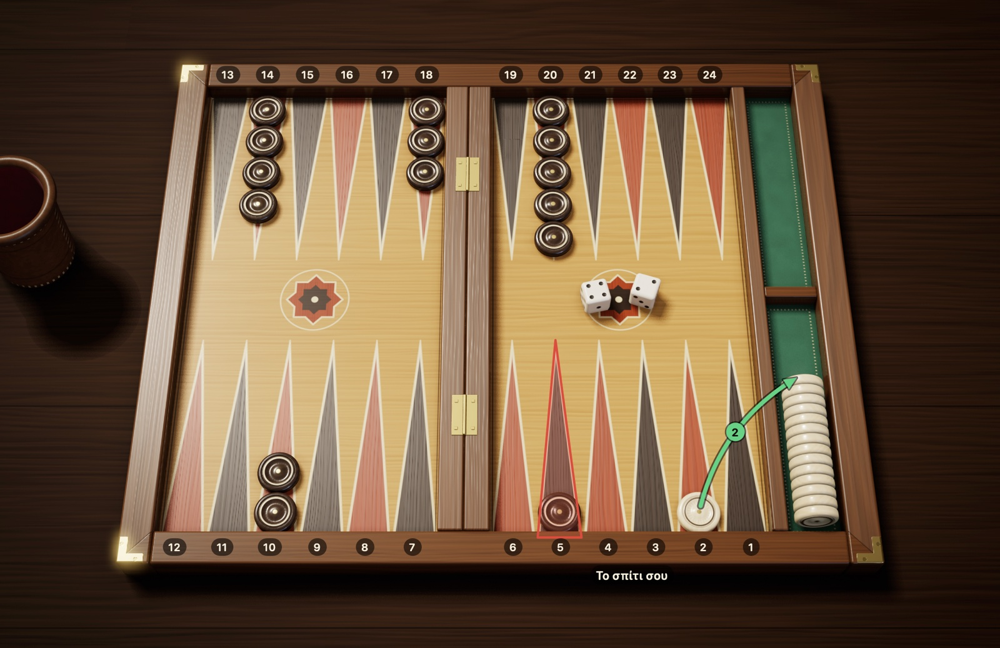
Σχήμα 3.11Μπάκγκαμον: ο αντίπαλος στο μηδέν και με πούλι στο σπίτι σου. Με το 2 μάζεψες το τελευταίο σου πούλι και κέρδισες το παιχνίδι. Ο αντίπαλος δεν μπόρεσε να βγάλει κανένα πούλι: αυτό από μόνο του σημαίνει γκάμον (2 πόντοι). Επιπλέον, στην πόρτα 5 με το κόκκινο πλαίσιο, δηλαδή στο δικό σου σπίτι, έχει ακόμη πούλι: μπάκγκαμον (3 πόντοι).
Παραδείγματα:
Αν, όταν μαζεύεις το τελευταίο σου πούλι, ο αντίπαλος έχει μαζέψει 4 πούλια, κερδίζεις απλό παιχνίδι: 1 πόντος.
Αν ο αντίπαλος δεν μπόρεσε να μαζέψει ούτε ένα πούλι, αλλά δεν του έχει μείνει πούλι στην μπάρα ή στο δικό σου σπίτι, κάνεις γκάμον: 2 πόντοι.
Αν ο αντίπαλος δεν μπόρεσε να μαζέψει κανένα πούλι και ένα πούλι του είναι ακόμη στην μπάρα ή στο δικό σου σπίτι, κάνεις μπάκγκαμον: 3 πόντοι.
Όποιος κάνει γκάμον με τον κύβο διπλασιασμού στο 8 παίρνει 8 × 2 = 16 πόντους.
Στο τουρκικό τάβλι το μπάκγκαμον δεν είναι ξεχωριστό αποτέλεσμα· και εκείνη η περίπτωση μετρά ως γκάμον και φέρνει 2 πόντους. Ξεκαθάρισε πριν από το παιχνίδι με ποιο σετ κανόνων παίζεις.
Οι πόντοι του αγώνα. Το τάβλι τις περισσότερες φορές δεν παίζεται ως ένα μόνο παιχνίδι, αλλά μέχρι έναν ορισμένο αριθμό πόντων· στα τουρνουά αυτός είναι συνήθως 5, 7 ή 11 πόντοι. Στο τέλος κάθε παιχνιδιού οι πόντοι γράφονται στον νικητή· αν παίζετε με κύβο, οι πόντοι πολλαπλασιάζονται με την αξία του κύβου. Όποιος φτάσει πρώτος τον στόχο κερδίζει τον αγώνα. Γι’ αυτό το να κάνεις γκάμον ή να το αποφύγεις μπορεί να αλλάξει το αποτέλεσμα του αγώνα.
3.8 Ο κύβος διπλασιασμού
Ο κύβος διπλασιασμού είναι ένας κύβος με αριθμούς, που όμως δεν ρίχνεται ποτέ. Στις όψεις του γράφει 2, 4, 8, 16, 32 και 64, και δείχνει απλώς την τρέχουσα αξία του παιχνιδιού. Στο τάβλι της γειτονιάς στην Τουρκία δεν τον βλέπεις σχεδόν ποτέ· αντίθετα, είναι απαραίτητος στα διεθνή τουρνουά και στους διαδικτυακούς αγώνες. Το Πούλια και Ζάρια έχει και κύβο διπλασιασμού· χρησιμοποιείται όταν στην αρχή του παιχνιδιού διαλέξεις το διεθνές σετ κανόνων· το πώς διπλασιάζεις και πώς απαντάς στην προσφορά εξηγείται στην ενότητα 5.4. Αν θα παίξεις χωρίς κύβο, μπορείς να παραλείψεις αυτή την ενότητα.
Η θέση και το νόημα του κύβου
Στην αρχή του παιχνιδιού ο κύβος στέκεται στη μέση, ανάμεσα στους δύο παίκτες, και στην πάνω όψη του διαβάζεται το 64. Επειδή ο κύβος δεν έχει 1, το 64 εδώ σημαίνει «δεν έχει διπλασιαστεί ακόμη, το παιχνίδι αξίζει 1 πόντο». Όσο ο κύβος είναι στη μέση, την πρώτη προσφορά μπορείτε να την κάνετε και οι δύο. Αφού γίνει δεκτή μια προσφορά, ο κύβος στέκεται μπροστά στον παίκτη που έχει το δικαίωμα της επόμενης προσφοράς. Στο Πούλια και Ζάρια ο κύβος εμφανίζεται κάτω από τις πληροφορίες αγώνα, πάνω δεξιά: στην αρχή γράφει «1 Κύβος στη μέση»· αφού γίνει δεκτός ένας διπλασιασμός, διαβάζεται, με την αξία του κύβου, «Κύβος δικός σου» ή «Κύβος του αντιπάλου».
Ο διπλασιασμός βήμα βήμα
Πότε; Η προσφορά μπορεί να γίνει μόνο στη δική σου σειρά και πριν αγγίξεις τα ζάρια. Αφού ριχτούν τα ζάρια, η ευκαιρία εκείνου του γύρου έχει περάσει.
Πώς; Αν θεωρείς ότι η θέση σου είναι καλή, γυρίζεις τον κύβο στην επόμενη αξία (την πρώτη φορά στο 2), τον δίνεις στον αντίπαλο και λες «διπλασιάζω». Το νόημα είναι: «Παίζουμε αυτό το παιχνίδι για τα διπλά;»
Τι μπορεί να κάνει ο αντίπαλος;
Δέχεται: Παίρνει τον κύβο στην πλευρά του, με τη διπλασιασμένη αξία (στον πρώτο διπλασιασμό το 2) προς τα πάνω· το παιχνίδι συνεχίζεται από τη θέση όπου βρισκόταν, πλέον για τη διπλή αξία.
Πασάρει: Παραδίνει το παιχνίδι εκείνη τη στιγμή. Οι πόντοι που χάνει είναι η αξία που είχε ο κύβος πριν από την προσφορά· στην πρώτη προσφορά αυτό είναι 1 πόντος.
Ποιος κάνει την επόμενη προσφορά; Ο κύβος περνά στον παίκτη που δέχτηκε την προσφορά, και το δικαίωμα του επόμενου διπλασιασμού είναι μόνο δικό του. Γι’ αυτό οι προσφορές πηγαίνουν πάντα εναλλάξ· ο ίδιος παίκτης δεν μπορεί να διπλασιάσει δύο φορές στη σειρά.
Παράδειγμα
Ας πούμε ότι στην αρχή του παιχνιδιού ο αντίπαλος διπλασίασε και εσύ δέχτηκες· ο κύβος είναι στο 2, μπροστά σου. Λίγους γύρους αργότερα, όταν το παιχνίδι στραφεί υπέρ σου, γυρίζεις τον κύβο στο 4 και τον δίνεις στον αντίπαλο. Αν ο αντίπαλος πασάρει, κερδίζεις το παιχνίδι και παίρνεις 2 πόντους. Αν δεχτεί, ο κύβος περνά μπροστά του στο 4, και οι πόντοι που κερδίζονται στο τέλος του παιχνιδιού διαβάζονται από τη γραμμή «4» του Πίνακα 3.4.
Πίνακας 3.4 Οι πόντοι που κερδίζονται ανάλογα με την αξία του κύβου
Κύβος
Απλό παιχνίδι
Γκάμον
Μπάκγκαμον
Στη μέση (1)
1
2
3
2
2
4
6
4
4
8
12
8
8
16
24
Όσα πρέπει να ξέρεις:
Ο διπλασιασμός δεν έχει ταβάνι· και μετά το 64 η αξία συνεχίζει να διπλασιάζεται, 128, 256 και ούτω καθεξής. Πάντως σε τόσο ψηλές αξίες φτάνει κανείς πολύ σπάνια.
Αν το δικαίωμα διπλασιασμού είναι δικό σου, το να έχεις πούλι που περιμένει στην μπάρα δεν σε εμποδίζει να κάνεις προσφορά. Στο Πούλια και Ζάρια η μόνη εξαίρεση είναι ο αποκλεισμός: όταν το σπίτι του αντιπάλου είναι εντελώς κλειστό, η σειρά περνά χωρίς να ριχτούν ζάρια, και σε εκείνον τον γύρο δεν γίνεται ούτε διπλασιασμός.
Το αν θα διπλασιάσεις ή όχι, αν θα δεχτείς ή όχι, είναι από τα πιο σημαντικά σημεία δεξιοτεχνίας του παιχνιδιού· τα κριτήρια ακολουθούν αμέσως παρακάτω.
Οι αποφάσεις για τον κύβο
Η σωστή χρήση του κύβου είναι από τις πιο λεπτές δεξιότητες του ταβλιού. Τα παρακάτω δεν είναι απόλυτοι κανόνες, αλλά αξιόπιστα κριτήρια για αρχή.
Για να δεχτείς: Όταν σου γίνει προσφορά, ρώτησε τον εαυτό σου χοντρικά το εξής: «Αν έπαιζα αυτό το παιχνίδι τέσσερις φορές, θα κέρδιζα τουλάχιστον τη μία;» Αν η πιθανότητα νίκης σου είναι γύρω στο ένα τέταρτο ή μεγαλύτερη, το να δεχτείς είναι συνήθως σωστό. Γιατί όταν πασάρεις, η απώλειά σου είναι σίγουρη· όταν δέχεσαι, έχεις το δικαίωμα να γυρίσεις το παιχνίδι και να χρησιμοποιήσεις αργότερα τον κύβο υπέρ σου. Αυτό το κριτήριο του 25% προέρχεται από το πιο απλό μοντέλο, που δεν υπολογίζει το γκάμον και τον επαναδιπλασιασμό: η αξία του να κρατάς τον κύβο στα χέρια σου κατεβάζει λίγο το όριο, ο κίνδυνος του γκάμον το ανεβάζει, και το σκορ του αγώνα μπορεί να το μετακινήσει προς οποιαδήποτε κατεύθυνση.
Για να προσφέρεις: Αν η θέση σου είναι σαφώς καλή αλλά το παιχνίδι δεν έχει τελειώσει ακόμη, έχει έρθει η ώρα να διπλασιάσεις. Απόφυγε τρία λάθη:
Να διπλασιάσεις πολύ νωρίς: Διπλασιασμός με μικρό προβάδισμα δίνει στον αντίπαλο και μια άνετη αποδοχή και την κατοχή του κύβου.
Να διπλασιάσεις πολύ αργά: Η θέση σου βελτιώνεται τόσο, που ο αντίπαλος πια δεν δέχεται και παραδίνει το παιχνίδι χάνοντας 1 πόντο· ενώ, αν είχες διπλασιάσει έναν γύρο πριν, θα δεχόταν και θα έπαιζες για τα διπλά. Αυτό λέγεται «να χάσεις την αγορά».
Θέση πολύ καλή για διπλασιασμό: Η θέση μπορεί να είναι τόσο ισχυρή, ώστε ο αντίπαλος σίγουρα θα πασάρει. Αν το κέρδος που περιμένεις από το γκάμον, συνεχίζοντας να παίζεις χωρίς να χρησιμοποιήσεις τον κύβο, είναι μεγαλύτερο από τον 1 πόντο που θα πάρεις με το πάσο του αντιπάλου, η θέση είναι «πολύ καλή για διπλασιασμό». Αυτό το κριτήριο δεν ισχύει στις συνεδρίες όπου εφαρμόζεται ο κανόνας Jacoby· εκεί, αν δεν έχει γίνει διπλασιασμός, το γκάμον μετρά 1 πόντο, οπότε πρέπει να γυρίσεις τον κύβο. Και σε αγώνα, το σκορ αλλάζει την αξία του γκάμον.
Ο κανόνας 8-9-12 στην καθαρή κούρσα. Αν η επαφή έχει τελειώσει και το παιχνίδι είναι πια μόνο κούρσα pip, την απόφαση τη δίνει η μέτρηση pip. Υπολόγισε τη διαφορά ως ποσοστό, διαιρώντας με τη μέτρηση pip του παίκτη που προηγείται· αν είσαι εσύ πίσω, διαίρεσε και πάλι με τη μέτρηση του αντιπάλου, δηλαδή αυτού που προηγείται:
Πίνακας 3.5 Ο κανόνας 8-9-12 στην καθαρή κούρσα
Διαφορά pip (ως προς τη μέτρηση αυτού που προηγείται)
Απόφαση
8% μπροστά
Σκέψου τον πρώτο διπλασιασμό
9% μπροστά
Αν ο κύβος είναι δικός σου, ξαναδιπλασίασε
Ως 12% πίσω
Αν σου γίνει προσφορά, δέξου
Πάνω από 12% πίσω
Πάσαρε
Παράδειγμα: αν η δική σου μέτρηση pip είναι 80 και του αντιπάλου 88, προηγείσαι κατά 8 pip· αυτό είναι το 10% του 80, της μέτρησης αυτού που προηγείται, και βρίσκεσαι στη ζώνη διπλασιασμού. Επειδή ο κανόνας βασίζεται στην ωμή μέτρηση pip, αν έχεις στοιβάξει τα πούλια σου σε χαμηλές πόρτες, να είσαι λίγο πιο προσεκτικός. Ο κανόνας ισχύει όταν είναι η σειρά σου, όταν η επαφή έχει τελειώσει εντελώς, και σε κούρσες μεσαίου ή μεγάλου μήκους· όταν το παιχνίδι έχει φτάσει στα τελευταία λίγα πούλια, πρέπει να κοιτάς τη θέση των πουλιών αντί για τον υπολογισμό του ποσοστού και, αν παίζεται αγώνας, να συνεκτιμάς το σκορ.
Κανόνες αγώνα και συνεδρίας
Κανόνας Crawford: Όταν σε έναν αγώνα ένας από τους παίκτες βρεθεί για πρώτη φορά έναν πόντο μακριά από τον στόχο (στους 4 πόντους σε αγώνα των 5), στο ένα παιχνίδι που ακολουθεί αμέσως μετά ο κύβος δεν χρησιμοποιείται· αυτό λέγεται παιχνίδι Crawford. Όταν τελειώσει εκείνο το παιχνίδι, ο κύβος ξαναμπαίνει σε χρήση και είναι ελεύθερος ως το τέλος του αγώνα. Ο κανόνας ενεργοποιείται μία μόνο φορά στον αγώνα· αν αργότερα φτάσει στους ίδιους πόντους και ο άλλος παίκτης, δεν παίζεται νέο παιχνίδι Crawford. Ο σκοπός είναι να μην μπορεί ο παίκτης που είναι πίσω να διπλασιάζει αμέσως σε κάθε παιχνίδι και να κλείνει τη διαφορά σε ένα μόνο παιχνίδι. Ο κανόνας πήρε το όνομά του από τον Αμερικανό παίκτη John R. Crawford.
Προαιρετικοί κανόνες (συναντιούνται στις συνεδρίες, δεν χρησιμοποιούνται στους αγώνες):
Αυτόματοι διπλασιασμοί: Αν τα αρχικά ζάρια έρθουν ίδια, ο κύβος γυρίζει από μόνος του στο 2 και μένει στη μέση. Συνήθως περιορίζεται σε μία φορά ανά παιχνίδι.
Beaver: Ο παίκτης στον οποίο προσφέρεται διπλασιασμός μπορεί, δεχόμενος, να διπλασιάσει αμέσως τον κύβο άλλη μία φορά, και ο κύβος μένει πάλι σε αυτόν. Ο παίκτης που διπλασίασε μπορεί να δεχτεί το beaver ή να πασάρει· αν πασάρει, χάνει την αξία του διπλασιασμού που προσέφερε, στον πρώτο διπλασιασμό 2 πόντους.
Raccoon: Ο παίκτης που αντιμετωπίζει beaver, δηλαδή αυτός που έκανε τον πρώτο διπλασιασμό, μπορεί να διπλασιάσει αμέσως την αξία άλλη μία φορά. Ο κύβος μένει πάλι στον παίκτη που δέχτηκε τον διπλασιασμό· η άλλη πλευρά είτε δέχεται τη νέα αξία είτε αφήνει το παιχνίδι στην τρέχουσα αξία του. Όπως και το beaver, συναντιέται μόνο στις συνεδρίες.
Κανόνας Jacoby: Αν στο παιχνίδι δεν έχει γίνει κανένας διπλασιασμός, το γκάμον και το μπάκγκαμον μετρούν μόνο 1 πόντο. Ενθαρρύνει τον παίκτη που προηγείται να διπλασιάσει αντί να κυνηγά το γκάμον.
Κεφάλαιο 4
Παίζοντας καλύτερα
Αφού μάθεις τους κανόνες, τα θεμέλια του καλού παιχνιδιού: ένα παράδειγμα παιχνιδιού, η μέτρηση pip, οι κινήσεις ανοίγματος, τα σχέδια παιχνιδιού, ο κίνδυνος του ανοιχτού πουλιού και η στρατηγική του μαζέματος.
4.1 Παράδειγμα παιχνιδιού: οι πρώτοι πέντε γύροι
Για να δούμε τους κανόνες όλους μαζί, ας ακολουθήσουμε βήμα βήμα τους πρώτους πέντε γύρους ενός παιχνιδιού. Το τάβλι είναι στην αρχική διάταξη, και παίζουμε με διεθνείς κανόνες. Οι αριθμοί των πορτών δίνονται από τη δική σου σκοπιά.
Αρχικά ζάρια. Εσύ φέρνεις 3, ο αντίπαλος 1. Μεγαλύτερο έφερες εσύ· την πρώτη σου κίνηση την παίζεις με αυτό το 3-1. Με το 3 παίζεις 8→5 και με το 1 6→5, και κλείνεις την πόρτα 5. Είναι μία από τις πιο συνιστώμενες κινήσεις στο άνοιγμα.
Ο αντίπαλος φέρνει 6-4. Τρέχει ένα από τα πίσω πούλια του: το πούλι στη δική σου πόρτα 1 πηγαίνει με το 6 στην 7 και με το 4 στην 11. Το πούλι μένει μόνο του στην 11, δηλαδή είναι ανοιχτό.
Εσύ φέρνεις 4-2. Με το 2 παίζεις 13→11 και χτυπάς το ανοιχτό πούλι του αντιπάλου· το πούλι του πηγαίνει στην μπάρα. Με το 4 παίζεις 24→20.
Ο αντίπαλος φέρνει 5-5. Επειδή έχει πούλι στην μπάρα, πρέπει πρώτα να το βάλει μέσα. Η πόρτα όπου πρέπει να μπει με το 5 είναι η δική σου πόρτα 5, εκεί όμως έχεις κλειστή πόρτα. Επειδή και τα τέσσερα ζάρια είναι 5, ο αντίπαλος έφερε gele· σε αυτόν τον γύρο δεν μπορεί να παίξει κανένα πούλι.
Εσύ φέρνεις 6-5. Το πούλι που σου έμεινε στην 24 το πηγαίνεις με το 6 στη 18 και με το 5 στη 13. Επειδή η 18 είναι άδεια, ο ενδιάμεσος σταθμός είναι ελεύθερος· στη 13 έχεις ήδη πούλια.
Στο τέλος των πέντε γύρων το τάβλι μοιάζει με το Σχήμα 4.1:
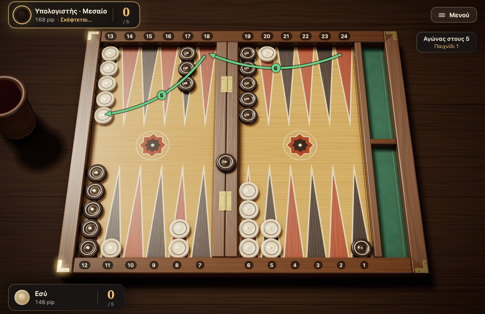
Σχήμα 4.1Παράδειγμα παιχνιδιού: η θέση μετά τον πέμπτο γύρο. Τελευταίος γύρος: με 6-5 το πούλι της 24 έτρεξε πρώτα στη 18 και μετά στη 13 (πράσινα βελάκια). Ένα πούλι του αντιπάλου περιμένει στην μπάρα· η κλειστή σου πόρτα 5 του δυσκολεύει την είσοδο. Τα ανοιχτά σου πούλια είναι στην 20 και στην 11. Οι μετρήσεις pip στις πλακέτες των παικτών: εσύ 146, ο αντίπαλος 168· η σειρά είναι του αντιπάλου.
Σε αυτούς τους πέντε γύρους χρησιμοποιήθηκαν όλοι οι κανόνες για την κίνηση, το κλείσιμο πόρτας, το χτύπημα, την είσοδο στο παιχνίδι και το gele. Το παιχνίδι συνεχίζεται έτσι, μέχρι οι δύο πλευρές να μεταφέρουν τα πούλια τους στα σπίτια τους και να τα μαζέψουν.
4.2 Μέτρηση pip
Επειδή το τάβλι είναι κούρσα, σε οποιαδήποτε στιγμή του παιχνιδιού η ερώτηση «ποιος είναι πιο κοντά στο σπίτι;» έχει μεγάλη σημασία. Την απάντηση τη δίνει η μέτρηση pip: πόσες πόρτες συνολικά πρέπει να διανύσει ένας παίκτης για να φέρει όλα τα πούλια του στο σπίτι και να τα βγάλει από το τάβλι.
Πώς υπολογίζεται; Η απόσταση κάθε πουλιού είναι ο αριθμός της πόρτας του στη δική σου αρίθμηση. Το πούλι της πόρτας 6 είναι 6 pip μακριά, το πούλι της πόρτας 13 είναι 13 pip. Το πούλι στην μπάρα είναι στο πιο μακρινό σημείο και μετρά 25. Προσθέτεις τις αποστάσεις όλων των πουλιών.
Για παράδειγμα, στην αρχή: 2 × 24 + 5 × 13 + 3 × 8 + 5 × 6 = 48 + 65 + 24 + 30 = 167 pip. Και οι δύο παίκτες ξεκινούν το παιχνίδι με 167. Σε κάθε κίνηση η μέτρησή σου μειώνεται όσο πραγματικά προχώρησε το πούλι (όταν στο μάζεμα βγάζεις με μεγάλο ζάρι πούλι από την ψηλότερη πόρτα, η μείωση δεν είναι η αξία του ζαριού, αλλά ο αριθμός της πόρτας όπου βρισκόταν το πούλι)· ένα πούλι που χτυπιέται, αντίθετα, επειδή γυρίζει στην μπάρα, αυξάνει απότομα τη μέτρηση του ιδιοκτήτη του.
Στο Πούλια και Ζάρια δεν χρειάζεται να το υπολογίζεις. Η μέτρηση pip στις πλακέτες των παικτών ενημερώνεται μόνη της μετά από κάθε κίνηση. Στο παράδειγμα παιχνιδιού της ενότητας 4.1 εσύ είσαι στα 146 και ο αντίπαλος στα 168 pip· έχεις δηλαδή προβάδισμα περίπου τριών ζαριών.
Σε τι χρησιμεύει αυτή η πληροφορία;
Αν προηγείσαι, το να αποφύγεις την επαφή και να γυρίσεις γρήγορα στο σπίτι είναι συνήθως καλό σχέδιο.
Αν είσαι πίσω, είναι δύσκολο να κερδίσεις μόνο με την κούρσα· ψάχνεις ευκαιρίες να χτυπήσεις πούλια του αντιπάλου ή να του κόψεις τον δρόμο.
Αν παίζεις με κύβο, στην καθαρή κούρσα τις αποφάσεις για τον κύβο τις ορίζει η διαφορά pip. Τι κάνεις σε κάθε διαφορά εξηγείται στην ενότητα 3.8, κάτω από την επικεφαλίδα «Οι αποφάσεις για τον κύβο».
4.3 Κινήσεις ανοίγματος
Επειδή η πρώτη κίνηση του παιχνιδιού γίνεται πάντα από την ίδια θέση, οι καλές κινήσεις για κάθε ζαριά έχουν σε μεγάλο βαθμό καθοριστεί με αναλύσεις υπολογιστή. Ο Πίνακας 4.1 δίνει τις ευρέως αποδεκτές κινήσεις για παιχνίδια με διεθνείς κανόνες, χωρίς να λαμβάνεται υπόψη το σκορ του αγώνα· σε αγώνα, το σκορ μπορεί να αλλάξει κάποιες επιλογές. Η γραφή είναι «από/προς»: 8/5 σημαίνει από την πόρτα 8 στην πόρτα 5· το (2) δείχνει ότι η ίδια κίνηση γίνεται με δύο πούλια.
Πίνακας 4.1 Κινήσεις ανοίγματος στους διεθνείς κανόνες
Ζαριά
Συνιστώμενη κίνηση
Λογική εναλλακτική
Τι επιδιώκεται
3-1
8/5 6/5
—
Κλειστή πόρτα στην 5
4-2
8/4 6/4
—
Κλειστή πόρτα στην 4
6-1
13/7 8/7
—
Κλειστή πόρτα στην 7, να φράξει ο δρόμος μπροστά από το σπίτι
5-3
8/3 6/3
—
Κλειστή πόρτα στην 3
6-5
24/13
—
Να σωθεί ένα από τα πίσω πούλια με μία κίνηση
6-4
24/14
24/18 13/9 ή 8/2 6/2
Οι τρεις κινήσεις είναι σχεδόν ισάξιες
6-3
24/18 13/10
24/15
Ανάπτυξη και από πίσω και από τη μέση
6-2
24/18 13/11
24/16
Ανάπτυξη και από πίσω και από τη μέση
5-4
24/20 13/8
13/9 13/8
Υποψήφια άγκυρα πίσω, νέο πούλι στη μέση
5-2
13/8 24/22
13/8 13/11
Ασφαλής ανάπτυξη από τη μέση
5-1
13/8 24/23
13/8 6/5
Ασφαλές πούλι, χώρισμα των πίσω πουλιών
4-3
13/10 13/9
24/21 13/9 ή 24/20 13/10
Να έρθει υλικό για το χτίσιμο του σπιτιού
4-1
24/23 13/9
13/9 6/5
Χώρισμα των πίσω πουλιών, νέο πούλι στη μέση
3-2
24/21 13/11
13/11 13/10
Χώρισμα των πίσω πουλιών, νέο πούλι στη μέση
2-1
13/11 6/5
13/11 24/23
Να δοκιμάσεις την πόρτα 5 με ένα πούλι ή να χωρίσεις τα πίσω πούλια
Οι κινήσεις του Πίνακα 4.1 βασίζονται στις αναλύσεις υπολογιστή του ιστότοπου Backgammon Galore. Και όσες είναι στη στήλη «Λογική εναλλακτική» είναι καλές κινήσεις· στις αναλύσεις η διαφορά ανάμεσά τους είναι πολύ μικρή, και μπορείς να διαλέξεις ανάλογα με το στυλ παιχνιδιού σου. Οι αρχάριοι που θέλουν να παίζουν με ασφάλεια μπορούν να προτιμήσουν στο 2-1 το 13/11 24/23 και στο 6-4 το 8/2 6/2, που δεν αφήνει κανένα ανοιχτό πούλι. Για σύγκριση: το ανοιχτό πούλι που αφήνει το 24/14 χτυπιέται με 11 από τις 36 ζαριές· από τα δύο ανοιχτά πούλια που αφήνει το 24/18 13/9, τουλάχιστον το ένα χτυπιέται με 27 από τις 36.
Στον διεθνή κανόνα η πρώτη κίνηση δεν παίζεται ποτέ με διπλές. Αν παίζεις με τον τουρκικό κανόνα, η πρώτη ζαριά μπορεί να είναι και διπλές· τότε οι παρακάτω κινήσεις είναι μια καλή αρχή:
Πίνακας 4.2 Διπλές ως πρώτη ζαριά στον τουρκικό κανόνα
Διπλές
Συνιστώμενη κίνηση
6-6
24/18(2) 13/7(2)
5-5
13/3(2)
4-4
24/20(2) 13/9(2)
3-3
8/5(2) 6/3(2)
2-2
13/11(2) 6/4(2)
1-1
8/7(2) 6/5(2)
Δεν χρειάζεται να μάθεις απ’ έξω αυτούς τους πίνακες. Είναι όμως διδακτικό να δεις την κοινή τους λογική: αν μπορείς, κλείσε νέα πόρτα στο σπίτι σου ή μπροστά του· αν δεν μπορείς, κινητοποίησε τα πίσω πούλια, και μην αφήνεις πούλια μόνα τους σε μέρη όπου χτυπιούνται εύκολα.
4.4 Βασικά σχέδια παιχνιδιού
Τα περισσότερα παιχνίδια ταβλιού καταλήγουν σε ένα από λίγα γνώριμα σχέδια. Ποιο σου ταιριάζει το ορίζουν η διαφορά pip και οι κλειστές πόρτες στο τάβλι. Όσο προχωρά το παιχνίδι, είναι φυσικό να περνάς από το ένα σχέδιο στο άλλο.
Παιχνίδι κούρσας: Αν προηγείσαι στη μέτρηση pip, κόβεις την επαφή με τον αντίπαλο και μεταφέρεις γρήγορα όλα τα πούλια σου στο σπίτι. Όταν τελειώσει η επαφή, το παιχνίδι γίνεται καθαρή κούρσα ζαριών, και όποιος προηγείται συνήθως κερδίζει.
Παιχνίδι κρατήματος (άγκυρα): Κρατάς με δύο πούλια μια κλειστή πόρτα στο σπίτι του αντιπάλου. Αυτή η «άγκυρα» σε προστατεύει από το χτύπημα και, αν ο αντίπαλος αφήσει ανοιχτό πούλι γυρίζοντας στο σπίτι, σου δίνει την ευκαιρία να το χτυπήσεις. Αν είσαι πίσω, είναι το πιο στέρεο σχέδιο.
Παιχνίδι φράγματος: Κλείνοντας πόρτες τη μία δίπλα στην άλλη, στήνεις ένα φράγμα μπροστά από τα πίσω πούλια του αντιπάλου. Αν έξι κλειστές πόρτες βρεθούν στη σειρά, το πούλι από πίσω δεν περνά με καμία ζαριά· σέρνεις αργά το φράγμα προς το σπίτι και στριμώχνεις τον αντίπαλο.
Επίθεση: Χτυπάς ξανά και ξανά τα πούλια του αντιπάλου που μπαίνουν στο σπίτι σου και κλείνεις γρήγορα το σπίτι σου. Μια επιτυχημένη επίθεση αποκλείει τον αντίπαλο και συχνά φέρνει γκάμον· αν όμως αποτύχει, αφήνεις πίσω δικά σου ανοιχτά πούλια.
Πίσω παιχνίδι: Όταν είσαι πολύ πίσω, κρατάς δύο άγκυρες στο σπίτι του αντιπάλου και περιμένεις να αφήσει ανοιχτό πούλι ενώ φέρνει τα πούλια του στο σπίτι. Είναι σχέδιο διάσωσης, όχι κάτι που διαλέγεις συνειδητά από την αρχή.
Αυτά δεν είναι μηχανικοί κανόνες, αλλά διαισθήσεις. Ο συγχρονισμός, η ποιότητα των κλειστών σου πορτών, η κατάσταση των πίσω πουλιών και ο κίνδυνος γκάμον μπορεί να απαιτήσουν το αντίθετο από αυτό που δείχνει η διαφορά pip: είναι λάθος και να διαλύσεις αμέσως ένα ισχυρό φράγμα επειδή έχεις μεγάλο προβάδισμα pip, και να σταματήσεις μια επίθεση που πάει καλά μόνο και μόνο επειδή είσαι πίσω.
4.5 Ο κίνδυνος του ανοιχτού πουλιού
Κάποιες φορές δεν μπορείς να αποφύγεις να αφήσεις ένα πούλι μόνο του. Τότε η ερώτηση είναι: πού να το αφήσω για να έχει τις λιγότερες πιθανότητες να χτυπηθεί; Την απάντηση την ορίζει το πόσες πόρτες μακριά είναι το ανοιχτό πούλι από το πούλι του αντιπάλου που μπορεί να το χτυπήσει.
Σχήμα 4.2Η πιθανότητα να χτυπηθεί το ανοιχτό πούλι, ανάλογα με την απόσταση. Το ανοιχτό πούλι σε απόσταση 6 πορτών κινδυνεύει περισσότερο· από τις 7 και πέρα ο κίνδυνος πέφτει απότομα. Οι ράβδοι δείχνουν πόσες από τις 36 πιθανές ζαριές του αντιπάλου χτυπούν το ανοιχτό σου πούλι (αν δεν υπάρχει κλειστή πόρτα ανάμεσα).
Η πιο επικίνδυνη απόσταση είναι το 6. Το ανοιχτό πούλι σε απόσταση 6 πορτών χτυπιέται με 17 από τις 36 ζαριές, δηλαδή σχεδόν με μία ζαριά στις δύο.
Από το 7 και πέρα είναι πολύ πιο ασφαλές. Για να χτυπηθεί πούλι σε τέτοια απόσταση, πρέπει να συνδυαστούν τα δύο ζάρια· ο κίνδυνος πέφτει από σχεδόν ένα στα δύο σε ένα στα έξι και ακόμη χαμηλότερα.
Κοντά δεν σημαίνει πάντα ασφαλές. Ακόμη και το ανοιχτό πούλι σε απόσταση 1 πόρτας χτυπιέται με 11 από τις 36 ζαριές.
Αυτοί οι αριθμοί ισχύουν με την υπόθεση ότι υπάρχει ένα μόνο πούλι του αντιπάλου, ότι η διαδρομή δεν έχει κλειστή πόρτα ανάμεσα και ότι κανένα πούλι του αντιπάλου δεν περιμένει στην μπάρα. Αν το ίδιο ανοιχτό πούλι το σημαδεύουν περισσότερα από ένα πούλια του αντιπάλου, ο κίνδυνος αυξάνεται· αν οι κλειστές σου πόρτες φράζουν τους ενδιάμεσους σταθμούς, μειώνεται. Εξαιτίας των διπλών, αποστάσεις όπως 12, 16, 20 και 24 μπορούν επίσης να καλυφθούν με ειδικούς τρόπους· ο κίνδυνος δεν μειώνεται ομαλά με την απόσταση.
4.6 Στρατηγική μαζέματος
Οι κανόνες του μαζέματος είναι απλοί, το καλό μάζεμα όμως είναι δεξιότητα. Από την ίδια θέση, δύο παίκτες μπορούν με διαφορετικές αποφάσεις να κάνουν διαφορά μίας ή δύο ζαριών· σε μια αμφίρροπη κούρσα αυτή η διαφορά κρίνει το παιχνίδι.
Όσο φέρνεις τα πούλια στο σπίτι
Κατέβασε τα πούλια στις ψηλές πόρτες του σπιτιού. Μπαίνοντας στο σπίτι, προσπάθησε να τοποθετείς τα πούλια στις πόρτες 6, 5 και 4. Πούλια που στοιβάζονται νωρίς στις πόρτες 1 και 2 σε κάνουν αργότερα να ξοδεύεις άδικα τα μεγάλα ζάρια.
Μοίρασέ τα ισορροπημένα. Όταν τα πούλια είναι απλωμένα στις πόρτες, μπορείς να βγάλεις πούλι με όποιο ζάρι κι αν έρθει. Αντίθετα, οι άδειες πόρτες σημαίνουν ότι, όταν έρθει εκείνος ο αριθμός, δεν θα μπορείς να βγάλεις πούλι.
Μην κατεβαίνεις βαθιά χωρίς λόγο. Αν πας ένα πούλι που μπαίνει στο σπίτι ως την πόρτα 1 με τη λογική «ας προχωρήσω λίγο ακόμη», όταν αρχίσει το μάζεμα, ένα μεγάλο ζάρι όπως το 6 θα αξίζει μόνο 1 pip.
Όταν δεν υπάρχει επαφή
Αν τα πούλια του αντιπάλου έχουν προσπεράσει όλα τα δικά σου, δεν υπάρχει πια πιθανότητα χτυπήματος και το παιχνίδι είναι καθαρή κούρσα. Σε αυτή την περίπτωση η βασική αρχή είναι: σε κάθε γύρο βγάλε όσο περισσότερα πούλια μπορείς. Οι αναλύσεις υπολογιστή δείχνουν ότι αυτή είναι η καλύτερη κίνηση σχεδόν σε όλες τις θέσεις· μόνο σε πολύ ανισόρροπες κατανομές μπορεί να είναι καλύτερο να τακτοποιήσεις ένα πούλι μέσα στο σπίτι, για να μειώσεις τη σπατάλη των επόμενων ζαριών. Αν δεν μπορείς να βγάλεις πούλι, χρησιμοποίησε το ζάρι για να γεμίσεις άδειες πόρτες. Αν φέρεις διπλές, μη χάσεις την ευκαιρία να βγάλεις τέσσερα πούλια μαζί.
Όταν υπάρχει επαφή
Αν ένα ή δύο πούλια του αντιπάλου στέκονται ακόμη στο σπίτι σου, το μάζεμα δεν είναι κούρσα ταχύτητας, αλλά παιχνίδι ασφάλειας. Ένα και μόνο ανοιχτό πούλι δίνει στον αντίπαλο την ευκαιρία να γυρίσει το παιχνίδι.
Άδειασε από πίσω. Καθάρισε πρώτα τις ψηλότερες πόρτες. Τα πούλια που περιμένουν κοντά στο πούλι του αντιπάλου είναι τα πιο επικίνδυνα.
Άφηνε ζυγό αριθμό πουλιών. Αν κρατάς στις πόρτες από δύο ή από τέσσερα πούλια, τα βγάζεις δύο δύο με τα δύο ζάρια και αδειάζεις την πόρτα χωρίς να αφήσεις πίσω μόνο του πούλι. Αντίθετα, σε πόρτα με μονό αριθμό πουλιών τις περισσότερες φορές ένα πούλι μένει μόνο του.
Προσπάθησε να κλείνεις τα κενά. Οι άδειες πόρτες στο σπίτι σου μπορεί στις επόμενες ζαριές να σε αναγκάσουν να αφήσεις ανοιχτό πούλι.
Αν χρειάζεται, κινήσου μέσα στο σπίτι. Αν, βγάζοντας ένα πούλι, θα αφήσεις κάποιο άλλο ανοιχτό, τις περισσότερες φορές είναι καλύτερα να μετακινήσεις πούλια μέσα στο σπίτι και να μείνεις ασφαλής.
Οι ίδιες αρχές ισχύουν και αν άρχισες το μάζεμα ενώ κρατάς χτυπημένο πούλι του αντιπάλου στην μπάρα: ο αντίπαλος μπορεί ανά πάσα στιγμή να μπει και να χτυπήσει το ανοιχτό σου πούλι, γι’ αυτό μάζευε κρατώντας το σπίτι σου όσο πιο κλειστό γίνεται.
4.7 Συμβουλές για αρχάριους
Αφού μάθεις τους κανόνες, στα πρώτα σου παιχνίδια θα σου χρησιμεύσουν οι εξής απλές αρχές:
Αν θα αφήσεις ανοιχτό πούλι, διάλεξε το μέρος. Το μονό πούλι είναι κάποιες φορές αναπόφευκτο· τότε άφησέ το εκεί όπου ο αντίπαλος το χτυπά με τις λιγότερες ζαριές, κατά προτίμηση σε απόσταση 7 πορτών και πέρα.
Να θεωρείς πολύτιμες τις πόρτες του σπιτιού σου. Κάθε πόρτα που κλείνεις στο σπίτι δυσκολεύει την επανείσοδο του πουλιού του αντιπάλου που χτύπησες. Οι πόρτες 5 και 4 είναι οι πιο πολύτιμες.
Μη στοιβάζεις τα πούλια σε ένα μέρος. Το να συγκεντρώνεις πέντε έξι πούλια σε μία πόρτα σημαίνει ότι εκείνα τα πούλια περιμένουν χωρίς να κάνουν καμία δουλειά. Πάρε πούλια από τις στοίβες και χρησιμοποίησέ τα για να κλείσεις νέες πόρτες.
Μείνε ευέλικτος. Πούλια που στέκονται σε διαφορετικές αποστάσεις κάνουν χρήσιμες τις περισσότερες από τις επόμενες ζαριές. Απόφυγε να στήνεις διάταξη που εξαρτάται από τους ίδιους αριθμούς.
Σκέψου και από τη θέση του αντιπάλου. Πριν κάνεις την κίνησή σου, ρίξε μια σύντομη ματιά στο τι θα μπορούσε να κάνει ο αντίπαλος με την επόμενη ζαριά του.
Μη βιάζεσαι. Για κάθε ζαριά σύγκρινε μερικές επιλογές. Στο Πούλια και Ζάρια, από προεπιλογή, ένα βήμα που παίχτηκε δεν παίρνεται πίσω. Αν θέλεις να δοκιμάζεις διαφορετικές κινήσεις, ενεργοποίησε στις Ρυθμίσεις την «Εμφάνιση κουμπιού Αναίρεσης» και απενεργοποίησε την «Αυτόματη επιβεβαίωση κινήσεων»· λεπτομέρειες στην ενότητα 5.3.
Μάθε από τα παιχνίδια που χάνεις. Στο τάβλι η τύχη μπορεί να κρίνει ένα παιχνίδι· αν όμως κάνεις το ίδιο λάθος ξανά και ξανά, το πρόβλημα δεν είναι στα ζάρια.
Κεφάλαιο 5
Η χρήση του Πούλια και Ζάρια
Αυτό το κεφάλαιο εξηγεί βήμα βήμα πώς γίνεται το καθετί στο Πούλια και Ζάρια: από το στήσιμο ενός αγώνα ως τις ρυθμίσεις και τα εργαλεία εξάσκησης. Τα ονόματα των κουμπιών και των μενού είναι όπως γράφονται στην εφαρμογή.
5.1 Έναρξη νέου αγώνα
Στο κύριο μενού πάτα «Νέος αγώνας» (⌘N). Στο πάνελ που ανοίγει υπάρχουν πέντε επιλογές· με το «Έναρξη» αρχίζει ο αγώνας.
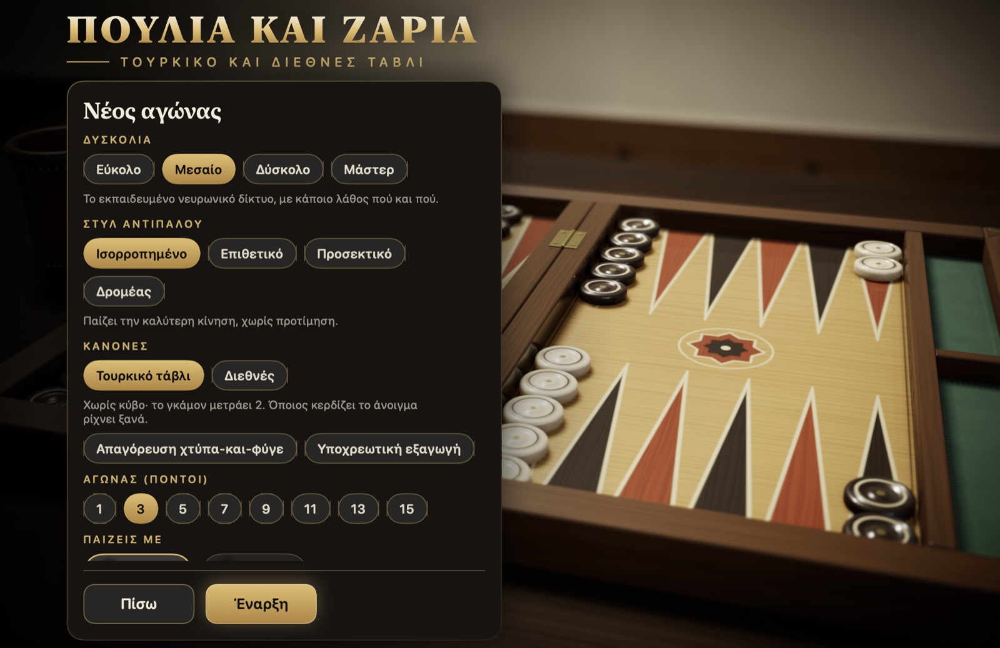
Σχήμα 5.1Το πάνελ νέου αγώνα: δυσκολία, στυλ αντιπάλου, κανόνες, αγώνας ή συνεδρία και χρώμα πουλιών.
Δυσκολία: Το «Εύκολο» κάνει συχνά λάθη και είναι ιδανικό για να μάθεις. Το «Μεσαίο» είναι ένα εκπαιδευμένο νευρωνικό δίκτυο, που κάνει λάθη πού και πού. Το «Δύσκολο» είναι νευρωνικό δίκτυο εκπαιδευμένο με εκατομμύρια παιχνίδια. Το «Μάστερ» υπολογίζει επιπλέον όλες τις πιθανότητες των ζαριών.
Στυλ αντιπάλου: «Ισορροπημένο», «Επιθετικό», «Προσεκτικό» ή «Δρομέας». Ο ισορροπημένος αντίπαλος παίζει την καλύτερη κίνηση. Οι άλλοι τρεις διαλέγουν, ανάμεσα σε κινήσεις με πολύ μικρή διαφορά μεταξύ τους, σύμφωνα με την τάση τους: ο επιθετικός προτιμά να χτυπά και να κλείνει πόρτες, ο προσεκτικός να μην αφήνει πούλι ανοιχτό, ο δρομέας να ξεφεύγει με τα πίσω πούλια του· το κόστος είναι μικρό. Το στυλ επηρεάζει μόνο την επιλογή κίνησης του υπολογιστή· η υπόδειξη, ο Προπονητής και η ανάλυση βασίζονται πάντα στην καλύτερη κίνηση. Το στυλ που διαλέγεις αποθηκεύεται μαζί με τον αγώνα.
Κανόνες: «Τουρκικό τάβλι» ή «Διεθνές». Οι διαφορές τους στον Πίνακα 2.1. Όταν είναι επιλεγμένο το τουρκικό τάβλι, από κάτω εμφανίζονται δύο παραδοσιακοί κανόνες: «Απαγόρευση χτύπα-και-φύγε» και «Υποχρεωτική εξαγωγή». Και οι δύο είναι από προεπιλογή κλειστοί. Οι κανόνες που διαλέγεις δεν αλλάζουν στη διάρκεια του αγώνα.
Αγώνας ή συνεδρία: Με το «Αγώνας (πόντοι)» διαλέγεις μέχρι πόσους πόντους θα παιχτεί ο αγώνας: 1, 3, 5, 7, 9, 11, 13 ή 15. Στους διεθνείς κανόνες δίπλα υπάρχει και η καρτέλα «Συνεδρία»: στη συνεδρία δεν υπάρχει μήκος αγώνα, οι πόντοι κάθε παιχνιδιού καταγράφονται, και τη συνεδρία την τελειώνεις όποτε θέλεις. Στη συνεδρία εμφανίζονται και οι επιλογές «Κανόνας Jacoby», «Beaver», «Raccoon» και «Αυτόματοι διπλασιασμοί»· τι είναι το καθένα εξηγείται στην ενότητα 3.8, κάτω από την επικεφαλίδα «Κανόνες αγώνα και συνεδρίας». Στο τουρκικό τάβλι δεν υπάρχει συνεδρία.
Παίζεις με: «Ανοιχτά» ή «Σκούρα». Όποιο κι αν διαλέξεις, τα πούλια σου είναι πάντα κάτω. Το χρώμα του εικονιδίου εξαρτάται από το στυλ πουλιών που έχεις διαλέξει στις Ρυθμίσεις: στο «Κόκκινη και Μαύρη Λάκα» το ανοιχτό πούλι είναι κόκκινο.
Αν ξεκινήσεις νέο αγώνα ενώ υπάρχει αγώνας σε εξέλιξη, η εφαρμογή πρώτα ρωτά. Ο αγώνας σε εξέλιξη αποθηκεύεται· μπορείς να γυρίσεις σε αυτόν από την κάρτα «Αγώνες». Στην κάρτα επιβεβαίωσης γράφεται και η περίληψη του αγώνα που θα ξεκινήσει. Η ίδια επιβεβαίωση εμφανίζεται και με το ⌘N, και ανάμεσα σε παιχνίδια.
5.2 Ρίψη ζαριών και κίνηση πουλιών
Όταν έρθει η σειρά σου, τα ζάρια ρίχνονται μόνα τους: χύνονται από το δερμάτινο ποτήρι στο δεξί μισό του ταβλιού. Στους διεθνείς κανόνες, αν έχεις δικαίωμα διπλασιασμού, η εφαρμογή περιμένει· στο δεξί μισό του ταβλιού εμφανίζεται το κουμπί «Ρίξε ζάρια» και από κάτω το κουμπί «Διπλασιασμός». Ρίχνεις τα ζάρια πατώντας το κουμπί, τα ζάρια ή το πλήκτρο Κενό. Αν στις Ρυθμίσεις η «Αυτόματη ρίψη» είναι κλειστή, το κουμπί «Ρίξε ζάρια» εμφανίζεται σε κάθε γύρο σου.
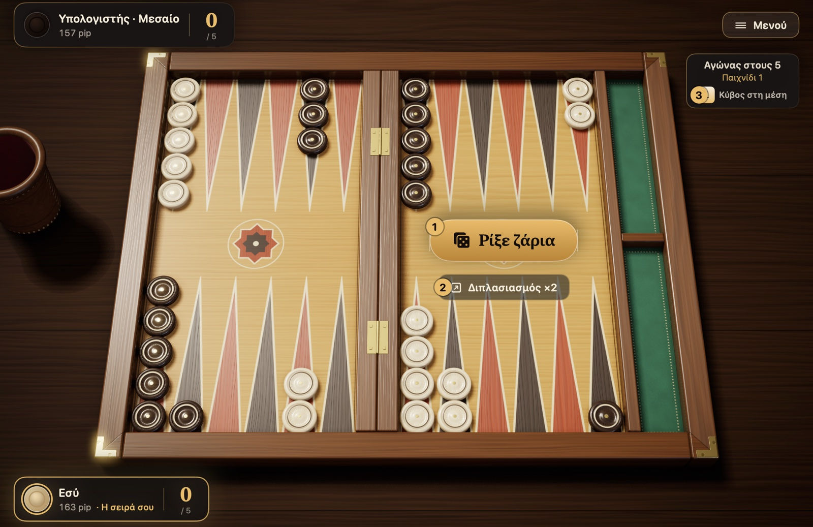
Σχήμα 5.2Η ώρα της ζαριάς, όταν έχεις δικαίωμα διπλασιασμού. 1 το κουμπί «Ρίξε ζάρια», 2 το κουμπί «Διπλασιασμός», 3 η ένδειξη του κύβου.
Αφού ριχτούν τα ζάρια, τα πούλια που μπορείς να παίξεις φωτίζονται. Παίζεις ένα πούλι με έναν από τους εξής τρόπους:
Με κλικ: Κάνε κλικ πρώτα στο πούλι· οι πόρτες όπου μπορεί να πάει δείχνονται με πράσινο κύκλο. Μετά κάνε κλικ στον στόχο. Ο στόχος όπου θα χτυπήσεις ανοιχτό πούλι του αντιπάλου σημειώνεται με κόκκινο στόχαστρο.
Με σύρσιμο: Πιάσε το πούλι και άφησέ το στον στόχο.
Γρήγορα: Το διπλό κλικ παίζει το πούλι με το μεγαλύτερο ζάρι, το δεξί κλικ με το μικρότερο.
Με το πληκτρολόγιο: Το Tab περνά ανάμεσα στα πούλια που μπορούν να παιχτούν, τα βελάκια διαλέγουν τον στόχο, το Return παίζει την κίνηση.
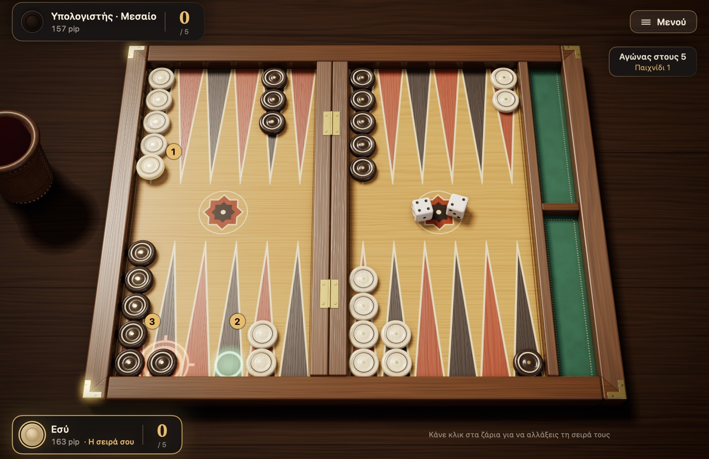
Σχήμα 5.3Κίνηση. Ήρθε 4-2, επιλέχθηκε το πούλι της 13. 1 το επιλεγμένο πούλι, 2 η άδεια πόρτα όπου μπορεί να πάει με το 4 (πράσινος κύκλος), 3 η πόρτα όπου μπορεί να χτυπήσει το ανοιχτό πούλι του αντιπάλου με το 2 (κόκκινο στόχαστρο).
Για να αλλάξεις ποιο ζάρι θα παίξεις πρώτο, κάνε κλικ στα ζάρια πάνω στο τάβλι. Μόλις παίξεις το τελευταίο βήμα, ο γύρος σου τελειώνει μόνος του και η σειρά περνά στον αντίπαλο· αν έχεις μία μόνο επιτρεπτή κίνηση, η εφαρμογή την παίζει για σένα. Αν θέλεις να επιβεβαιώνεις εσύ τον γύρο ή να παίρνεις πίσω βήματα, απενεργοποίησε στις Ρυθμίσεις την «Αυτόματη επιβεβαίωση κινήσεων» και ενεργοποίησε την «Εμφάνιση κουμπιού Αναίρεσης»: τότε τον γύρο σου τον τελειώνει το «Τέλος» (Return), και μέχρι εκείνη τη στιγμή η «Αναίρεση» (⌘Z) παίρνει πίσω ένα ένα τα βήματα που έπαιξες. Αν δεν έχεις καμία κίνηση, η εφαρμογή λέει «Καμία επιτρεπτή κίνηση!» και η σειρά περνά στον αντίπαλο. Αν έχεις πούλι στην μπάρα και το σπίτι του αντιπάλου είναι εντελώς κλειστό, δεν ρίχνονται ούτε ζάρια: στην οθόνη γράφει «Αποκλεισμός» και η σειρά περνά κατευθείαν.
5.3 Υπόδειξη και βοηθήματα παιχνιδιού
Το κουμπί «Υπόδειξη» είναι από προεπιλογή κρυφό· εμφανίζεται κάτω δεξιά όταν ενεργοποιήσεις στις Ρυθμίσεις την «Εμφάνιση κουμπιού Υπόδειξης». Το κουμπί (⌘I) σημειώνει στο τάβλι την κίνηση που προτείνει η μηχανή Μάστερ για εκείνον τον γύρο· μόλις παίξεις το πρώτο σου βήμα, το σημάδι φεύγει. Στους διεθνείς κανόνες δίνει πρόταση και για την απόφαση του κύβου: πριν ρίξεις, «Πρόταση: διπλασίασε» ή «Πρόταση: μη διπλασιάσεις, απλώς ρίξε», και απέναντι στον διπλασιασμό του υπολογιστή «Πρόταση: δέξου» ή «Πρόταση: πάσο». Οι υποδείξεις που χρησιμοποιείς καταγράφονται στην περίληψη στο τέλος του παιχνιδιού και στα στατιστικά.
Ο «Προπονητής» είναι μια λειτουργία μάθησης· στις Ρυθμίσεις είναι από προεπιλογή κλειστός. Όταν είναι ανοιχτός, η μηχανή Μάστερ, καθώς τελειώνεις κάθε γύρο σου, συγκρίνει την κίνηση που έπαιξες με την καλύτερη. Αν η κίνησή σου χάνει αισθητά σε σχέση με την καλύτερη επιλογή, ο γύρος δεν τελειώνει και εμφανίζεται μια κάρτα: το μέγεθος του λάθους σε πόντους, η κίνηση που έπαιξες και η καλύτερη, και στο διάγραμμα του ταβλιού τα βελάκια της καλύτερης κίνησης. Η «Αναίρεση» παίρνει πίσω όλα τα βήματα του γύρου (ακόμη κι αν το κουμπί «Αναίρεση» είναι κρυφό) και ξαναπαίζεις με τα ίδια ζάρια· το «Παίξε έτσι κι αλλιώς» τελειώνει τον γύρο. Στους διεθνείς κανόνες ελέγχει και τις αποφάσεις για τον κύβο: αν θελήσεις να ρίξεις ενώ θα έπρεπε να διπλασιάσεις, σε προειδοποιεί, και μπορείς να διπλασιάσεις αμέσως από την κάρτα· αν διπλασιάσεις ενώ δεν θα έπρεπε, ή αν απαντήσεις λάθος στον διπλασιασμό του υπολογιστή, σε προειδοποιεί, και εσύ είτε μένεις στην απόφασή σου είτε το ξανασκέφτεσαι. Το «Όριο προειδοποίησης» ορίζει πότε έρχεται η προειδοποίηση: το «Όλα τα λάθη» προειδοποιεί για απώλειες πάνω από 0,02 πόντους, το «Μόνο σοβαρά λάθη» για απώλειες πάνω από 0,08. Αν ο Προπονητής προειδοποίησε, ο αριθμός των προειδοποιήσεων γράφεται στην περίληψη στο τέλος του παιχνιδιού. Η ανάλυση μετά το παιχνίδι γίνεται και πάλι· επειδή ελέγχει την κίνηση και με προσομοίωση, η απώλεια εκεί μπορεί να βγει λίγο διαφορετική.
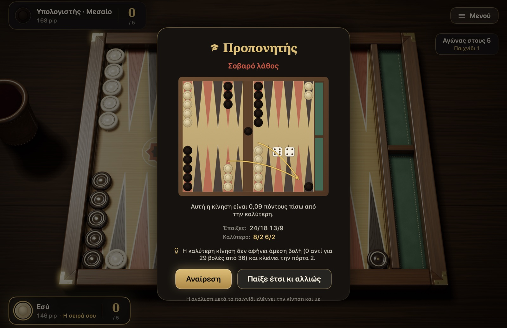
Σχήμα 5.4Η κάρτα του Προπονητή. Η κίνηση που παίχτηκε είναι 0,09 πόντους πίσω από την καλύτερη· τα βελάκια στο διάγραμμα δείχνουν την καλύτερη κίνηση, και η γραμμή με το εικονίδιο της λάμπας τον λόγο.
Η κάρτα του Προπονητή, η ανάλυση κινήσεων, το πάνελ εξέτασης και η κάρτα κοινοποίησης λένε και με μία φράση γιατί η καλύτερη κίνηση είναι καλύτερη· η φράση βρίσκεται στη γραμμή που αρχίζει με το εικονίδιο της λάμπας, όπως «Η καλύτερη κίνηση χτυπά ένα πούλι και κλείνει την πόρτα 5». Η εφαρμογή συγκρίνει τα αποτελέσματα των δύο κινήσεων στο τάβλι και αναφέρει μόνο τις διαφορές υπέρ της καλύτερης κίνησης, το πολύ δύο: χτύπημα, ανοιχτά πούλια που αφήνονται και αριθμός βολών που τα χτυπούν, νέα κλειστή πόρτα ή άγκυρα, μήκος του φράγματος, απελευθέρωση των πίσω πουλιών ή κράτημα των πίσω πουλιών του αντιπάλου, κλειστές πόρτες στο σπίτι, αριθμός πουλιών που βγήκαν, πιθανότητα γκάμον και κίνδυνος γκάμον. Αν στην εξέταση είναι επιλεγμένη άλλη υποψήφια κίνηση, η φράση διατυπώνεται σε σχέση με εκείνη.
Στην ενότητα «Παιχνίδι» των Ρυθμίσεων υπάρχουν επιλογές που κάνουν τον γύρο πιο εύκολο· εκτός από τα κουμπιά «Υπόδειξη» και «Αναίρεση» και την επιλογή «Προπονητής», όλες είναι από προεπιλογή ανοιχτές:
Αυτόματη ρίψη: Όταν έρθει η σειρά σου, τα ζάρια ρίχνονται μόνα τους. Στους γύρους όπου μπορείς να διπλασιάσεις, η εφαρμογή περιμένει· η απόφαση για τον κύβο είναι δική σου. Όταν είναι κλειστή, ρίχνεις εσύ τα ζάρια σε κάθε γύρο, με το κουμπί «Ρίξε ζάρια» ή με το πλήκτρο Κενό.
Αυτόματη επιβεβαίωση κινήσεων: Ο γύρος τελειώνει μόνος του με το τελευταίο βήμα. Όταν είναι κλειστή, τελειώνεις τον γύρο σου με το κουμπί «Τέλος» (Return)· αν η «Αναίρεση» είναι ανοιχτή, μέχρι εκείνη τη στιγμή μπορείς να πάρεις πίσω τα βήματα.
Αυτόματο παίξιμο αναγκαστικών κινήσεων: Αν υπάρχει μία μόνο επιτρεπτή κίνηση, η εφαρμογή την παίζει και ο γύρος τελειώνει.
Επισήμανση πουλιών που κινούνται και Εμφάνιση κύκλων στόχου: Εμφανίζουν ή κρύβουν τον φωτισμό των πουλιών και τους πράσινους κύκλους. Όταν οι κύκλοι είναι απενεργοποιημένοι, ο κύκλος στόχου φαίνεται μόνο στον στόχο που διαλέγεις με το πληκτρολόγιο.
Εμφάνιση κουμπιού Υπόδειξης και Εμφάνιση κουμπιού Αναίρεσης: Και οι δύο είναι από προεπιλογή κλειστές: δεν μπορείς να ζητήσεις πρόταση, το βήμα που παίχτηκε δεν παίρνεται πίσω. Όταν τις ενεργοποιήσεις, τα κουμπιά εμφανίζονται κάτω δεξιά, και δουλεύουν και οι συντομεύσεις ⌘I και ⌘Z. Όταν η «Αναίρεση» είναι κλειστή, πρόταση μπορείς να ζητήσεις μόνο πριν από το πρώτο βήμα.
Προπονητής: Από προεπιλογή κλειστός. Όταν τον ανοίξεις, από κάτω εμφανίζεται η επιλογή «Όριο προειδοποίησης»: «Όλα τα λάθη» ή «Μόνο σοβαρά λάθη». Λεπτομέρειες παραπάνω.
5.4 Διπλασιασμός και απάντηση στην προσφορά
Διπλασιασμός υπάρχει μόνο στους διεθνείς κανόνες. Όταν είναι η σειρά σου και ο κύβος είναι στη μέση ή δικός σου, πριν ρίξεις τα ζάρια πάτα το κουμπί «Διπλασιασμός» (⌘D). Στο κουμπί γράφεται η αξία στην οποία θα ανέβει ο κύβος, για παράδειγμα «Διπλασιασμός ×2». Ο υπολογιστής απαντά αμέσως: αν δεχτεί, ο κύβος περνά σε αυτόν και το παιχνίδι συνεχίζεται· αν πασάρει, κερδίζεις το παιχνίδι.
Όταν διπλασιάζει ο υπολογιστής, στην οθόνη εμφανίζεται μια κάρτα:
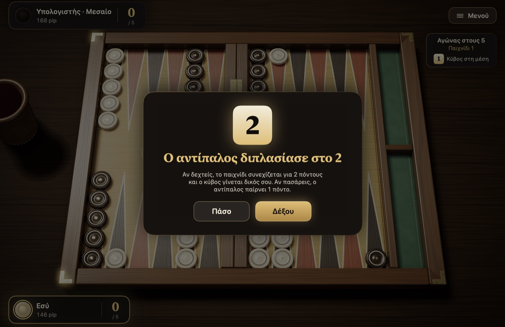
Σχήμα 5.5Η κάρτα προσφοράς διπλασιασμού.
Δέξου: Το παιχνίδι συνεχίζεται με διπλάσια αξία και ο κύβος περνά σε σένα.
Πάσο: Αφήνεις το παιχνίδι· ο αντίπαλος παίρνει τόσους πόντους όση ήταν η αξία του κύβου πριν από την προσφορά.
Beaver: Εμφανίζεται στη συνεδρία, αν το «Beaver» είναι ανοιχτό. Δέχεσαι τον διπλασιασμό και ανεβάζεις αμέσως τον κύβο άλλη μία βαθμίδα, και ο κύβος μένει σε σένα.
Υπόδειξη: Εμφανίζεται αν στις Ρυθμίσεις είναι ανοιχτή η «Εμφάνιση κουμπιού Υπόδειξης»· δείχνει την πρόταση της μηχανής Μάστερ για την απόφασή σου.
Όταν διπλασιάζεις εσύ και ο υπολογιστής πει beaver, εμφανίζεται παρόμοια κάρτα: δέχεσαι, πασάρεις ή, αν το «Raccoon» είναι ανοιχτό, ανεβάζεις τον κύβο άλλη μία βαθμίδα.
Η αξία του κύβου και σε ποιον ανήκει γράφονται κάτω από τις πληροφορίες αγώνα, πάνω δεξιά: «Κύβος στη μέση», «Κύβος δικός σου» ή «Κύβος του αντιπάλου». Σε αγώνα, στο πρώτο παιχνίδι που παίζεται όταν η μία πλευρά βρεθεί 1 πόντο μακριά από τον στόχο, ο κύβος δεν χρησιμοποιείται και εκεί γράφει «Παιχνίδι Crawford».
5.5 Παραίτηση και τέλος συνεδρίας
Όσο το παιχνίδι είναι σε εξέλιξη, διάλεξε «Παραίτηση» από το μενού Παιχνίδι ή από την κάρτα παύσης. Στην κάρτα προτείνεις εσύ με πόσους πόντους παραιτείσαι: απλή, γκάμον ή, στους διεθνείς κανόνες, μπάκγκαμον. Κάτω από κάθε επιλογή γράφεται από πριν αν ο αντίπαλος θα τη δεχτεί. Ο αντίπαλος απορρίπτει προσφορά χαμηλότερη από ό,τι υπόσχεται η θέση, και το παιχνίδι συνεχίζεται· συνυπολογίζονται και το σκορ του αγώνα και ο κύβος. Όσες επιλογές δεν είναι εφικτές δεν φαίνονται στην κάρτα: αν έχεις αρχίσει να βγάζεις πούλια, γκάμον και μπάκγκαμον δεν γίνονται πια, και σε αγώνα δεν προσφέρεται παραίτηση μεγαλύτερη από αυτή που δίνει ήδη τον αγώνα στον αντίπαλο.
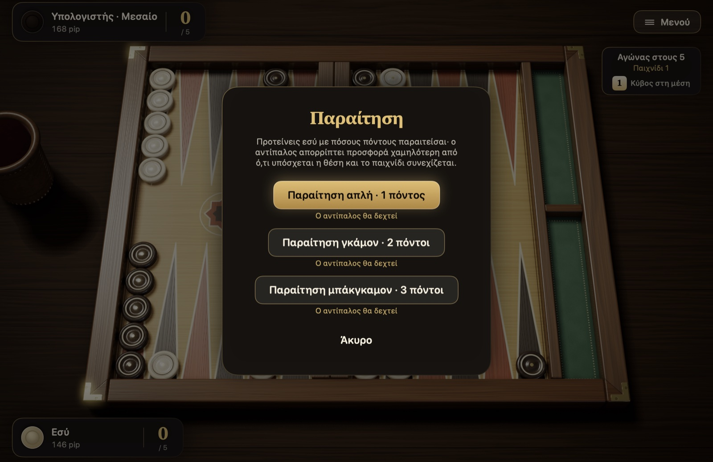
Σχήμα 5.6Η κάρτα παραίτησης.
Και ο υπολογιστής μπορεί να παραιτηθεί μόνος του σε μια κούρσα χωρίς ελπίδα.
Η συνεδρία επιλέγεται μόνο με διεθνείς κανόνες· στο τουρκικό τάβλι δεν υπάρχει. Στη συνεδρία δεν υπάρχει μήκος αγώνα· τη συνεδρία την τελειώνεις εσύ, με το «Τέλος συνεδρίας». Αν την τελειώσεις ανάμεσα σε παιχνίδια, από την κάρτα τέλους παιχνιδιού, η συνεδρία τελειώνει αμέσως. Αν θέλεις να την τελειώσεις όσο ένα παιχνίδι είναι σε εξέλιξη, παραιτείσαι από το παιχνίδι που τρέχει· αν ο αντίπαλος δεχτεί, γράφονται οι πόντοι του παιχνιδιού και η συνεδρία τελειώνει. Το αποτέλεσμα της συνεδρίας μπαίνει στο αρχείο και στα στατιστικά.
5.6 Παύση και συνέχιση του αγώνα αργότερα
Το κουμπί «Μενού» πάνω δεξιά ή το Esc κάνει παύση στο παιχνίδι· όταν πατήσεις ξανά Esc, το παιχνίδι συνεχίζεται. Στην κάρτα παύσης υπάρχουν «Συνέχεια», «Ρυθμίσεις», «Πώς παίζεται», «Ιστορικό κινήσεων», «Αγώνες», «Παραίτηση» και «Έξοδος από τον αγώνα». Στο κάτω μέρος γράφονται τα αναγνωριστικά θέσης και αγώνα της τρέχουσας θέσης σε μορφή GNU Backgammon· η «Αντιγραφή αναγνωριστικών» αντιγράφει και τα δύο στο Πρόχειρο, η «Κοινοποίηση» κοινοποιεί τη θέση ως εικόνα· και οι δύο εξηγούνται στην ενότητα 5.8. Η «Αποθήκευση στη βιβλιοθήκη» προσθέτει τη θέση στη βιβλιοθήκη (5.12).
Οι αγώνες αποθηκεύονται μόνοι τους. Με το «Έξοδος από τον αγώνα» μπορείς να γυρίσεις στο κύριο μενού και να κλείσεις την εφαρμογή· το «Συνέχεια» στο κύριο μενού ανοίγει τον τελευταίο αγώνα από εκεί που είχε μείνει. Αν έχεις περισσότερους από έναν αγώνες, η κάρτα «Αγώνες» απαριθμεί τους αγώνες σε εξέλιξη και το αρχείο των ολοκληρωμένων. Σε αγώνα σε εξέλιξη γυρίζεις με το «Συνέχιση», όποιον δεν θέλεις τον αφαιρείς με το «Διαγραφή», έναν ολοκληρωμένο αγώνα τον ξαναβλέπεις με το «Αναπαραγωγή» ξεκινώντας από το πρώτο του παιχνίδι, και με το κουμπί του ιστορικού κινήσεων ανοίγεις τα παιχνίδια και τους γύρους του και παρακολουθείς από όποιο παιχνίδι θέλεις. Σε κάθε γραμμή γράφονται και το σετ κανόνων του αγώνα και οι προαιρετικοί κανόνες που ήταν ανοιχτοί. Η γραμμή «Εξέτασε τη θέση από το πρόχειρο» της κάρτας στήνει στο τάβλι, με το «Δείξε στο τάβλι», ένα αναγνωριστικό θέσης σε μορφή GNU Backgammon που έχεις αντιγράψει (μαζί με το αναγνωριστικό αγώνα, αν υπάρχει)· η μηχανή Μάστερ αξιολογεί τη θέση, λεπτομέρειες στην ενότητα 5.8.
Στο αρχείο μπαίνουν και αγώνες που παίχτηκαν σε άλλα προγράμματα: το κουμπί «Εισαγωγή…» της κάρτας «Αγώνες» διαβάζει τις καταγραφές αγώνων .mat του Jellyfish και του XG, .xg του ίδιου του XG και .sgf του GNU Backgammon. Επειδή η καταγραφή δεν λέει ποιος από τους παίκτες είσαι εσύ, η εφαρμογή δείχνει τα ονόματα των δύο παικτών και ρωτά «Ποιος παίκτης είσαι;»· τα αποτελέσματα και η ανάλυση δείχνονται από τη σκοπιά εκείνου του παίκτη. Παιχνίδι που περιέχει μη επιτρεπτή κίνηση διακόπτεται σε εκείνον τον γύρο, και αναφέρεται πόσα παιχνίδια διακόπηκαν. Ο αγώνας που εισάγεται εμφανίζεται στο αρχείο με την ετικέτα «Εισήχθη» και με τα ονόματα της καταγραφής, και ξαναβλέπεται με το «Αναπαραγωγή»· όταν το αρχείο γεμίσει και σβήνονται οι παλιοί αγώνες, οι εισηγμένοι μένουν. Κάθε παιχνίδι του αρχείου, και από τους δικούς σου αγώνες, το δίνεις εκ των υστέρων για ανάλυση στη μηχανή Μάστερ με το κουμπί «Ανάλυση» του ιστορικού κινήσεων· τα λάθη, οι υποψήφιες κινήσεις και η τύχη στα ζάρια εξετάζονται όπως στην ενότητα 5.7. Το κουμπί «Ανάλυση όλων» στην επικεφαλίδα «Ολοκληρωμένοι αγώνες» αναλύει στο παρασκήνιο, το ένα μετά το άλλο, όλα τα παιχνίδια που δεν έχουν αναλυθεί· η πρόοδος γράφεται στην ίδια γραμμή, και το κουμπί × σταματά την ανάλυση. Όταν τελειώσει η ανάλυση ενός αγώνα, στη γραμμή του φαίνεται η κατά προσέγγιση τιμή PR· η κάρτα Στατιστικά συγκεντρώνει αυτές τις τιμές στην τάση PR (5.7).
Σχήμα 5.7Εισαγωγή. Στην κάρτα «Αγώνες» διαβάστηκε μια καταγραφή .mat: ρωτιέσαι ποιος από τους δύο παίκτες της καταγραφής είσαι εσύ· από κάτω, οι αγώνες του αρχείου.
5.7 Τέλος παιχνιδιού, ανάλυση και στατιστικά
Όταν τελειώσει το παιχνίδι, μια κάρτα δείχνει το αποτέλεσμα: τους πόντους που κερδήθηκαν, τον λόγο του γκάμον ή του μπάκγκαμον, το σκορ του αγώνα και την περίληψη του παιχνιδιού. Στην περίληψη γράφονται η διάρκεια, ο μέσος όρος ζαριών των δύο πλευρών, η τύχη στα ζάρια, οι υποδείξεις που χρησιμοποίησες και, αν ο Προπονητής προειδοποίησε, ο αριθμός των προειδοποιήσεων· η τύχη στα ζάρια υπολογίζεται, όταν τελειώσει η ανάλυση, με την πραγματική αξία των ζαριών στη θέση (παρακάτω). Όταν τελειώσει ο αγώνας, το «Νέος αγώνας» της κάρτας ξεκινά νέο αγώνα με τις τελευταίες σου επιλογές, χωρίς να ανοίξει το πάνελ· κάτω από το κουμπί γράφεται η περίληψη του αγώνα που θα ξεκινήσει.
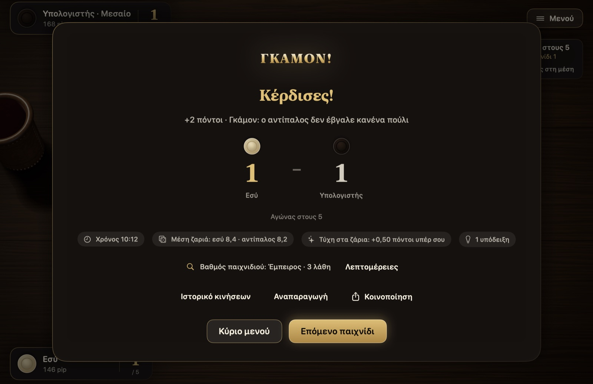
Σχήμα 5.8Η κάρτα τέλους παιχνιδιού.
Ο «Βαθμός παιχνιδιού» στη μέση της κάρτας προκύπτει από την εξέταση των αποφάσεών σου στο παιχνίδι από τη μηχανή Μάστερ· δίπλα του βρίσκονται η κατά προσέγγιση τιμή PR και ο αριθμός των λαθών. Οι «Λεπτομέρειες» ανοίγουν την κάρτα ανάλυσης. Η ενότητα «Τύχη στα ζάρια» στο πάνω μέρος δίνει τη συνολική τύχη των δύο πλευρών, την καθαρή τύχη, την πιο τυχερή και την πιο άτυχη ζαριά σου. Η τύχη μιας ζαριάς είναι η διαφορά, σε πόντους, ανάμεσα στην αξία της καλύτερης κίνησης που μπορεί να παιχτεί με εκείνη τη ζαριά και στον μέσο όρο των 21 πιθανών ζαριών· με διαφορά πάνω από 0,3 πόντους η ζαριά θεωρείται τυχερή ή άτυχη, πάνω από 0,6 πολύ τυχερή ή πολύ άτυχη, και δείχνεται στο ιστορικό κινήσεων με ένα εικονίδιο δίπλα στα ζάρια. Από κάτω απαριθμούνται οι αποφάσεις που χάνουν πάνω από 0,02 πόντους σε σχέση με την καλύτερη επιλογή: στο μικρό διάγραμμα η θέση τη στιγμή της απόφασης και τα βελάκια της καλύτερης κίνησης, δίπλα η κίνηση που έπαιξες, η καλύτερη και η απώλεια. Οι «Υποψήφιες» ανοίγουν τις υποψήφιες κινήσεις εκείνου του γύρου, ως τις πέντε καλύτερες, με τις απώλειές τους. Στη λίστα μπαίνουν και οι αποφάσεις για τον κύβο. Όταν τελειώσει ο αγώνας, δίνεται και ο βαθμός του αγώνα. Η «Προσθήκη στις κάρτες» μετατρέπει τα λάθη κίνησης της λίστας σε κάρτες, που θα τις μελετάς με επανάληψη σε διαστήματα· τα σοβαρά λάθη γίνονται αυτόματα κάρτες μόλις τελειώσει η ανάλυση (5.12).
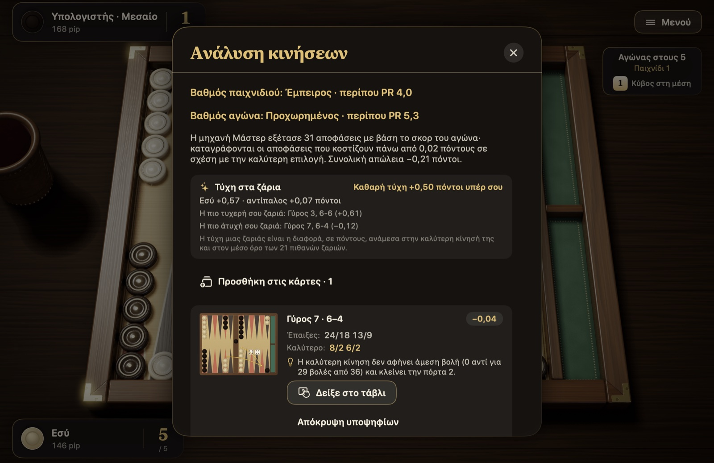
Σχήμα 5.9Ανάλυση κινήσεων.
Το «Δείξε στο τάβλι» μεταφέρει την απόφαση στο τάβλι: η θέση στήνεται όπως ήταν τη στιγμή της απόφασης, η καλύτερη κίνηση σημειώνεται με τα πούλια και τους κύκλους στόχου, και ανοίγει το πάνελ εξέτασης: σε οριζόντιο παράθυρο στα δεξιά του ταβλιού, σε κατακόρυφο από κάτω. Από τις ψηφίδες του πάνελ, η «Θέση» γυρίζει στη σημειωμένη θέση· η «Καλύτερη», η «Έπαιξες» και οι άλλες υποψήφιες παίζουν εκείνη την κίνηση στο τάβλι, και σε κάθε ψηφίδα γράφεται η απώλεια της κίνησης σε σχέση με την καλύτερη. Στις αποφάσεις για τον κύβο οι ψηφίδες γράφουν τις επιλογές και τις απώλειές τους, και στο τάβλι δεν παίζεται τίποτα. Με τα βελάκια ή με ← και → περνάς στο προηγούμενο και στο επόμενο λάθος, με το Κενό εναλλάσσεις τη θέση, την καλύτερη και την κίνηση που παίχτηκε. Η «Αντιγραφή αναγνωριστικών» και η «Κοινοποίηση» μεταφέρουν τη θέση έξω από την εφαρμογή, και οι δύο εξηγούνται στην ενότητα 5.8· η «Αποθήκευση στη βιβλιοθήκη» προσθέτει τη θέση στη βιβλιοθήκη (5.12)· το «Πίσω στην ανάλυση» γυρίζει στην κάρτα, το «Κλείσιμο» τελειώνει την εξέταση.
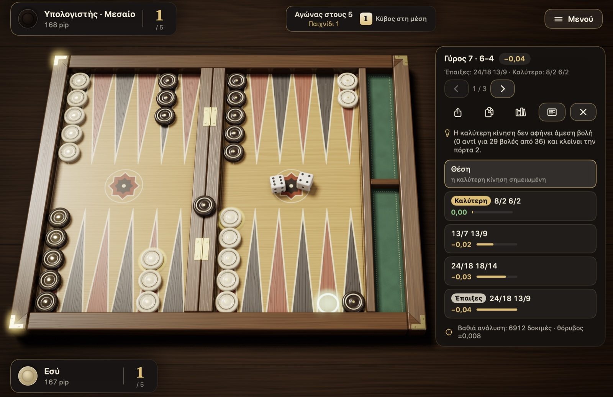
Σχήμα 5.10Το πάνελ εξέτασης, μετά τη Βαθιά Ανάλυση. Η κίνηση που παίχτηκε είναι 0,04 πόντους πίσω από την καλύτερη· η ψηφίδα «Θέση» είναι επιλεγμένη, η καλύτερη κίνηση σημειωμένη στο τάβλι· η γραμμή με το εικονίδιο της λάμπας γράφει τον λόγο, και η τελευταία γραμμή τον αριθμό των δοκιμών και το περιθώριο θορύβου.
Το κουμπί «Βαθιά Ανάλυση» του πάνελ ξαναξιολογεί τις υποψήφιες κινήσεις εκείνης της απόφασης με πολύ περισσότερες προσομοιώσεις: στην αναζήτηση 3 επιπέδων του Μάστερ προστίθεται για κάθε υποψήφια μια προσομοίωση 6.912 δοκιμών, και λαμβάνεται ο μέσος όρος των δύο. Η προσομοίωση τρέχει σε μπλοκ, σε δύο μισά με ανεξάρτητους σπόρους· το περιθώριο θορύβου, που υπολογίζεται από την κατανομή των μπλοκ, γράφεται δίπλα στο αποτέλεσμα. Οι απώλειες και η σειρά των υποψήφιων ενημερώνονται με τις νέες αξίες· αν η διαφορά ανάμεσα σε δύο υποψήφιες είναι μικρότερη από το περιθώριο θορύβου, σημαίνει ότι παίζονται και οι δύο. Στο Mac διαρκεί ένα δύο δευτερόλεπτα, στο iPad λίγο περισσότερο· η πρόοδος γράφεται στο πάνελ.
Το μενού «Πλήρης προσομοίωση» του πάνελ παίζει τις υποψήφιες κινήσεις ως το τέλος του παιχνιδιού. Στο μενού διαλέγεις πρώτα το επίπεδο της επιλογής κίνησης και μετά τον αριθμό των δοκιμών. Το «1 επίπεδο» είναι γρήγορο: οι κινήσεις στην προσομοίωση διαλέγονται με την άμεση αξιολόγηση του γρήγορου δικτύου (648, 1.296 ή 2.592 δοκιμές). Με τα «2 επίπεδα» εξετάζονται σε κάθε κίνηση οι 21 ζαριές του αντιπάλου, και η προσομοίωση διαρκεί περίπου τρεις φορές περισσότερο (648 ή 1.296 δοκιμές). Όλες οι υποψήφιες παίζονται με τις ίδιες ακολουθίες ζαριών· επειδή η μείωση διακύμανσης αφαιρεί από το αποτέλεσμα την τύχη κάθε ζαριάς, με λίγες δοκιμές προκύπτει στενό περιθώριο θορύβου. Η γραμμή αποτελέσματος γράφει τον αριθμό των δοκιμών, το επίπεδο και το μεγαλύτερο περιθώριο θορύβου των υποψήφιων· οι απώλειες και η σειρά ενημερώνονται με τις νέες αξίες. Η Βαθιά Ανάλυση είναι πιο γρήγορη· η Πλήρης προσομοίωση είναι για τις περιπτώσεις που χρειάζεται ακρίβεια.
Με τα κουμπιά στο κάτω μέρος της κάρτας τέλους παιχνιδιού ανοίγεις το ιστορικό κινήσεων, ξαναβλέπεις το παιχνίδι, κοινοποιείς το αποτέλεσμα ως εικόνα, γυρίζεις στο κύριο μενού ή περνάς στο επόμενο παιχνίδι.
Η κάρτα «Στατιστικά» του κύριου μενού δείχνει πόσους αγώνες και πόσα παιχνίδια κέρδισες και έπαιξες, το ποσοστό νικών, τα γκάμον που έκανες και που έφαγες, το μεγαλύτερο σερί νικών σου, τα αποτελέσματα ανά επίπεδο, την κατανομή των ζαριών (πόσες φορές ήρθε κάθε όψη, μαζί με τον αναμενόμενο αριθμό ανά όψη), την τάση PR σου (η κατά προσέγγιση τιμή PR των αγώνων του αρχείου που έχουν αναλυθεί, σε μια γραμμή από τον παλαιότερο στον νεότερο· από κάτω το τελευταίο PR, το καλύτερο και ο μέσος όρος των πέντε τελευταίων αγώνων), τα αποτελέσματα της θέσης της ημέρας (θέσεις που λύθηκαν, σερί, καλύτερο σερί και μέση απώλεια· στην ενότητα 5.12) και τους τελευταίους αγώνες. Οι συνεδρίες που παίχτηκαν και οι καθαροί πόντοι στις συνεδρίες κρατούνται χωριστά. Με το κουμπί «Μηδενισμός στατιστικών» ξεκινάς από την αρχή.
Η ενότητα «Επιτεύγματα» της κάρτας απαριθμεί είκοσι κονκάρδες: πρώτη νίκη, δέκα και εκατό νίκες, πρώτος αγώνας, αγώνας 7 πόντων και πάνω, γκάμον, μπάκγκαμον, παιχνίδι που κερδήθηκε με κύβο 4 και πάνω, παιχνίδι και αγώνας εναντίον του Μάστερ, παιχνίδι χωρίς λάθος, χαμηλό PR, σερί πέντε νικών, εκατό παιχνίδια, λύση της θέσης της ημέρας με την πρώτη προσπάθεια, επτά και τριάντα μέρες στη σειρά, εισαγωγή ενός αρχείου αγώνα, ανάλυση ενός παιχνιδιού του αρχείου και βαθιά ανάλυση μιας απόφασης. Όσες έχουν κερδηθεί φαίνονται χρυσές και με την ημερομηνία τους, οι άλλες αχνές και με την προϋπόθεσή τους· όταν κερδίζεται ένα επίτευγμα, στο πάνω μέρος της οθόνης εμφανίζεται μια σύντομη ειδοποίηση. Τα επιτεύγματα κρατούνται μόνο σε αυτή τη συσκευή, ακόμη και όταν ο συγχρονισμός iCloud είναι ανοιχτός· η εφαρμογή δεν έχει δικό της διακομιστή και δεν ζητά λογαριασμό.
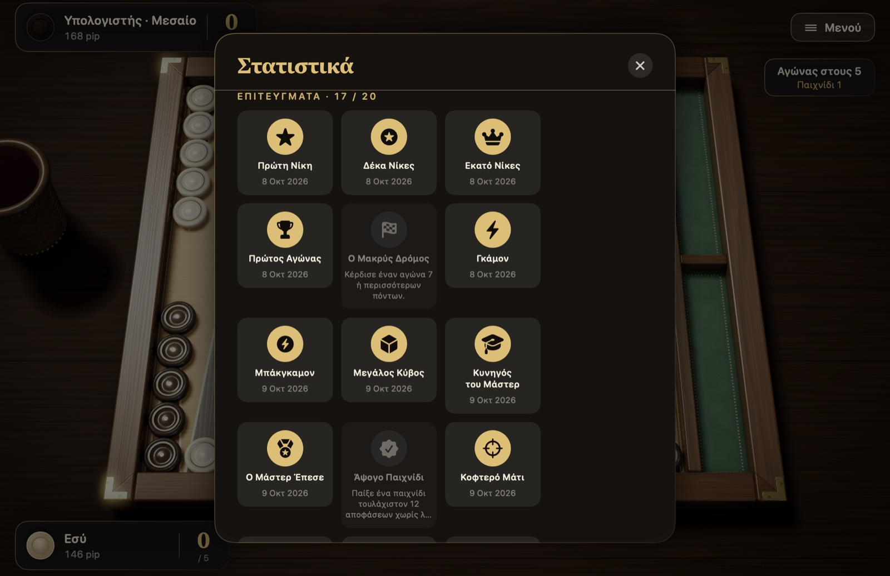
Σχήμα 5.11Η ενότητα Επιτεύγματα της κάρτας Στατιστικά. Οι κονκάρδες που έχουν κερδηθεί είναι χρυσές και με ημερομηνία, οι άλλες αχνές και με την προϋπόθεσή τους.
5.8 Ιστορικό κινήσεων, αναπαραγωγή και εξαγωγή
Το «Ιστορικό κινήσεων» (⌘L) απαριθμεί όλους τους γύρους των δύο πλευρών και τα γεγονότα διπλασιασμού και παραίτησης. Αν ο αγώνας έχει περισσότερα από ένα παιχνίδια, το παιχνίδι διαλέγεται με τα κουμπιά στο πάνω μέρος.
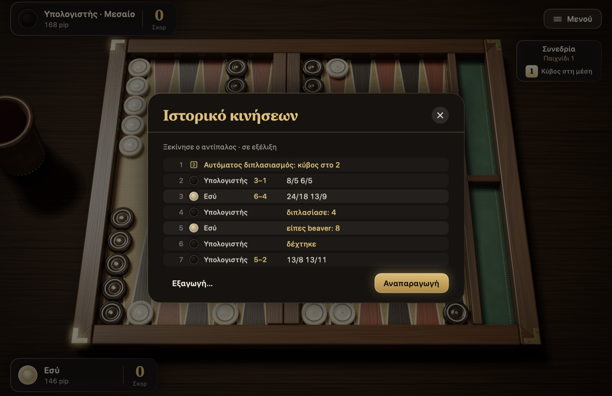
Σχήμα 5.12Ιστορικό κινήσεων. Ιστορικό από μια συνεδρία: αυτόματος διπλασιασμός, γύροι με τα ζάρια τους, γραμμές διπλασιασμού, beaver και αποδοχής.
Ένα τελειωμένο παιχνίδι μπορείς να το ξαναδείς από την αρχή με το «Αναπαραγωγή», με τις πραγματικές κινήσεις: τα ← και → περνούν ανάμεσα στους γύρους, το Κενό παίζει και σταματά. Αν ο αγώνας έχει περισσότερα από ένα παιχνίδια, στην πάνω γραμμή του πάνελ γράφονται ο αριθμός του παιχνιδιού και το σκορ στην αρχή του· με τα βελάκια δίπλα περνάς στο προηγούμενο και στο επόμενο παιχνίδι, μετά τον τελευταίο γύρο ενός παιχνιδιού το → πάει στην αρχή του επόμενου παιχνιδιού, και πριν από τον πρώτο γύρο το ← στο τέλος του προηγούμενου. Η «Εξαγωγή…» γράφει την καταγραφή του αγώνα σε τρεις μορφές: αναγνώσιμο κείμενο (.txt), .mat που διαβάζουν το Jellyfish και το XG, και τη μορφή .sgf του GNU Backgammon. Έτσι μπορείς να εξετάσεις τον αγώνα σου και με αυτά τα προγράμματα· τις δικές τους καταγραφές τις παίρνεις με την «Εισαγωγή…», στην ενότητα 5.6.
Κάθε θέση έχει δύο αναγνωριστικά σε μορφή GNU Backgammon: το αναγνωριστικό θέσης των 14 χαρακτήρων κωδικοποιεί τη θέση των πουλιών, το αναγνωριστικό αγώνα των 12 χαρακτήρων το σκορ, τον κύβο, τη σειρά και τα ζάρια. Η κάρτα παύσης γράφει και τα δύο· η «Αντιγραφή αναγνωριστικών» εκεί και στο πάνελ εξέτασης τα αντιγράφει και τα δύο στο Πρόχειρο. Επικολλώντας τα αναγνωριστικά στο GNU Backgammon ή σε άλλο πρόγραμμα που αναγνωρίζει αυτή τη μορφή, στήνεις εκεί την ίδια ακριβώς θέση· γράφοντάς τα σε ένα φόρουμ, μπορείς να ρωτήσεις άλλους. Γίνεται και το αντίστροφο: από ένα αναγνωριστικό που έχεις αντιγράψει στήνεις τη θέση στο τάβλι με το «Εξέτασε τη θέση από το πρόχειρο» της κάρτας «Αγώνες»· βλέπεις στο πάνελ εξέτασης την αξιολόγηση της μηχανής Μάστερ και, αν το αναγνωριστικό αγώνα έχει ζάρια, τις καλύτερες κινήσεις. Το κουμπί «Κοινοποίηση» (στην κάρτα παύσης, στο πάνελ εξέτασης και στην κάρτα τέλους παιχνιδιού) κοινοποιεί τη θέση ή το αποτέλεσμα ως εικόνα: διάγραμμα του ταβλιού, σκορ και γραμμές επεξήγησης, από κάτω τα αναγνωριστικά και η σελίδα της εφαρμογής. Την εικόνα μπορείς να τη στείλεις από το μενού κοινοποίησης με Μηνύματα, Mail ή AirDrop.
5.9 Ρυθμίσεις
Στις Ρυθμίσεις φτάνεις από το κύριο μενού ή από την κάρτα παύσης. Οι αλλαγές εφαρμόζονται αμέσως.
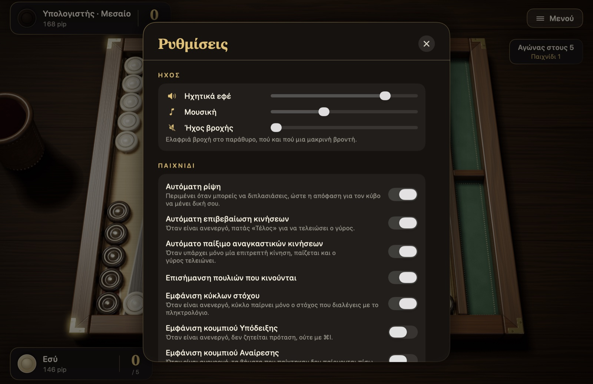
Σχήμα 5.13Ρυθμίσεις.
Ήχος: Ξεχωριστές στάθμες για τα ηχητικά εφέ, τη μουσική και τη βροχή στο παράθυρο.
Παιχνίδι: Αυτόματη ρίψη, αυτόματη επιβεβαίωση και αναγκαστική κίνηση, πούλια που κινούνται, κύκλοι στόχου, κουμπιά Υπόδειξη και Αναίρεση, Προπονητής και όριο προειδοποίησης· λεπτομέρειες στην ενότητα 5.3. Οι κανόνες δεν είναι στις Ρυθμίσεις: οι δύο παραδοσιακοί κανόνες του τουρκικού ταβλιού επιλέγονται στο πάνελ νέου αγώνα.
Ταχύτητα: Ταχύτητα κίνησης και χρόνος σκέψης του αντιπάλου. Όταν το «Ποτήρι ζαριών» είναι κλειστό, τα ζάρια ρίχνονται χωρίς ποτήρι και η ρίψη είναι πιο γρήγορη.
Εμφάνιση: Τάβλι («Κλασική Καρυδιά», «Σεντέφι», «Σφενδάμι», «Νύχτα Εβένου», «Δρυς και Ελιά»), πούλια («Πυξάρι και Έβενος», «Μάρμαρο και Όνυχας», «Κόκκινη και Μαύρη Λάκα»), ζάρια («Ελεφαντόδοντο», «Έβενος», «Κεχριμπάρι») και τσόχα («Πράσινο», «Μπορντό», «Μπλε μαρέν»). Το στυλ των πουλιών και των ζαριών αλλάζει και τον ήχο· τα εικονίδια των πουλιών στην οθόνη παίρνουν επίσης τα χρώματα του στυλ πουλιών που διαλέγεις. Το «Σπίτι στα αριστερά» καθρεφτίζει το τάβλι, τα πούλια μαζεύονται προς τα αριστερά. Οι «Αριθμοί πορτών» γράφουν στις ράγες τη δική σου αρίθμηση.
Κάμερα: Κινηματογραφική κάμερα (πλησίασμα στην αρχή του αγώνα, χαμηλή περιστροφή στο τέλος), ζουμ και κλίση της κάμερας.
Γλώσσα και κείμενο: Τουρκικά, Αγγλικά, Γαλλικά, Γερμανικά, Ισπανικά, Πορτογαλικά, Ιταλικά, Ελληνικά και Ρωσικά. Όταν είναι επιλεγμένο το «Σύστημα», χρησιμοποιείται η γλώσσα του συστήματος. Το μέγεθος κειμένου μπορεί να είναι «Σύστημα», «Κανονικό», «Μεγάλο» ή «Μεγαλύτερο»· το «Σύστημα» ακολουθεί τη ρύθμιση μεγέθους κειμένου του συστήματος.
iCloud: Αν ο «Συγχρονισμός με iCloud» είναι ανοιχτός, οι αγώνες σε εξέλιξη, το αρχείο, η βιβλιοθήκη και οι κάρτες συγχρονίζονται μέσω του iCloud Drive σου ανάμεσα στις συσκευές σου με τον ίδιο λογαριασμό Apple· τα στατιστικά και τα επιτεύγματα είναι χωριστά σε κάθε συσκευή. Ο συγχρονισμός είναι κλειστός από προεπιλογή. Η γραμμή από κάτω γράφει πότε έγινε ο τελευταίος συγχρονισμός, και το κουμπί «Συγχρονισμός τώρα» συγχρονίζει χωρίς να περιμένεις. Το iCloud υπάρχει μόνο στην έκδοση του App Store· αν το iCloud Drive είναι κλειστό, η γραμμή το λέει.
5.10 Συντομεύσεις πληκτρολογίου
Όλες οι κινήσεις στο τάβλι μπορούν να παιχτούν με το πληκτρολόγιο, χωρίς ποντίκι.
Πίνακας 5.1 Συντομεύσεις πληκτρολογίου
Πλήκτρο
Τι κάνει
Κενό
Ρίχνει τα ζάρια που περιμένουν· όταν η αυτόματη επιβεβαίωση είναι κλειστή, επιβεβαιώνει τον γύρο· στην αναπαραγωγή παίζει και σταματά, στην εξέταση περνά ανάμεσα στη θέση, την καλύτερη και την παιγμένη κίνηση
Return
Κινεί το πούλι στον στόχο που διαλέχτηκε με το πληκτρολόγιο· όταν η αυτόματη επιβεβαίωση είναι κλειστή, επιβεβαιώνει τον γύρο
Tab, ⇧Tab
Περνά ανάμεσα στα πούλια που μπορούν να παιχτούν
Βελάκια
Περνά ανάμεσα στους στόχους του επιλεγμένου πουλιού
Esc
Κάνει παύση, με δεύτερο πάτημα το παιχνίδι συνεχίζεται· κλείνει μια ανοιχτή κάρτα
⌘Z
Παίρνει πίσω το τελευταίο βήμα· δουλεύει όταν το κουμπί «Αναίρεση» είναι ανοιχτό
⌘I
Υπόδειξη· δουλεύει όταν το κουμπί «Υπόδειξη» είναι ανοιχτό
⌘D
Διπλασιάζει
⌘L
Ανοίγει το ιστορικό κινήσεων
⌘N
Νέος αγώνας· όσο ένας αγώνας είναι σε εξέλιξη, και ανάμεσα σε παιχνίδια, πρώτα ρωτά
⌘?
Ανοίγει την κάρτα «Πώς παίζεται»
← →
Στην αναπαραγωγή προηγούμενος και επόμενος γύρος· στην εξέταση προηγούμενο και επόμενο λάθος
5.11 Προσβασιμότητα
Αναγνώστης οθόνης: Το τάβλι παίζεται με το VoiceOver. Οι πόρτες, η μπάρα, τα βγαλμένα πούλια και τα ζάρια είναι ξεχωριστά στοιχεία· σε καθένα διαβάζεται ποιος έχει πόσα πούλια, και αν μπορεί να παιχτεί, αν είναι επιλεγμένο ή αν είναι στόχος. Τα ζάρια σου, οι κινήσεις του αντιπάλου και τα πούλια που χτυπιούνται ανακοινώνονται φωναχτά.
Μείωση κίνησης: Αν στο macOS είναι ανοιχτή η «Μείωση κίνησης», κλείνουν οι κινήσεις της κάμερας, το λίκνισμα και η παράλλαξη του μενού, το ποτήρι των ζαριών, οι αναπηδήσεις των πουλιών και η χρυσή βροχή.
Αντίθεση: Αν στο macOS είναι ανοιχτή η ρύθμιση «Αύξηση αντίθεσης», τα κείμενα και οι γραμμές της διεπαφής σχεδιάζονται πιο έντονα.
Μέγεθος κειμένου: Η προεπιλεγμένη επιλογή «Σύστημα» ακολουθεί τη ρύθμιση μεγέθους κειμένου του συστήματος (στο Mac, στις Ρυθμίσεις συστήματος, η σελίδα Οθόνη της ενότητας Προσβασιμότητα· στο iPad, Οθόνη και φωτεινότητα)· στις Ρυθμίσεις μπορείς να διαλέξεις και «Μεγάλο» ή «Μεγαλύτερο». Οι κάρτες και οι ενδείξεις μεγαλώνουν ανάλογα.
Πληκτρολόγιο: Όλες οι κινήσεις στο τάβλι μπορούν να παιχτούν με το πληκτρολόγιο· τα πλήκτρα στον Πίνακα 5.1.
5.12 Εξάσκηση: θέση της ημέρας, κάρτες, ανοίγματα, βιβλιοθήκη και επεξεργαστής θέσης
Η κάρτα «Εξάσκηση» του κύριου μενού συγκεντρώνει πέντε εργαλεία εξάσκησης: «Θέση της Ημέρας», «Κάρτες», «Βιβλιοθήκη Ανοιγμάτων», «Βιβλιοθήκη» και «Επεξεργαστής Θέσης».
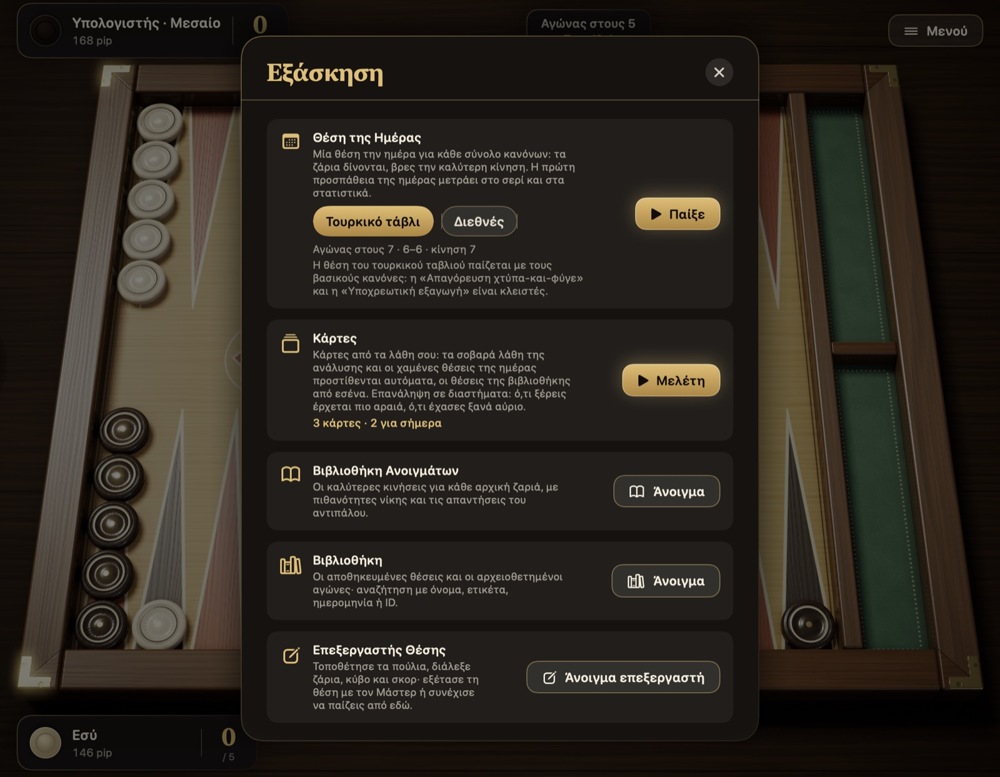
Σχήμα 5.14Η κάρτα Εξάσκηση: το πλακίδιο της θέσης της ημέρας (ψηφίδες κανόνων, μήκος αγώνα, σκορ και αριθμός κίνησης), οι κάρτες (σύνοψη της τράπουλας), η βιβλιοθήκη ανοιγμάτων, η βιβλιοθήκη και ο επεξεργαστής θέσης.
Θέση της Ημέρας. Κάθε μέρα έρχεται μια νέα θέση· την ίδια μέρα όλοι λύνουν την ίδια θέση. Η θέση έρχεται χωριστά για τα δύο σετ κανόνων: το πλακίδιο ανοίγει με την επιλογή κανόνων που έχεις στο πάνελ νέου αγώνα, και αλλάζει με τις ψηφίδες «Τουρκικό τάβλι» και «Διεθνές»· η θέση του τουρκικού ταβλιού παίζεται με τους βασικούς κανόνες, η «Απαγόρευση χτύπα-και-φύγε» και η «Υποχρεωτική εξαγωγή» είναι κλειστές. Τα ζάρια είναι δοσμένα, την καλύτερη κίνηση τη βρίσκεις εσύ. Στο πλακίδιο γράφονται το μήκος του αγώνα, το σκορ και ο αριθμός της κίνησης· το «Παίξε» στήνει τη θέση στο τάβλι, και παίζεις την κίνησή σου. Όταν τελειώσει ο γύρος, έρχεται η κάρτα αποτελέσματος: αν η κίνησή σου είναι η καλύτερη, λέει «Σωστή κίνηση!», αλλιώς «Υπήρχε καλύτερη κίνηση» ή «Σοβαρό λάθος»· από κάτω το διάγραμμα της θέσης και τα βελάκια της καλύτερης κίνησης, η κίνηση που έπαιξες και η καλύτερη, και η φράση που εξηγεί τον λόγο. Το «Δείξε στο τάβλι» ανοίγει τις υποψήφιες κινήσεις στο πάνελ εξέτασης, το «Δοκίμασε ξανά» σου δίνει την ίδια θέση άλλη μία φορά, το «Τέλος» γυρίζει στο κύριο μενού. Μετρά μόνο η πρώτη προσπάθεια της μέρας, σε όποιο από τα δύο σετ κανόνων κι αν γίνει: αν βρεις τη σωστή κίνηση, το σερί σου μεγαλώνει κατά μία μέρα, αν δεν τη βρεις, το σερί μηδενίζεται· οι νέες προσπάθειες δεν μετρούν στο σερί και στα στατιστικά. Η κάρτα Εξάσκηση γράφει αν έλυσες τη θέση εκείνη τη μέρα και το σερί, και, αν δεν την έλυσες, την απώλειά σου σε σχέση με την καλύτερη κίνηση· ο αριθμός των θέσεων που λύθηκαν, το σερί, το καλύτερο σερί και η μέση απώλεια είναι στην κάρτα Στατιστικά.
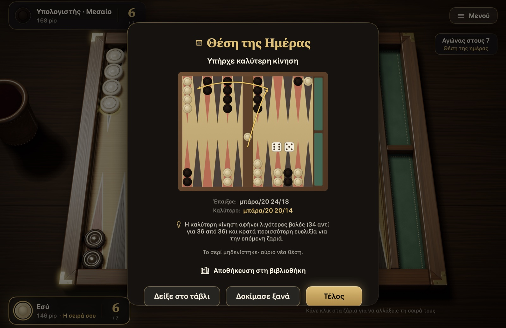
Σχήμα 5.15Η κάρτα αποτελέσματος της θέσης της ημέρας. Η κίνηση που παίχτηκε είναι πίσω από την καλύτερη: τα βελάκια στο διάγραμμα δείχνουν την καλύτερη κίνηση, οι γραμμές από κάτω την παιγμένη και την καλύτερη κίνηση, και η φράση με το εικονίδιο της λάμπας τον λόγο.
Κάρτες. Από τα λάθη σου φτιάχνεται μια τράπουλα: τα σοβαρά λάθη της ανάλυσης στο τέλος του παιχνιδιού και οι θέσεις της ημέρας που δεν έλυσες γίνονται αυτόματα κάρτες· τα υπόλοιπα λάθη κίνησης τα προσθέτει η «Προσθήκη στις κάρτες» της κάρτας ανάλυσης, και μια θέση της βιβλιοθήκης με ζάρια την προσθέτει το κουμπί κάρτας στη γραμμή της. Κάθε κάρτα είναι μια ερώτηση: η θέση και τα ζάρια είναι δοσμένα, την καλύτερη κίνηση τη βρίσκεις εσύ. Στο πλακίδιο γράφονται πόσες κάρτες έχει η τράπουλα, πόσες είναι για σήμερα ή πότε έρχεται η επόμενη, και πόσες κάρτες έχεις μάθει. Η «Μελέτη» σου φέρνει με τη σειρά τις κάρτες που έχει έρθει η ώρα τους (το πολύ είκοσι)· αν δεν έχει έρθει η ώρα καμιάς, φέρνει νωρίτερα τις δέκα πιο κοντινές. Η κάρτα παίζεται όπως η θέση της ημέρας· η κάρτα αποτελέσματος γράφει σε ποια κάρτα βρίσκεσαι, πόσες βρήκες σωστά και πότε θα ξανάρθει η κάρτα, και η «Επόμενη κάρτα» περνά στην επόμενη. Επανάληψη σε διαστήματα: η κάρτα που βρήκες σωστά ξαναέρχεται σε μία μέρα, μετά σε έξι μέρες και μετά σε όλο και μεγαλύτερα διαστήματα· η κάρτα που έχασες ξαναέρχεται την επόμενη μέρα. Όταν το διάστημα μιας κάρτας ξεπεράσει τις τρεις εβδομάδες, η κάρτα θεωρείται μαθημένη. Η μελέτη καρτών δεν μετρά στα στατιστικά και στο σερί της θέσης της ημέρας.
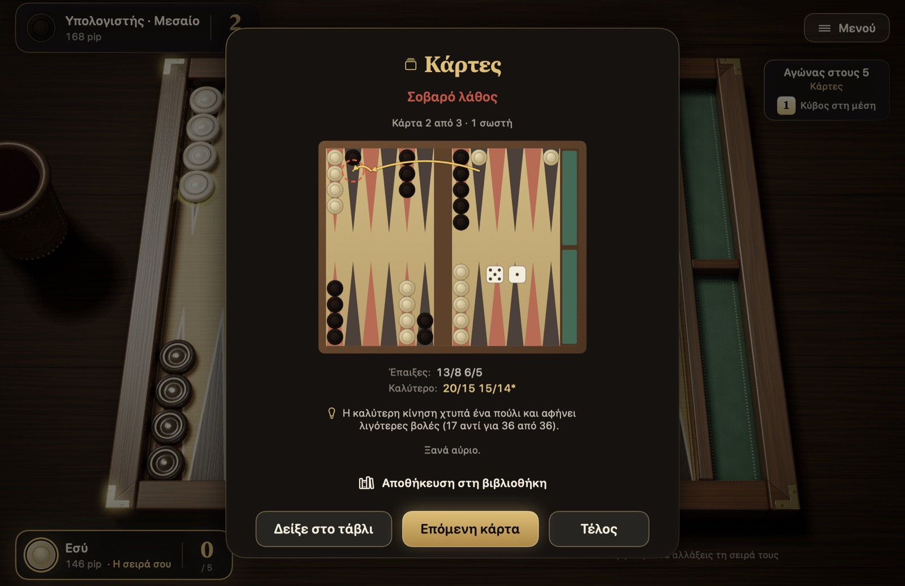
Σχήμα 5.16Η κάρτα αποτελέσματος της μελέτης καρτών: στο πάνω μέρος ο αριθμός της κάρτας και πόσες βρέθηκαν σωστά, στο κάτω μέρος η μέρα που η κάρτα θα ξανάρθει.
Βιβλιοθήκη Ανοιγμάτων. Απαριθμεί για καθεμιά από τις είκοσι μία αρχικές ζαριές τις καλύτερες κινήσεις: με την απώλεια σε σχέση με την καλύτερη και τις πιθανότητες νίκης και γκάμον. Οι αξίες είναι ο μέσος όρος της αναζήτησης 3 επιπέδων του Μάστερ και μιας προσομοίωσης 5.184 δοκιμών που παίζεται ως το τέλος του παιχνιδιού· οι πιθανότητες προέρχονται από την προσομοίωση. Με τις ψηφίδες στο πάνω μέρος διαλέγεις το σετ κανόνων: στους διεθνείς κανόνες δεν υπάρχει άνοιγμα με διπλές, στο τουρκικό τάβλι υπάρχει. Όταν διαλέξεις μια ζαριά, το διάγραμμα δείχνει την καλύτερη κίνηση· οι «Απαντήσεις του αντιπάλου» ανοίγουν την καλύτερη απάντηση σε κάθε ζαριά του αντιπάλου μετά από εκείνη την κίνηση. Το «Στήσε στο τάβλι» στήνει την αρχική θέση με αυτή τη ζαριά σε λειτουργία εξέτασης: οι υποψήφιες κινήσεις παίζονται στο τάβλι· έτσι εξασκείσαι στις κινήσεις ανοίγματος της ενότητας 4.3.
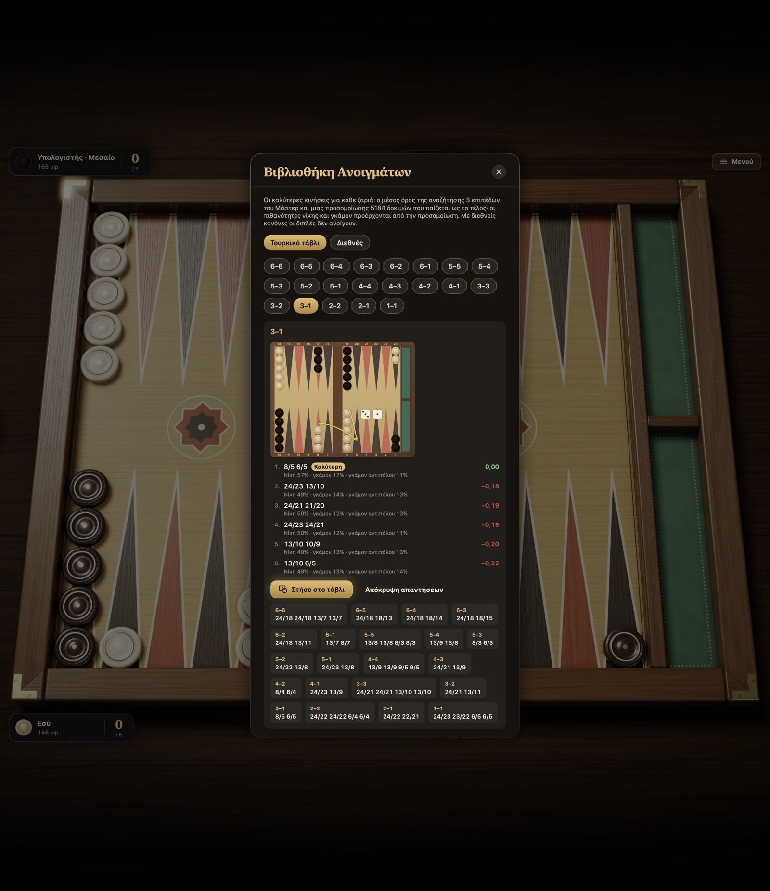
Σχήμα 5.17Βιβλιοθήκη Ανοιγμάτων: σετ κανόνων, 21 αρχικές ζαριές, το διάγραμμα της καλύτερης κίνησης για το 3-1, οι υποψήφιες με τις πιθανότητες νίκης και γκάμον, από κάτω οι απαντήσεις του αντιπάλου.
Βιβλιοθήκη. Οι θέσεις που αποθηκεύεις και οι αγώνες του αρχείου συγκεντρώνονται σε μία κάρτα. Μια θέση την προσθέτεις με το κουμπί «Αποθήκευση στη βιβλιοθήκη» στην κάρτα παύσης, στο πάνελ εξέτασης, στον επεξεργαστή θέσης ή στην κάρτα αποτελέσματος της θέσης της ημέρας· η ίδια θέση δεν προστίθεται δύο φορές, και το κουμπί γίνεται «Στη βιβλιοθήκη». Σε κάθε γραμμή της καρτέλας «Θέσεις» γράφονται το όνομα της θέσης, η ημερομηνία, η προέλευσή της, πληροφορίες για τον αγώνα και τα ζάρια, οι ετικέτες και η σημείωση: με το μολύβι αλλάζεις το όνομα, τις ετικέτες (χωρισμένες με κόμμα) και τη σημείωση, με τον κάδο διαγράφεις τη θέση· το «Άνοιγμα στο τάβλι» στήνει τη θέση στο πάνελ εξέτασης, και η μηχανή Μάστερ την αξιολογεί. Η καρτέλα «Αγώνες» απαριθμεί το αρχείο: ξεχωρίζει τις νίκες από τις ήττες, γράφει την κατά προσέγγιση τιμή PR των αγώνων που έχουν αναλυθεί, και με το «Αναπαραγωγή» ξαναβλέπεις τον αγώνα. Το πεδίο αναζήτησης ψάχνει σε όνομα, ετικέτα, σημείωση, ημερομηνία και αναγνωριστικό· οι ψηφίδες ξεχωρίζουν το τουρκικό τάβλι από τους διεθνείς κανόνες.
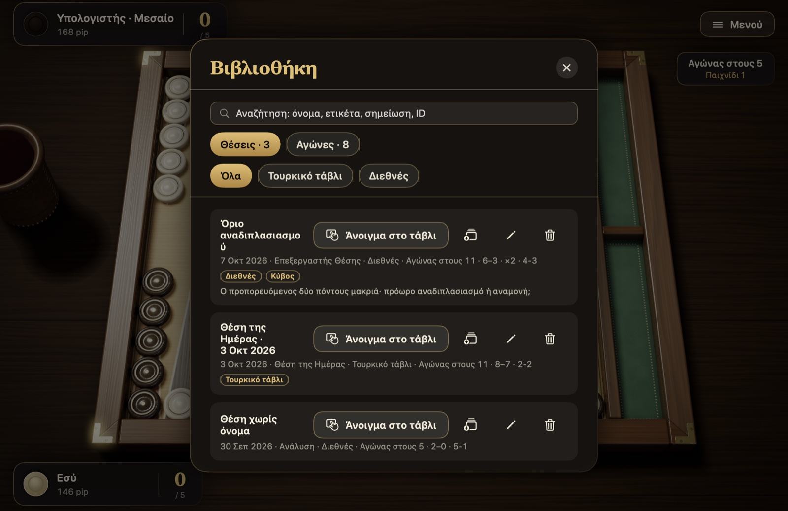
Σχήμα 5.18Βιβλιοθήκη: πεδίο αναζήτησης, καρτέλες θέσεων και αγώνων, ψηφίδες κανόνων· σε κάθε θέση, δίπλα στο όνομα, τα κουμπιά ανοίγματος στο τάβλι, κάρτας, επεξεργασίας και διαγραφής, και από κάτω ημερομηνία, προέλευση, πληροφορίες αγώνα, ετικέτες και σημείωση.
Επεξεργαστής Θέσης. Στήνεις με το χέρι όποια θέση θέλεις· στον επεξεργαστή μπαίνεις από την κάρτα «Εξάσκηση» ή με το «Άνοιγμα επεξεργαστή» της κάρτας «Αγώνες». Διαλέγεις το εργαλείο «Βάλε ανοιχτό πούλι», «Βάλε σκούρο πούλι» ή «Αφαίρεση» και κάνεις κλικ στις πόρτες του ταβλιού και στην μπάρα (στο iPad αγγίζεις)· στο Mac το δεξί κλικ αφαιρεί πούλι. Κάθε πλευρά έχει το πολύ 15 πούλια, τα πούλια που δεν είναι στο τάβλι μετρούν ως βγαλμένα, σε κλειστή πόρτα του αντιπάλου δεν μπαίνει πούλι. Στο κάτω μέρος διαλέγεις ποιος έχει τη σειρά, τα ζάρια (μπορεί και «Χωρίς ζάρια»), την αξία και τη θέση του κύβου, το μήκος του αγώνα, το σκορ και αν έχει παιχτεί το παιχνίδι Crawford. Η «Αρχική θέση» στήνει την αρχική διάταξη, το «Καθάρισμα» αδειάζει το τάβλι, η «Αντιστροφή πλευρών» στήνει τη θέση από τη σκοπιά του αντιπάλου, η «Επικόλληση» διαβάζει το αναγνωριστικό θέσης από το Πρόχειρο. Η «Εξέταση» ανοίγει τη θέση στο πάνελ εξέτασης: βλέπεις την αξιολόγηση της μηχανής Μάστερ και, αν έδωσες ζάρια, τις καλύτερες κινήσεις. Το «Παίξε» ξεκινά από τη θέση ένα ελεύθερο παιχνίδι· το ελεύθερο παιχνίδι δεν αποθηκεύεται, δεν μπαίνει στα στατιστικά και στο αρχείο. Σε θέση που δεν μπορεί να στηθεί, και τα δύο κουμπιά απενεργοποιούνται και γράφεται ο λόγος: αν η μία πλευρά έχει βγάλει όλα τα πούλια της ή αν το σκορ έχει φτάσει το μήκος του αγώνα.
Κεφάλαιο 6
Παράρτημα αναφοράς
Αυτό το κεφάλαιο είναι για αναφορά: συχνές ερωτήσεις, γλωσσάρι όρων και ευρετήριο. Η στήλη «Βλέπε» του πίνακα όρων οδηγεί στις ενότητες όπου εξηγείται κάθε όρος.
6.1 Συχνές ερωτήσεις
Τα ζάρια μου ήρθαν κακά· μπορώ να πω πάσο; Όχι. Αν τα ζάρια επιτρέπουν κάποια κίνηση, είσαι υποχρεωμένος να την κάνεις. Το πάσο γίνεται αυτόματα, και μόνο όταν δεν παίζεται κανένα ζάρι.
Μπορώ να παίξω πούλι του αντιπάλου; Όχι. Κάθε παίκτης παίζει μόνο τα δικά του πούλια.
Αφού χτυπήσω ένα πούλι, μπορώ να συνεχίσω με το ίδιο πούλι; Στους διεθνείς κανόνες ναι: το χτύπημα δεν τελειώνει το ταξίδι του πουλιού, μπορείς να το προχωρήσεις με το ζάρι που απομένει. Στο διαδεδομένο τουρκικό τάβλι, όμως, το χτύπα-και-φύγε μέσα στο δικό σου σπίτι απαγορεύεται. Στο Πούλια και Ζάρια, όταν παίζεις με τουρκικούς κανόνες, αυτή η απαγόρευση εφαρμόζεται αν στον νέο αγώνα επιλέχθηκε η «Απαγόρευση χτύπα-και-φύγε»· από προεπιλογή είναι κλειστή.
Πόσα πούλια το πολύ μπορούν να σταθούν σε μια πόρτα; Δεν υπάρχει όριο. Σε δική σου πόρτα μπορείς να στοιβάξεις όσα πούλια θέλεις.
Μπορώ να αρχίσω το μάζεμα ενώ έχω χτυπημένο πούλι; Όχι. Για το μάζεμα πρέπει όλα τα πούλια σου να είναι στο σπίτι σου· το πούλι στην μπάρα θεωρείται εκτός σπιτιού.
Είμαι υποχρεωμένος να προσθέσω τα δύο ζάρια και να παίξω με ένα πούλι; Όχι. Μπορείς να δώσεις τα δύο ζάρια και σε δύο διαφορετικά πούλια. Αν παίξεις με ένα πούλι, ο ενδιάμεσος σταθμός πρέπει να είναι ανοιχτός.
Μπορεί το παιχνίδι να τελειώσει ισόπαλο; Όχι. Επειδή οι παίκτες παίζουν εναλλάξ, κάποιος τελειώνει οπωσδήποτε πρώτος.
Αναγκάστηκα να ανοίξω μια κλειστή πόρτα στο σπίτι μου· είναι λάθος; Όχι πάντα. Κάποιες φορές τα ζάρια δεν αφήνουν άλλη επιλογή· ο κανόνας της αναγκαστικής κίνησης προηγείται από όλα.
Στο Πούλια και Ζάρια έπαιξα κατά λάθος ένα πούλι· τι να κάνω; Με τις προεπιλεγμένες ρυθμίσεις το βήμα που παίχτηκε δεν παίρνεται πίσω. Για να μπορείς να αναιρείς, ενεργοποίησε στις Ρυθμίσεις την «Εμφάνιση κουμπιού Αναίρεσης»· μπορείς να πάρεις πίσω τα βήματα της σειράς σου μέχρι να τελειώσει ο γύρος. Όταν η «Αυτόματη επιβεβαίωση κινήσεων» είναι ανοιχτή, ο γύρος τελειώνει με το τελευταίο βήμα· αν την κλείσεις κι αυτή, μπορείς να αναιρείς μέχρι να πατήσεις «Τέλος».
Γιατί αυξήθηκε απότομα η μέτρηση pip μου; Χτυπήθηκε πούλι σου. Επειδή το πούλι που πηγαίνει στην μπάρα γυρίζει στην αρχή της διαδρομής, η μέτρηση pip σου αυξάνεται κατά την απόσταση που έχασε εκείνο το πούλι.
Είναι τα ζάρια πειραγμένα; Όχι. Τα ζάρια ρίχνονται σε αυτή τη συσκευή, από τη γεννήτρια τυχαίων αριθμών του λειτουργικού συστήματος· για τις δύο πλευρές χρησιμοποιείται η ίδια γεννήτρια, και δεν υπάρχει καμία προσαρμογή ανά επίπεδο δυσκολίας. Σε μικρές σειρές οι διαδοχικές διπλές ή τα κακά ζάρια είναι φυσιολογικά· μακροπρόθεσμα η κατανομή εξισορροπείται. Η κάρτα Στατιστικά δείχνει πόσες φορές ήρθε κάθε όψη, δίπλα στον αναμενόμενο αριθμό ανά όψη.
Μπορώ να εξετάσω στο Πούλια και Ζάρια έναν αγώνα που έπαιξα σε άλλο πρόγραμμα; Ναι. Τις καταγραφές αγώνων .mat του Jellyfish και του XG, .xg του XG και .sgf του GNU Backgammon τις βάζεις στο αρχείο με την «Εισαγωγή…» της κάρτας «Αγώνες»· ξαναβλέπεις τα παιχνίδια τους και με την «Ανάλυση» τα δίνεις για ανάλυση στη μηχανή Μάστερ. Λεπτομέρειες στην ενότητα 5.6.
Μπορώ να στήσω μια θέση μόνος μου και να ρωτήσω γι’ αυτήν; Ναι. Με το εργαλείο «Επεξεργαστής Θέσης» της κάρτας «Εξάσκηση» στήνεις τα πούλια, τα ζάρια, τον κύβο και το σκορ, και με την «Εξέταση» βλέπεις την αξιολόγηση της μηχανής Μάστερ και τις καλύτερες κινήσεις· λεπτομέρειες στην ενότητα 5.12.
Μεταφέρονται οι αγώνες μου ανάμεσα σε Mac και iPad; Αν το θέλεις. Αν στις Ρυθμίσεις είναι ανοιχτός ο «Συγχρονισμός με iCloud», οι αγώνες σε εξέλιξη, το αρχείο, η βιβλιοθήκη και οι κάρτες συγχρονίζονται μέσω του iCloud Drive σου ανάμεσα στις συσκευές σου με τον ίδιο λογαριασμό Apple· τα στατιστικά και τα επιτεύγματα μένουν χωριστά σε κάθε συσκευή. Ο συγχρονισμός είναι κλειστός από προεπιλογή και υπάρχει μόνο στην έκδοση του App Store.
6.2 Όροι και ευρετήριο
Πίνακας 6.1 Όροι και ευρετήριο
Όρος
Σημασία
Βλέπε
Άγκυρα
Κλειστή πόρτα με δύο ή περισσότερα πούλια που κρατάς στο σπίτι του αντιπάλου
Πόσους γύρους μπροστά κοιτάζει η αναζήτηση ή η επιλογή κίνησης στην προσομοίωση, με τον γύρο του κάθε παίκτη να μετρά χωριστά· το 1 επίπεδο είναι η άμεση αξιολόγηση
Μια θέση που έρχεται κάθε μέρα σε όλους, χωριστή για τα δύο σετ κανόνων: τα ζάρια είναι δοσμένα, ζητείται η καλύτερη κίνηση· η πρώτη προσπάθεια της μέρας μετρά στο σερί και στα στατιστικά
Αν στο παιχνίδι δεν έχει γίνει διπλασιασμός, το γκάμον και το μπάκγκαμον μετρούν μόνο 1 πόντο· συναντιέται στις συνεδρίες, δεν χρησιμοποιείται στους αγώνες
Η μεταφορά των αγώνων σε εξέλιξη, του αρχείου, της βιβλιοθήκης και των καρτών μέσω του iCloud Drive ανάμεσα στις συσκευές με τον ίδιο λογαριασμό Apple· προαιρετική
Αν έφτασες ως εδώ, σημαίνει ότι γνώρισες όλους τους κανόνες του ταβλιού, τα βασικά σχέδια και κάθε γωνιά του Πούλια και Ζάρια. Τα υπόλοιπα μαθαίνονται πάνω στο τάβλι. Παίξε τους πρώτους σου αγώνες στο επίπεδο «Εύκολο»· ρίξε μια ματιά στην ανάλυση των παιχνιδιών που χάνεις, δες ποιες αποφάσεις σου κόστισαν πόντους, και μετά ανέβασε το επίπεδο. Τα ζάρια άλλοτε χαμογελούν σε σένα, άλλοτε στον αντίπαλο· μακροπρόθεσμα τη διαφορά την κάνουν οι επιλογές σου.
Εδώ και πέντε χιλιάδες χρόνια το τάβλι βάζει τους ανθρώπους να καθίσουν στις δύο πλευρές ενός τραπεζιού. Εύχομαι το Πούλια και Ζάρια να είναι μια μικρή συμβολή σε αυτή την παράδοση και να σου χαρίσει ευχάριστες ώρες. Οι απόψεις και οι προτάσεις σου βοηθούν να γίνει καλύτερη η εφαρμογή.